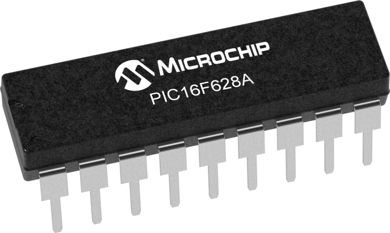
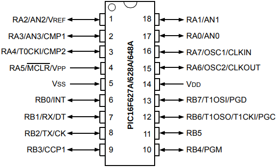
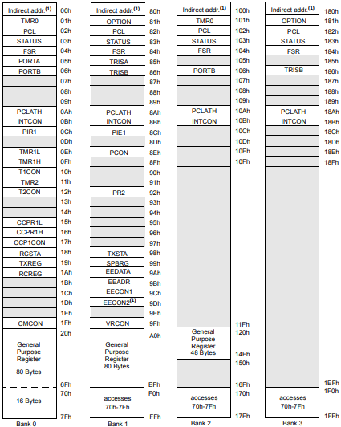
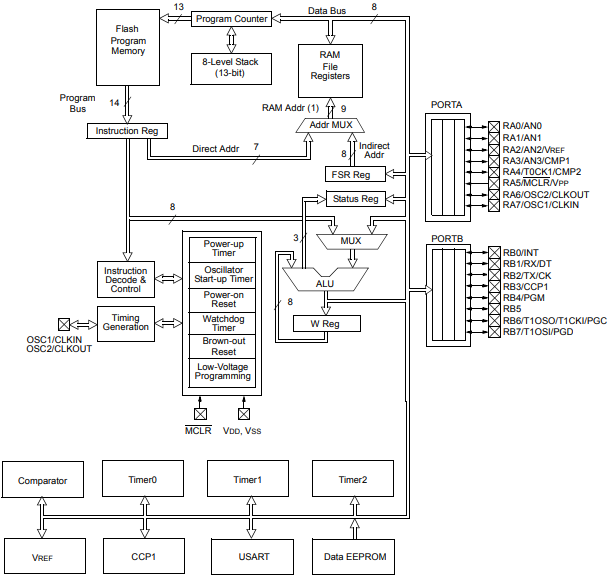

Conhecendo o PIC16F628A
com exemplos
por Everton Pereira da Cruz
Índice
- Episódio 1: Conhecendo o invólucro do componente, a pinagem, o diagrama de blocos e a tabela de memoria do PIC16F628A
- Episódio 2: Conhecendo o MPLAB X IDE, a estrutura de um arquivo em assembly, básico de números binários, octais e hexadecimais, e esquema de clock e ciclo de instrução.
- Episódio 3: Conhecendo os registradores STATUS, OPTION (OPTION_REG), INTCON, W e o registradores de uso geral para o usuário do PIC16F628A
- Episódio 4: Conhecendo os registradores PORTA, PORTB, TRISA e TRISB do PIC16F628A
- Episódio 5: Conhecendo as instruções GOTO, MOVLW, MOVWF, MOVF, BCF, BSF, BTFSC e BTFSS para o PIC16F628A. Execução passo a passo do código
- Episódio 6: Exemplo 1 - Controle de estados dos pinos do PIC16F628A e uso do simulador SimulIDE
- Episódio 7: Gravação do PIC16F628A com os hardwares K150 e o PICKIT3
- Episódio 8: Conhecendo as instruções ADDLW, ADDWF, INCF, INCFSZ, SUBLW, SUBWF, DECF, DECFSZ, ANDLW, ANDWF, IORLW, IORWF, XORLW, XORWF e COMF para o PIC16F628A
- Episódio 9: Conhecendo as instruções CLRF, CLRW, NOP, RLF, RRF e SWAPF para o PIC16F628A
- Episódio 10: Exemplo 2 - Criando delay no PIC16F628A
- Episódio 11: Criando e chamando subrotinas com CALL, RETURN e RETLW no PIC16F628A
- Episódio 12: Conhecendo a interrupção externa em RB0 e a instrução RETFIE no PIC16F628A
- Episódio 13: Conhecendo a interrupção por mudança de estados em RB4 a RB7 no PIC16F628A
- Episódio 14: Conhecendo a interrupção por estouro em Timer0 (registrador TMR0 de 8 bits) de 8 bits no PIC16F628A
- Episódio 15: Conhecendo a interrupção por estouro em Timer1 (registradores TMR1H, TMR1L e T1CON de 8 bits) de 16 bits no PIC16F628A
- Episódio 16: Conhecendo a interrupção por coincidência em Timer2 (registrador TMR2, PR2 e T2CON de 8 bits) de 8 bits no PIC16F628A
- Episódio 17: Conhecendo o módulo CCP - Modo capturar e a interrupção associada
- Episódio 18: Conhecendo o módulo CCP - Modo comparar e a interrupção associada
- Episódio 19: Conhecendo o módulo CCP - Modo de Modulação por Largura de Pulso (PWM)
- Episódio 20: Conhecendo o módulo Comparador e a interrupção associada
- Episódio 21: Conhecendo o módulo de tensão elétrica de referência
- Episódio 22: Conhecendo a escrita e a leitura na memória EEPROM
- Episódio 23: Conhecendo o módulo USART - Transmissão assíncrona e a interrupção associada
- Episódio 24: Conhecendo o módulo USART - Recepção assíncrona e a interrupção associada
- Episódio 25: Conhecendo o Watchdog Timer (WDT) e a instrução CLRWDT
- Episódio 26: Conhecendo o modo sleep (dormir) e a instrução SLEEP
- Episódio 27: Exemplo 3 - Integração dos episódios anteriores em um projeto de controle de acesso
- Episódio 28: Desenvolvimento de código em C para o PIC16F628A
Episódio 1: Conhecendo o invólucro do componente, a pinagem, o diagrama de blocos e a tabela de memoria do PIC16F628A
O microcontrolador PIC16F628A, conforme o datasheet disponível em Microchip (2020a) tem as seguintes características:
- clock de operação até 20 MHz;
- 8 níveis de pilha;
- apenas 35 instruções;
- oscilador interno de 4 MHz ou de 48 kHz (para baixo consumo);
- modo dormir (sleep) para economia de energia;
- programação dos estados de pull-up sobre os pinos em PORTB;
- tensão de operação de 2 a 5,5 volts;
- 16 pinos de entrada/saída;
- 1 módulo comparador com 2 comparadores analógicos;
- 3 módulos de temporizadores/contadores com 2 módulos de 8 bits e 1 de 16 bitscom suas diferenças;
- 1 módulo de capturar (16 bits), comparar (16 bits) e PWM (10 bits);
- 1 módulo de comunicação USART;
- 2048 palavras de memória de programa;
- 224 bytes de memória SRAM (dados);
- 128 bytes de memória EEPROM (dados);
Na mesma documentação, encontram-se os modelos de encapsulamentos disponíveis para o PIC16F628A, os quais são PDIP, SOIC, SSOP e QFN. Nesta sequência de episódios, baseamos o estudo no encapsulamento PDIP (Plastic Dual In-line Package) de 18 pinos conforme Figura 1.1 e Figura 1.2.
| Figura 1.1 -PIC16F628A com invólucro PDIP |
|---|
|  |
| Fonte: MICROCHIP 2020 (a) |
| Figura 1.2 -Pinagem do PIC16F628A |
|---|
|  |
| Fonte: MICROCHIP 2020b pag. 4 |
O PIC16F628A é um microcontrolador com arquitetura RISC(Reduced Instruction Set Computer) e conforme Wikipedia (2020), esse tipo de arquitetura é favorecida por um conjunto simples e pequeno de instruções no qual levam aproximadamente a mesma quantidade de tempo para serem executadas, e elas podem ser vistas na Figura 1.3.
| Figura 1.3 -Conjuntos de instruções assembly para PIC16F628A |
|---|

|
| Fonte: MICROCHIP 2020 (b) pag. 118 |
Esse conjunto de instruções reduzidas, são separadas em instruções com bytes associados a registradores, com bits de registradores, literais (números de 8 bits) diretamente e instruções de controle de fluxo de rotinas entre outros.
Outra qualidade do PIC16F628A é o seu controle através de registradores disponíveis em quatro bancos de memória (Bank 0, Bank 1, Bank 2 e Bank 3) e exibido na Figura 1.4.
| Figura 1.4 -Mapa de memória de dados |
|---|
|  |
| Fonte: MICROCHIP 2020 (b) pag. 118 |
Além dos registradores para controle do microcontrolador, há disponíveis também registradores para uso geral (general purpose register), que utilizaremos para armazenar estados, quantidades e outros valores relativos a lógica de programação que abordaremos com exemplos nestes episódios.
O relacionamento entre as estruturas internas do PIC16F628A e seus módulos podem ser vistos na Figura 1.5, a qual abordaremos todos os módulos disponíveis através de exemplos práticos.
| Figura 1.5 -Diagrama de blocos |
|---|
|  |
| Fonte: MICROCHIP 2020 (b) pag. 12 |
No próximo episódio veremos como criar nosso primeiro projeto e entenderemos o relacionamento dos códigos com o microcontrolador PIC16F628A.
Episódio 2: Conhecendo o MPLAB X IDE, a estrutura de um arquivo em assembly, básico de números binários, octais e hexadecimais, e esquema de clock e ciclo de instrução.
Neste episódio veremos como é o processo de criação de um projeto no MPLAB X IDE, criação de um arquivo em assembly (ASM) com sua estrutura (diretiva include, bitsde configuração em _CONFIG, diretivas define para definições de espaços de memória ou procedimento e endereço do vetor reset(0x00) e interrupção (0x04)).
Começaremos conhecendo o MPLAB X IDE 5.30, disponível no endereço https://www.microchip.com/development-tools/pic-and-dspic-downloads-archive e na Figura 2.1 pode ser visto a interface da IDE, sendo que esta (MPLAB X IDE) é a IDE oficial da Microchip para edição de projetos para microcontroladores PIC.
Na Figura 2.1 há 6 retângulos que representam as partes da tela da IDE, onde o retângulo em vermelho representa a barra dos menus, o segundo retângulo laranja é a barra de ferramentas, o terceiro retângulo em rosa é a caixa de projetos, o quarto retângulo em azul é a área de informações de inicialização da IDE e também principalmente, onde são exibidos os arquivos para edição do código, o quinto retângulo em verde a caixa de Dashboard, e o sexto e último retângulo, em amarelo, é a caixade informações (compilação) ou configurações (debug) dos processos terminados ou em execução.
Conhecendo a tela inicial do programa, podemos criar nosso primeiro projeto para o PIC16F628A, seguindo os seguintes passos
- Acesse o meu Filee escolha a opção New Project;
- Em Choose Project, conforme Figura 2.2, na opção categoriesescolha a opção Microchip Embeddede na opção projectsescolha a opção Standalone Projecte após clique no botão Next;
- Em Select Device, conforme Figura 2.3, na opção Familyescolha All Familiese opção Devicedigite PIC16F628Ae clique no item respondido pela consulta e também no botão Next;
- Em Select Header, conforme Figura 2.4, não modifique nada e apenas clique no botão Next;
- Em Select Tool (Optional), conforme Figura 2.5, na opção Hardware Tools, escolha a opção Simulatore clique no botão Next;
- Em Select Compiler, conforme Figura 2.6, na opção Compiler Toolchains, em mpasm escolha mpasm (v5.86) (montador assembly) e clique no botão Next;
IMPORTANTE: Essas versões de compiladores e IDE são obtidas em https://www.microchip.com/development-tools/pic-and-dspic-downloads-archive
- Em Select Project Name and Folder, conforme Figura 2.7, no campo Project Namecoloca-se o nome do projeto que neste caso foi usado FIRST_PROJECT_PIC16F628A, e em Project Locationpode-se escolher o diretório onde será armazenado o projeto, sendo que neste caso foi em C:\Users\Engineer\MPLABXProjects. Ao final desse passo clique no botão Finish.
IMPORTANTE: Caso necessite voltar ainda aqui neste assistente de criação de projeto, utilize o botão Back.
| Figura 2.1 -Tela do MPLAB X IDE 5.30 |
|---|

|
| Fonte: Fonte: Autor 2020 |
| Figura 2.2 -Escolha do tipo de projeto |
|---|

|
| Fonte: Fonte: Autor 2020 |
| Figura 2.3 - Seleção do modelo do microcontrolador |
|---|

|
| Fonte: Fonte: Autor 2020 |
| Figura 2.4 - Seleção de cabeçalho |
|---|

|
| Fonte: Fonte: Autor 2020 |
| Figura 2.5 - Seleção da ferramenta de depuração e gravação |
|---|

|
| Fonte: Fonte: Autor 2020 |
| Figura 2.6 - Seleção do compilador |
|---|

|
| Fonte: Fonte: Autor 2020 |
| Figura 2.7 - Nome e seleção do diretório para o projeto |
|---|

|
| Fonte: Fonte: Autor 2020 |
Os procedimentos anteriores para a criação, apenas disponibilizam a criação do projeto, sem a inclusão de arquivo base para a codificação e para isso teremos que criar um arquivo para podermos conhecer o padrão de codificação no PIC16F628A.
Para a criação do arquivo .asm, siga os seguintes passo:
- Acesse o menu File;
- Escolha a opção New File;
- Na tela de Choose File Type, escolha a opção Assemblerem Categories;
- Agora selecione a opção AssemblyFile.asmem File Typese clique no botão Next;
- Neste passo final, na tela Name and Location, no campo File Name, coloque o nome do arquivo assemblyque será main, o qual a extensão asm é inserida automaticamente pela IDE;
- Clique posteriormente no botãoFinishe o arquivo aberto é visto na Figura 2.8.
| Figura 2.8 - Arquivo main.asmcriado e aberto para edição |
|---|

|
| Fonte: Fonte: Autor 2020 |
Na Figura 2.8, o arquivo main.asmfoi aberto automaticamente ao final do processo de criação dele, porém ele está vazio decorrente de ainda não ter sido feito uso de comandos de programação, que veremos a seguir.
Começaremos conhecendo o arquivo base para o nosso trabalho, que será usado até o 27º episódio (pois do episódio 1 ao 27 usa-se a linguagem assemblyenquanto que o 28º episódio faz uso de linguagem C) desta série de uso do microcontrolador PIC16F628A, sendo que o arquivo base "Codigo 2.1 - Exemplo base.asm" é exibido no Código 2.1 e o download pode ser feito em https://github.com/KyryIx/programando-com-o-microcontrolador-PIC16F628A.
O Código 2.1 é o nosso arquivo base para assembly, no qual foi inserido a numeração de linhas à esquerda como forma de facilitar a referência no texto, mas que não compõem o padrão de arquivo.
Começamos notando que as linhas 1, 2 e 3 iniciam com o caracter ;que em assembly representa linha de comentário, e assim essas linhas foram usadas como comentário inicial do arquivo base.
Código 2.1 - Exemplo base
; DESENVOLVIDO POR EVERTON P. CRUZ
; COM O PROPOSITO DE USO BASE PARA OS EPISODIOS
; DA SERIE CONHECENDO O MICROCONTROLADOR PIC16F628A
#INCLUDE
LIST P=16F628A
__CONFIG _BOREN_ON & _CP_OFF & _PWRTE_ON & _WDT_OFF & _LVP_OFF & _MCLRE_OFF & _INTRC_OSC_NOCLKOUT
; DEFINICAO DE CONSTANTES E VARIAVEIS
#DEFINE BOTAO PORTB, RB0
#DEFINE CONTADOR 0x20
ORG 0x00 ; TRATAMENTO DO RESET
GOTO SETUP_PROCESSO
ORG 0x04 ; TRATAMENTO DAS INTERRUPCOES
RETFIE
SETUP_PROCESSO:
; SELECIONA O BANCO 1 DE MEMORIA
BCF STATUS, RP1
BSF STATUS, RP0
BSF PCON, OSCF ; CONF. FREQÜÊNCIA DO OSCILADOR INTERNO EM 4 MHz
; CONFIGURACOES DO REGISTRADOR OPTION
MOVLW B'10000000'
; 1 - NOT_RBPU -> DESATIVA RESISTORES PULL-UP
; 0 - INTDEG -> INT. ATIV. BORDA DE DESCIDA RB0
; 0 - TOCS -> O CLOCK DO TIMER 0 EH INTERNO
; 0 - TOSE -> BORDA DE SUBIDA NO TIMER 0, RA4
; 0 - PSA -> PRESCALER ASSOCIADO AO TIMER 0
; 0 - PS2,PS1,PS0 -> TIMER 0 COM RAZAO 1:2
MOVWF OPTION_REG
; MODIFICA O COMPORTAMENTO DA PORTA
MOVLW B'11111111'
; 1 - PINO RA7 COMO ENTRADA
; 1 - PINO RA6 COMO ENTRADA
; 1 - PINO RA5 COMO ENTRADA
; 1 - PINO RA4 COMO ENTRADA
; 1 - PINO RA3 COMO ENTRADA
; 1 - PINO RA2 COMO ENTRADA
; 1 - PINO RA1 COMO ENTRADA
; 1 - PINO RA0 COMO ENTRADA
MOVWF TRISA ; CONFIGURAÇÕES DO TRISA
; MODIFICA O COMPORTAMENTO DA PORTB
MOVLW B'11111111'
; 1 - PINO RB7 COMO ENTRADA
; 1 - PINO RB6 COMO ENTRADA
; 1 - PINO RB5 COMO ENTRADA
; 1 - PINO RB4 COMO ENTRADA
; 1 - PINO RB3 COMO ENTRADA
; 1 - PINO RB2 COMO ENTRADA
; 1 - PINO RB1 COMO ENTRADA
; 1 - PINO RB0 COMO ENTRADA
MOVWF TRISB ; CONFIGURAÇÕES DO TRISB
; SELECIONA O BANCO 0 DE MEMORIA
BCF STATUS, RP1
BCF STATUS, RP0
; DEFINE O MODO DE OPERACAO DO COMP. ANALOG. DESLIGADOS
MOVLW B'00000111'
MOVWF CMCON
; CONFIGURACOES DE INTERRUPCOES
MOVLW B'00000000'
; 0 - GIE -> DESATIVA INT./CHAVE GERAL
; 0 - EEIE -> DESATIVA INT. DA EEPROM
; 0 - T0IE -> DESATIVA INT. NO TMR0
; 0 - INTE -> DESATIVA INT. NO RB0/INT
; 0 - RBIE -> DESATIVA INT. MUDANCA RB<7:4>
; 0 - T0IF -> FLAG DE TRANSBORDO DO TMR0
; 0 - INTF -> FLAG DE RESPOSTA INT. RB0/INT
; 0 - RBIF -> FLAG DE RESPOSTA INT EM RB<7:4>
MOVWF INTCON
; VARIAVEL CONTADOR COM VALOR 0
CLRF CONTADOR
PROGRAMAPRINCIPAL:
BTFSC BOTAO
GOTO PROGRAMAPRINCIPAL
GOTO CONTARPRODUTO
CONTARPRODUTO:
INCF CONTADOR, 1 ; INCREMENTA CONTADOR
LOOP_CALCULAR:
BTFSC BOTAO
GOTO PROGRAMAPRINCIPAL
GOTO LOOP_CALCULAR
END
A linha 4 do Código 2.1 representa a inclusão (INCLUDE) de um arquivo de cabeçalho de microcontrolador usado no projeto, que neste caso é o PIC16F628A e ele é acessível no endereço C:\Program Files (x86)\Microchip\MPLABX\v5.30\mpasmx\p16f628a.inc, no qual tem as definições de nome dos registros e seus respectivos endereços de memória, como nomes de bits e suas posições no byte.
Já a linha 5 do Código 2.1, ela é a linha que lista (LIST) o microcontrolador em uso no projeto, enquanto que a linha 6 é responsável pelas configurações (__CONFIG) de parâmetros para uso do microcontrolador e eles são visto na Tabela 2.1 e esta informação está conforme item 14.0 (SPECIAL FEATURES OF THE CPU) do datasheet, contido na página 98.
Tabela 2.1 -Bits de configuração
| Configuração | Função |
|---|---|
| _BOREN_ON |
Bit "Brown-out Reset Enable” que representa quando a tensão baixou até um limite inferior aceitável, abaixo disso o microcontrolador é resetado, no qual a tensão V BORé tipicamente de 4 V e ativado quando T BORfor maior que 72 ms. Os estados são:
|
|
_CP_OFF |
Bit "Flash Program Memory Code Protection" que atua sobre a permissão de proteção de leitura da memória de programa do PIC16F628A. Os estados são:
|
|
_PWRTE_ON |
Bit "Power-up Timer Enable" provém um tempo fixo de 72 ms na inicialização do microcontrolador como forma de permitir a estabilização da tensão de alimentação e após isso iniciar o PIC16F628A. Os estados são:
|
|
_WDT_OFF |
Bit "Watchdog Timer Enable” no qual provém uma inicialização do microcontrolador após 72 ms se o estado dele não for limpo (veremos o uso do WDT no episódio 25).
|
|
_LVP_OFF |
Bit "Low-Voltage Programming Enable" no qual representa a ativação de gravação em baixa tensão elétrica.
|
|
_MCLRE_OFF |
Bit "RA5/MCLR/VPP Pin Function Select" o qual representa se o pino RA5 será usado como Master clear.
|
|
_INTRC_OSC_NOCLKOUT |
Bit "Oscillator Selection" no qual _INTRC_OSC_NOCLKOUTrepresenta que o clock será pelo oscilador RC interno e os pinos RA6 e RA7 são pinos de I/O. Para saber mais sobre essas configurações leia os comentários em C:\Program Files (x86)\Microchip\MPLABX\v5.30\mpasmx\p16f628a.inc |
| Fonte: MICROCHIP 2020 (b) 98 | |
As linhas 9 e 10 são as linhas de definição de constantes ou variáveis, sendo que neste exemplo foi definido que a palavra SENSORque representará o bit RB0do registrador PORTBenquanto que a palavra CONTADORrepresenta o valor 0x20(em hexadecimal), que será usado neste exemplo como endereço de memória.
Iremos fazer uso da diretiva #DEFINEpara definir constantes ou endereços de registradores que iremos associar a estados ou quantidades que desejamos armazenar.
As linhas 12 e 15 são linhas de endereços de memória de programação onde 0x00representa o endereço de resetdo microcontrolador, onde o microcontrolador inicializa, e é neste endereço que ele começa a execução de código, enquanto que o endereço 0x04é o endereço no qual há a primeira instrução a ser executada apenas quando houver uma interrupção e a chave geral das interrupções estiverem ativas como também as respectivas chaves individuais das interrupções.
Na linha 13 há a instrução GOTO, que salta (GO TO) para o rótulo SETUP_PROCESSO, que está na linha 18, enquanto que na linha 16 há a instrução RETFIE, que é responsável por retornar de uma subrotina de interrupção (RETurn From IntErrupt).
Já nas linhas 18, 82, 87 e 89 estão os rótulos para uso em subrotinas, no qual podem ser criados vários rótulos para serem tratados com subrotinas e facilitar o desenvolvimento da aplicação.
Na linha 94 tem a instrução de finalização do código/arquivo assemblye nela contém a diretiva END.
As outras linhas contidas no arquivo assembly, são linhas de instrução necessárias para a lógica da solução proposta para um determinado problema e veremos essas instruções ao longo dos episódios
Conforme visto no arquivo assembly, existem linhas que contêm comando que fazem uso de números escritos como 0x04e outros como B'11111111'. Essas formas de escrever números permitem fazer uso aqui de dois tipos de sistema numérico, sendo eles o sistema numérico hexadecimal (base 16) e o sistema numérico binário (base 2).
No sistema numérico decimal como conhecemos, fazemos uso de 10 algarismos para representar qualquer quantidade, fazendo um de um sistema posicional, e assim esses algarismos são 0, 1, 2, 3, 4, 5, 6, 7, 8 e 9. Já no sistema numérico hexadecimal, há 16 algarismos para fazer uso no sistema posicional e eles são 0, 1, 2, 3, 4, 5, 6, 7, 8, 9, A, B, C, D, E e F, e como isso o mesmo número 10 na base decimal é igual ao número A na base hexadecimal, enquanto que o número FE na base hexadecimal é igual a número 254 na base decimal
Ao escrever códigos para PIC16F628A pode-se também utilizar de números no sistema numérico binário (base 2) no qual existem apenas 2 algarismos para uso sendo eles o 0 e o 1.
O mesmo número 10 em decimal, A em hexadecimal, será 1010 em binário. E por último existe ainda o sistema numérico octal composto dos algarismo 0, 1, 2, 3, 4, 5, 6 e 7, no qual é pouco utilizado, mas que é bom conhecer e assim conforme a Tabela 2.2, tem-se a relação entre os quatro sistemas numéricos.
Tabela 2.2 - Equivalência de números nos sistemas numéricos
| valor decimal | valor binário | valor octal | valor hexadecimal |
|---|---|---|---|
| 0 | 0 | 0 | 0 |
| 1 | 1 | 1 | 1 |
| 2 | 10 | 2 | 2 |
| 3 | 11 | 3 | 3 |
| 4 | 100 | 4 | 4 |
| 5 | 101 | 5 | 5 |
| 6 | 110 | 6 | 6 |
| 7 | 111 | 7 | 7 |
| 8 | 1000 | 10 | 8 |
| 9 | 1001 | 11 | 9 |
| 10 | 1010 | 12 | A |
| 11 | 1011 | 13 | B |
| 12 | 1100 | 14 | C |
| 13 | 1101 | 15 | D |
| 14 | 1110 | 16 | E |
| 15 | 1111 | 17 | F |
| 16 | 10000 | 20 | 10 |
| ... | ... | ... | ... |
| Fonte: Autor 2020 | |||
Para saber mais sobre sistemas numéricos recomendo ler (BORBA, 2020)e vídeos sobre operações e conversões sobre estes sistemas em (CRUZ, 2020).
Agora que sabemos como funcionam os sistemas numéricos, veremos como representar eles dentro do MPASM™ Assembler da Microchip e para isso faz-se uso do documento (MICROCHIP, 2013 página 67)no qual dispõe da Tabela 2.3 que especifica o formato dos números no montador assembly MPASM.
Assim, quando houver necessidade de tratar individualmente estados ou endereços de memória, iremos fazer uso do sistema numérico binário, octal ou hexadecimal e quando houver necessidade de contagem de objetos, iremos usar o sistema numérico decimal.
Agora após vermos a estrutura do arquivo base em assembly e a forma de expressar quantidades e estados com 4 sistemas numéricos, veremos como é feito a execução das instruções, sem adentrar no escopo do que cada instrução faz, pois serão abordados nos próximos episódios.
Tabela 2.3 - Notação dos números no montador MPASM
| Tipo | Sintaxe | Exemplos |
|---|---|---|
| Binário | B'dígitos_binarios' |
B'00000111'
B'10100101' |
| Octal | O'dígitos_octais' |
O'767'
O'081' |
| Decimal |
D'dígitos_decimais'
ou .dígitos_decimais |
D'97'
ou .97 ou D'253' ou .253 |
| Hexadecimal |
H'dígitos_hexadecimais'
ou 0xdígitos_hexadecimais |
H'9f' ou 0x9f
ou H'9F' ou 0x9F |
| ASCII |
A'caracter'
ou 'caracter' |
A'C'
ou 'C' |
| Fonte: MICROCHIP 2020 (c) pag. 67 | ||
Conforme a Figura 2.9, pode-se ver que na posição de memória 000h (0x000) tem-se o vetor de reset, na posição 0004h (0x0004) o vetor de interrupção, da posição 0005h (0x0005)em diante tem-se a memória de programa incluída no chip.
Na Figura 2.9 pode-se ver ainda que a memória de programa do PIC16F628A começa em 0005h e vai até 07FFh totalizando 2048 palavras (000h até 07FFh).
Na Figura 2.9 ainda há a pilha (stack) que é composta de 8 níveis no qual pode ser usado para armazenar chamadas de subrotinas.
E agora para terminarmos este episódio,nós veremos o esquema de clock e ciclo de instrução que nos ajudará a entender como funciona o conceito de tempo dentro do PIC16F628A.
Na Figura 2.10 pode-se ver que há uma linha com o nome de OSC1 (clock de entrada), no qual pode ser inserido pelo pino RA7ou gerado internamente, e esse clock é divido por 4 gerando Q1, Q2, Q3 e Q4. Assim, internamente o contador de programa (Program Counter - PC) é incrementado em Q1, e a instrução é decodificada e executada durante o ciclo Q1 até ciclo Q4, mas enquanto uma instrução está sendo carregada (Fetch INST (PC)), a anterior que já foi carregada está sendo executada (Execute INST (PC - 1)) conforme Figura 2.10. Assim, um ciclo de instrução consiste dos quatro ciclos, Q1 a Q4.
| Figura 2.9 -Mapa de memória de programa e pilha |
|---|

|
| Fonte: MICROCHIP 2020 (b) pag. 17 |
Quando chegarmos no episódio 10, no qual falaremos em contagem de tempo, voltaremos a Figura 2.10 para utilizarmos o conceito de clocke ciclo de instrução para criação de subrotinas de temporizadores (delays).
| Figura 2.9 -Clock e ciclo de instrução |
|---|

|
| Fonte: MICROCHIP 2020 (b) pag. 15 |
Episódio 3: Conhecendo os registradores STATUS, OPTION (OPTION_REG), INTCON, W e o registradores de uso geral para o usuário do PIC16F628A
Neste episódio veremos os registradores especiais STATUS, OPTION(OPTION_REG), INTCONe We as suas definições e seus bits (exceto o registrador W) no qual são responsáveis pelo controle do microcontrolador (exceto o registrador W)
Começaremos o estudo pelo registrador STATUS(contido nos bancos 0, 1, 2 e 3 e endereço de memória 0x03, 0x830x103e 0x183) que é um dos registradores especiais mais utilizados, por necessidade de seleção de qual banco de memória se está trabalhando no momento e também dos estados que algumas instruções modificam
O registrador STATUSé composto pelos bits IRP, RP1, RP0, TO, PD, Z, DCe Cconforme a Tabela 3.1.
Tabela 3.1 -Bits do registrador STATUS
tipo-valor | R/W-0 | R/W-0 | R/W-0 | R-1 | R-1 | R/W-x | R/W-x | R/W-x |
bit | IRP | RP1 | RP0 | TO | PD | Z | DC | C |
posição | bit 7 | bit 6 | bit 5 | bit 4 | bit 3 | bit 2 | bit 1 | bit 0 |
Fonte: MICROCHIP 2020 (b) pag. 24
Na Tabela 3.1, a letra R e W em tipo-valor representam respectivamente que o bité de leitura e escrita, enquanto que o valor 0 ou 1 representa que este é o valor inicial por um reset, enquanto que se o valor for x, representa que o seu valor é desconhecido
O primeiro bitdo registrador STATUS, é o bitIRP(Register Bank Select bit) usado para endereçamento indireto, no qual se ele for igual a 0, indexa os bancos de memória 0 e 1, isto é, serão indexados os endereços de memória de 0x00a 0xFF. Já se o bitIRPfor igual a 1, indexa os bancos de memória 2 e 3, isto é, serão indexados os endereços de memória de 0x100a 0x1FF. Nesses episódios não trabalharemos com endereçamento indireto
Os bitsRP1e RP0são os bitsresponsáveis pela seleção do banco de registradores para acesso direto à memória, onde são definidos seus valores conforme a Tabela 3.2.
Tabela 3.2 -Bitsde seleção de banco de memória
RP1 | RP0 | Banco selecionado |
0 | 0 | Bank0 |
0 | 1 | Bank1 |
1 | 0 | Bank2 |
1 | 1 | Bank3 |
Fonte: MICROCHIP 2020 (b) pag. 24
Os bitsTO(Time Out) e PD(Power-Down) são bitsde estados relacionados a uma ocorrência de Watchdog Timerou Sleepe veremos em episódios posteriores
Já o bitZ(Zero), é o bitresponsável por expressar se uma operação aritmética ou lógica teve como resultado o valor 0. Se a operação aritmética ou lógica resultou em 0, o bitZserá setado, isto é, ficará com valor 1, caso contrário, o bitZserá limpo, isto é, ficará com o valor 0
Antes de falarmos nos bitsrestantes de do registrador STATUS, temos que esclarecer o que são nibblesem um número binário.
O bitDC(Digit Carry/borrow) tem seu estado modificado pelas instruções ADDWF, ADDLW, SUBWFe SUBLW, onde as regras são:
- o bitDCé igual a 1 quando o nibblemenos significativo passar de 0xFpara 0x0, isto é, quando houver um estouro no nibblemenos significativo, e é igual a 0 caso o contrário. O digit carryestá associado às instruções ADDWFe ADDLW;
- o bitDCé igual a 1 quando o nibblemenos significativo passar de 0xFpara 0x0, e isso ocorre na subtração por causa da ação da adição de complemento de 2 do segundo operando. Assim para borrow(empréstimo quando o primeiro operando for menor que o segundo operando) a polaridade é reversa, por causa de SUBWFe SUBLW.
O bit C(carry/borrow) tem seu estado modificado pelas instruções ADDWF, ADDLW, SUBWFe SUBLW, e as regras para modificação do seu estado são:
- o bitCé igual a 1 quando as instruções ADDWFe ADDLWgerarem valor maior que 0xFFe 0 caso o contrário;
- o bitCé igual a 1 quando as instruções SUBWFe SUBLWgerarem valor maior que 0xFF, pois como comentado anteriormente, a subtração é obtida por adição ao complemento de 2 do segundo operando, e 0 caso o contrário;
- o bitCpode ter seu estado modificado quando fizer uso das instruções RRFe RLFcomo serão vistas posteriormente no episódio 9.
Outro registrador especial é o registrador OPTION_REG(contido nos bancos 1 e 3 e endereços 0x81e 0x181) e seus bits são: RBPU, INTEDG, T0CS, T0SE, PSA, PS2, PS1e PS0conforme a Tabela 3.3.
Tabela 3.3 -Bits do registrador OPTION_REG
tipo-valor | R/W-1 | R/W-1 | R/W-1 | R/W-1 | R/W-1 | R/W-1 | R/W-1 | R/W-1 |
bit | RBPU | INTEDG | T0CS | T0SE | PSA | PS2 | PS1 | PS0 |
posição | bit 7 | bit 6 | bit 5 | bit 4 | bit 3 | bit 2 | bit 1 | bit 0 |
Fonte: MICROCHIP 2020 (b) pag. 25
O bit RBPUé o bitresponsável por ativar os estados em pull-updos bitsda porta PORTB, que será visto no episódio 4, onde RBPUé igual a 1 quando se quer desabilitar os estados pull-updos bitsde PORTBe igual a 0 caso o contrário. Note a marcação barrada em RBPU, necessitando trabalhar com lógica inversa
Na Figura 3.1 pode-se ver um exemplo de resistor pull-upde 10 kΩno qual faz a saída output iniciar em nível alto (valor VCC) e quando pressionado o botão KEY1, a saída ficará em nível baixo (GND - 0V) e para saber mais sobre resistor pull-upacesse https://en.wikipedia.org/wiki/Pull-up_resistor.
Figura 3.1 -Resistor pull-up

Fonte: Autor 2020
O bitINTEDGé o bit responsável por selecionar o tipo de borda de disparo da interrupção externa, que será vista no episódio 12. Se este bitfor igual a 1, o disparo da interrupção será sobre a borda de subida e se for igual a 0, terá o disparo sobre a borda de descida
O bitT0CSé o bitresponsável por selecionar a fonte de incremento do Timer0, que será visto no episódio 14, onde ele será igual a 1 quando o clockdo Timer0advém de fonte externa no pino RA4e igual a 0 quando o Timer0fizer uso do clockdo ciclo de instrução (clockinterno)
O bitT0SEé o bitresponsável por selecionar o tipo de transição quando selecionado a fonte externa (T0CS=1) no bit T0CSpara o incremento do Timer0. Se o bitT0SEfor igual a 1, o incremento é feito na transição de alto-para-baixo e 0 na transição de baixo-para-alto
O bit PSAé o bitresponsável por selecionar a qual periférico o Prescaler(taxa de incremento) é atribuído. Se PSAfor igual a 1, o Prescalerserá atribuído ao Watchdog Timer(WDT) que será visto no episódio 25 e se for igual a 0, o Prescalerserá atribuído ao Timer0
E por último os bitsPS2, PS1e PS0, que são os bitsde configuração da taxa de incremento do Timer0ou Watchdog Timer, conforme a Tabela 3.4.
Tabela 3.4 -Configuração da taxa de incremento do Timer0ou Watchdog Timer
PS2 | PS1 | PS0 | Taxa de inc. de Timer0 | Taxa de inc. de WDT |
0 | 0 | 0 | 1:2 | 1:1 |
0 | 0 | 1 | 1:4 | 1:2 |
0 | 1 | 0 | 1:8 | 1:4 |
0 | 1 | 1 | 1:16 | 1:8 |
1 | 0 | 0 | 1:32 | 1:16 |
1 | 0 | 1 | 1:64 | 1:32 |
1 | 1 | 0 | 1:128 | 1:64 |
1 | 1 | 1 | 1:256 | 1:128 |
Fonte: MICROCHIP 2020 (b) pag. 25
Outro registrador especial importante é o INTCON(contido nos bancos 0, 1, 2 e 3 nos endereços 0x0B, 0x8B, 0x10B, 0x18B) e seus bitssão GIE, PEIE, T0IE, INTE, RBIE, T0IF, INTFe RBIFconforme a Tabela 3.5.
Tabela 3.5 -Bitsdo registrador INTCON
tipo-valor | R/W-0 | R/W-0 | R/W-0 | R/W-0 | R/W-0 | R/W-0 | R/W-0 | R/W-x |
bit | GIE | PEIE | T0IE | INTE | RBIE | T0IF | INTF | RBIF |
posição | bit 7 | bit 6 | bit 5 | bit 4 | bit 3 | bit 2 | bit 1 | bit 0 |
Fonte: MICROCHIP 2020 (b) pag. 26
O primeiro bité o bitGIEque é responsável por permitir ou não permitir que todas as interrupções sejam executadas. Esse bité conhecido como a chave geral de todas as interrupções e a Figura 3.2 exibe a função do bitGIE. Se o valor do bitGIEfor igual a 1 (setado) é permitido as interrupções serem enviadas ao processamento pelo PIC, mas se o bitfor igual a 0 (limpo), as interrupções não serão processadas pelo PIC
O bit PEIEé o bitpara ativar (valor igual a 1, setado) ou desativar (valor igual a 0, limpo) as interrupções de periféricos (Timer1, Timer2, Módulo de capturar/comparar/PWM, Módulo comparador, USART e EEPROM) e isto pode ser visto na Figura 3.2.
Figura 3.2- Lógica das interrupções

Fonte: MICROCHIP 2020 (b) pag. 109
O bitT0IEé o bitpara ativar (valor igual a 1, setado) ou desativar (valor igual a 0, limpo) a interrupção por estouro no registrador TMR0do Timer0que será vista no episódio 14
O bitINTEé o bitpara ativar (valor igual a 1, setado) ou desativar (valor igual a 0, limpo) a interrupção externa no pino RB0que será vista no episódio 12
O bitRBIEé o bitpara ativar (valor igual a 1, setado) ou desativar (valor igual a 0, limpo) a interrupção por mudança de estados nos pinos RB4a RB7que será vista no episódio 13
OBSERVAÇÃO:Note que os bitsacima terminam com a letra E (de Enable) e permitem ativar ou desativar as interrupções. Já os próximos bits que veremos terminam com a letra F (de Flag), que serão responsáveis por saber se a interrupção ocorreu ou não
O bitT0IFé o bitresponsável por informar se ocorreu (valor igual a 1, setado) ou não ocorreu (valor igual a 0, limpo) a interrupção por estouro no registrador TMR0
O bitINTFe o bitresponsável por informar se ocorreu (valor igual a 1, setado) ou não ocorreu (valor igual a 0, limpo) a interrupção externa no pino RB0
O bitRBIFé o bitresponsável por informar se ocorreu (valor igual a 1, setado) ou não ocorreu (valor igual a 0, limpo) a interrupção por mudança de estados nos pinos RB4a RB7
Outro registrador especial e importante que será o mais utilizado no software (firmware- é uma classe específica de software de computador que fornece controle de baixo nível para o hardware específico do dispositivo, conforme Wikipedia em https://pt.wikipedia.org/wiki/Firmware)é o registrador W(work) visto no diagrama de blocos da Figura 1.5 do episódio 1, e é um registrador de 8 bits usado pela Unidade Lógica e Aritmética (ALU) e não é endereçado como os outros registradores nos bancos. Assim, as operações aritméticas de adição e subtração e também as operações lógicas de Ee OUlógico necessitam do registrador W. Porém, não somente essas operações fazem uso do registrador W, como veremos posteriormente nos próximos episódios
Ainda neste mesmo episódio, veremos os registradores de uso geral que o desenvolvedor pode armazenar valores relativos às suas necessidades de implementação, como por exemplo a quantidade de vezes que uma certa subrotina tem que repetir, a quantidade de cliques, entre outros motivos que veremos em exemplos posteriormente
Os registradores de uso geral do PIC16F628A estão 0x20a 0x6F(80 bytesno banco 0), 0x70a 0x7F(16 bytesbanco 0), 0xA0a 0xEF(80 bytesno banco 1) e 0x120a 0x14F(48 bytesno banco 2), totalizando 224 bytesde RAM.
Episódio 4: Conhecendo os registradores PORTA, PORTB, TRISA e TRISB do PIC16F628A
Neste episódio conheceremos os registradores especiais TRISA, TRISB, PORTAe PORTB, responsáveis pelo controle dos pinos do microcontrolador PIC16F628A
Os dois primeiros registradores que veremos são TRISA(contido no banco 1 no endereço 0x85) e TRISB(contido nos bancos 1 e 3 nos endereços 0x86e 0x186), responsáveis pelo controle da direção dos pinos RA0a RA7e RB0a RB7respectivamente, isto é, esses dois registradores controlam se os pinos serão pinos de entrada (captura de estados) ou saída (escrita de estados). As posições dos bits e seus valores ao inicializar o PIC são conforme as tabelas Tabela 4.1 e Tabela 4.2.
Tabela 4.1 -Bitsdo registrador TRISA
tipo-valor | R/W-1 | R/W-1 | R-1 | R/W-1 | R/W-1 | R/W-1 | R/W-1 | R/W-1 |
bit | RA7 | RA6 | RA5 | RA4 | RA3 | RA2 | RA1 | RA0 |
posição | bit 7 | bit 6 | bit 5 | bit 4 | bit 3 | bit 2 | bit 1 | bit 0 |
Fonte: MICROCHIP 2020 (b) pag. 37
Tabela 4.2 -Bitsdo registrador TRISB
tipo-valor | R/W-1 | R/W-1 | R/W-1 | R/W-1 | R/W-1 | R/W-1 | R/W-1 | R/W-1 |
bit | RB7 | RB6 | RB5 | RB4 | RB3 | RB2 | RB1 | RB0 |
posição | bit 7 | bit 6 | bit 5 | bit 4 | bit 3 | bit 2 | bit 1 | bit 0 |
Fonte: MICROCHIP 2020 (b) pag. 37
Se alguns dos bitsRA0a RA7ou RB0a RB7de TRISAou TRISBfor igual a 0, o respectivo pino no PIC16F628A será um pino de saída, porém, se algum bitde RA0a RA7e/ou RB0a RB7do registrador TRISA/TRISBfor igual a 1, o respectivo pino no PIC16F628A será um pino de entrada
Agora se quisermos mudar o estado no pino de saída ou ler o estado de um pino de entrada, devemos fazer a escrita ou leitura no respectivo pino nos registradores PORTA/PORTB
Assim, por exemplo, se o pino RB3deve ser tratado como pino de saída, precisamos escrever no bitRB3do registrador TRISBo valor igual a 0 (output), e para fazer esse pino ficar em nível alto (5V se VDD for igual a 5 V), escrevemos o valor 1 no bitRB3em PORTB. Agora, se escrevermos o valor 0 no bitRB3em PORTB, o pino estará em nível baixo (aproximadamente 0 V)
Vejamos exemplos contidos na Tabela 4.3 para compreendermos o uso de valores em TRISA/TRISBe PORTA/PORTB.
Tabela 4.3 -Exemplos de uso do TRIS(A/B)e PORT(A/B)
bitem TRIS(A/B) | bitem PORT(A/B) | Descrição |
RA2= 1 | RA2= 0 | o pino RA2foi configurado como pino de entrada e atribuído ou lido o estado como nível baixo (0 V). |
RA2= 0 | RA2= 1 | o pino RA2foi configurado como pino de saída e e colocado o estado como nível alto (5 V se VDD = 5V). |
RA5= 1 | RA2= 1 | o pino RA5foi configurado como pino de entrada e atribuído ou lido o estado como nível alto. |
RA5= 0 | RA2= x | o pino RA5não pode ser definido como pino de saída |
Fonte: Próprio autor (2020)
A diferença entre PORTAe PORTBé que quando alguns pinos (bits) em PORTBfor definido com entrada, há a opção deles trabalharem em lógica inversa, isto é, iniciar em nível alto, onde esta opção é ativada pelo bitRBPUdo registrador OPTION(OPTION_REG)
Na Figura 1.5 vista no primeiro episódio, tem-se exibido as funções em cada pino e na Figura 4.1 pode-se ver mais especificamente elas.
Figura 4.1- Funções dos pinos em PORTAe PORTB

Fonte: MICROCHIP 2020 (b) pag. 12
Assim, como veremos nos episódios posteriores, os pinos têm as funções baseadas nas Tabela 4.4 e Tabela 4.5 onde:
- O= Output(Saída);
- I= Input(Entrada);
- CMOS= CMOS Output(Saída CMOS) e mais sobre CMOS, acesse https://pt.wikipedia.org/wiki/CMOSou https://en.wikipedia.org/wiki/CMOS;
- TTL= TTL Input(Entrada TTL) e mais sobre TTL, acesse https://pt.wikipedia.org/wiki/Lógica_transistor-transistorou https://en.wikipedia.org/wiki/Transistor-transistor_logic;
- AN= Analog(Analógica);
- ST= SchmittTriggerInput(Entrada SchmittTrigger) e mais sobre SchmittTrigger, acesse https://pt.wikipedia.org/wiki/Disparador_Schmittou https://en.wikipedia.org/wiki/Schmitt_trigger;
- OD= OpenDrain Output (Saída em dreno aberto);
- —= Not used(Não usado(a)).
Tabela 4.4- Funções dos pinos em PORTA
Nome | Função | Tipo de entrada | Tipo de saída | Descrição |
RA0/AN0 | RA0 | ST | CMOS | pino I/O bidirecional |
AN0 | AN | — | entrada do módulo comparador analógico | |
RA1/AN1 | RA1 | ST | CMOS | pino I/O bidirecional |
AN1 | AN | — | entrada do módulo comparador analógico | |
RA2/AN2/VREF | RA2 | ST | CMOS | pino I/O bidirecional |
AN2 | AN | — | entrada do módulo comparador analógico | |
VREF | — | AN | saída do módulo de tensão de referência | |
RA3/AN3/CMP1 | RA3 | ST | CMOS | pino I/O bidirecional |
AN3 | AN | — | entrada do módulo comparador analógico | |
CMP1 | — | CMOS | saída do módulo comparador analógico 1 | |
RA4/T0CKI/CMP2 | RA4 | ST | OD | pino I/O bidirecional |
T0CK | ST | — | clock de entrada do Timer0 | |
CMP2 | — | OD | saída do módulo comparador analógico 2 | |
RA5/MCLR/VPP | RA5 | ST | — | porta de entrada (unidirecional) |
MCLR | ST | — | Master CLeaR. Quando configurado como MCLR, este pino está ativo em nível baixo no Resetpara o PIC16F628A. A tensão elétrica sobre o pino MCLR/VPP não deve exceder o valor VDD durante a operação normal do PIC16F628A | |
VPP | — | — | Entrada da tensão elétrica de programação | |
RA6/OSC2/CLKOUT | RA6 | ST | CMOS | pino I/O bidirecional |
OSC2 | — | XTAL | saída do cristal oscilador. Conexão do cristal ou ressonador no “modo Oscilador a Cristal” | |
CLKOUT | — | CMOS | No modo RC/INTOSC, o pino OSC2 pode sair com CLKOUT, o qual tem 1/4 da frequência de OSC1 | |
RA7/OSC1/CLKIN | RA7 | ST | CMOS | pino I/O bidirecional |
OSC1 | XTAL | — | entrada do cristal oscilador | |
CLKIN | ST | — | entrada da fonte do clock externo. pino de polarização do oscilador RC |
Fonte: MICROCHIP 2020 (b) pag. 13
Tabela 4.5- Funções dos pinos em PORTB
Nome | Função | Tipo de entrada | Tipo de saída | Descrição |
RB0/INT | RB0 | TTL | CMOS | pino I/O bidirecional. Pode ser programado via software para um pull-upinterno de baixa corrente elétrica, tipicamente em torno de 200 μA |
INT | ST | — | interrupção externa | |
RB1/RX/DT | RB1 | TTL | CMOS | pino I/O bidirecional. Pode ser programado via software para um pull-upinterno de baixa corrente elétrica, tipicamente em torno de 200 μA |
RX | ST | — | pino de recebimento de dados do módulo USART | |
DT | ST | CMOS | I/O de dados síncronos | |
RB2/TX/CK | RB2 | TTL | CMOS | pino I/O bidirecional. Pode ser programado via software para um pull-upinterno de baixa corrente elétrica, tipicamente em torno de 200 μA |
TX | — | CMOS | pino de transmissão de dados do módulo USART | |
CK | ST | CMOS | I/O de clock síncrono | |
RB3/CCP1 | RB3 | TTL | CMOS | pino I/O bidirecional. Pode ser programado via software para um pull-upinterno de baixa corrente elétrica, tipicamente em torno de 200 μA |
CCP1 | ST | CMOS | pino I/O do módulo CCP (Capture/Compare/PWM) | |
RB4/PGM | RB4 | TTL | CMOS | pino I/O bidirecional. Pode ser programado via software para um pull-upinterno de baixa corrente elétrica, tipicamente em torno de 200 μA |
PGM | ST | — | pino de entrada de tensão elétrica baixa de programação. Quando a programação em baixa tensão elétrica está ativa, a interrupção por mudança de estados e o pull-upde baixa corrente estarão desativados |
|
RB5 | RB5 | ST | CMOS | pino I/O bidirecional. Pode ser programado via software para um pull-upinterno de baixa corrente elétrica, tipicamente em torno de 200 μA |
RB6/T1OSO/T1CKI/PGC | RB6 | TTL | CMOS | pino I/O bidirecional. Pode ser programado via software para um pull-upinterno de baixa corrente elétrica, tipicamente em torno de 200 μA |
T1OSO | — | XTAL | saída do oscilador do Timer1 | |
T1CKI | ST | — | entrada do clockdo Timer1 | |
PGC | ST | — | clockde programação do modo ICSP™ (In-Circuit Serial Programming™). Para saber mais acesse http://ww1.microchip.com/downloads/en/devicedoc/30277d.pdf |
|
RB7/T1OSI/PGD | RB7 | TTL | CMOS | pino I/O bidirecional. Pode ser programado via software para um pull-upinterno de baixa corrente elétrica, tipicamente em torno de 200 μA |
T1OSI | XTAL | — | entrada do oscilador do Timer1 |
|
PGD | ST | CMOS | dados I/O de programação do modo ICSP |
Fonte: MICROCHIP 2020 (b) pag. 13
Episódio 5: Conhecendo as instruções GOTO, MOVLW, MOVWF, MOVF, BCF, BSF, BTFSC e BTFSS para o PIC16F628A. Execução passo a passo do código
O PIC16F628A é controlado por vários registradores e 35 instruções conforme Figura 5.1 e neste episódio vamos abordar as instruções GOTO, MOVLW, MOVWF, MOVF, BCF, BSF, BTFSCe BTFSS.
Figura 5.1 -Conjuntos de instruções

Fonte: MICROCHIP 2020 (b) página 118
A primeira instrução, que é muito usada, é a instrução GOTOk, a qual é responsável por ir (saltar) para um endereço (rótulo) kda memória de programa.
Código 5.1 -Exemplo do usa da instrução GOTOk
1; INSTRUCAO: GOTO 2; VAI PARA UM ENDERECO/ROTULO DE MEMORIA DE PROGRAMA 3TESTEBOTAOPRESSIONADO: ; <-----------+ 4 ; | 5 BTFSS PORTA, RA0 ; >--+--+ | 6 ; | | | 7 GOTO TESTEBOTAOPRESSIONADO ; <--+ | >--+ 8 ; | 9 NOP ; <-----+ |
No Código 2.1 pode-se ver um exemplo do uso da instrução GOTOa qual, nos comentários são feitas as sequências de execuções
Na linha 5, se o bit RA0do registrador PORTAestiver setado (valor 1), salta-se uma instrução, isto é, salta-se a instrução GOTOna linha 7, indo para a linha 9 para executar a instrução NOP, conforme seta no comentário. Mas se RA0estiver limpo (valor 0), a próxima instrução GOTOda linha 7 é executada, também conforme comentário e fazendo a execução do programa saltar para a linha 3 e executar a próxima instrução após esta linha, sendo ela a instrução BTFSSda linha 5
A próxima instrução é MOVLWkque é responsável por mover (atribuir) um literal (valor de 8 bits) kao registrador W. Para colocar valores literais em outros registradores, primeiramente deve ser movido (atribuído) para o registrador W.
Código 5.2 -Exemplo do usa da instrução MOVLWk
1 ; INSTRUCAO: MOVLW 2 ; MOVE (COLOCA) O LITERAL (NUMERO) NO REGISTRADOR W 3 ; OU MELHOR DIZENDO 4 ; ARMAZENA O LITERAL (NUMERO) NO REGISTRADOR W 5 MOVLW B'00001011'; ARMAZENA O LITERAL 13 (1011) NO REGISTRADOR W 6 MOVLW O'14' ; SOBRESCREVE O VALOR 11 PELO VALOR 12 NO REG. W 7 MOVLW D'10' ; SOBRESCREVE O VALOR 12 PELO VALOR 10 NO REG. W 8 MOVLW .10 ; SOBRESCREVE O VALOR 10 PELO VALOR 10 NO REG. W 9 MOVLW H'0B' ; SOBRESCREVE O VALOR 10 PELO VALOR 11 NO REG. W 10 MOVLW 0x0B ; SOBRESCREVE O VALOR 11 PELO VALOR 11 NO REG. W 11 MOVLW A'%' ; SOBRESCREVE O VALOR 12 PELO CARACTER % NO REG. W 12 ; O CARACTER EH SUBSTITUIDO PELO BYTE DA TAB. ASCII 13 MOVLW '#' ; SOBRESCREVE CARACTER % POR CARACTER # NO REG. W |
Na linha 5 do Código 5.2, o literal B'00001011'em binário é armazenado no registrador W. Já na linha 6, foi armazenado o literal O'14'em octal no registrador W. Nas linhas 7 e 8 tem-se o armazenamento dos números 10 escritos em decimal (D'10'e .10). Nas linhas 9 e 10 tem-se o armazenamento dos números 11 escritos em hexadecimal (H'0B'e 0x0B) e por último nas linhas 11 e 13 tem-se o armazenamento dos caracteres “%” e “#” (A'%'e '#') no registrador W. Nas linhas 11 e 13 do Código 5.2, os caracteres armazenados, sendo eles:
- %pode ser representado pelos números B'00100101', O'45', D'37'ou H'25';
- #pode ser representado pelos números B'00100011', O'43', D'35'ou H'23'.
são baseados na tabela ASCII que pode ser vista em https://en.wikipedia.org/wiki/ASCII
A próxima é a instrução MOVWFfque é responsável por mover (copiar) o literal (valor de 8 bits) que está no registrador Wpara o registrador de endereço f.
Código 5.3 -Exemplo do usa da instrução MOVWFf
1 ; INSTRUCAO: MOVWF 2 ; MOVE O CONTEUDO DE W P/ O REGISTRADOR DE ENDERECO 0x0C 3 MOVWF 0x0C |
Na linha 3 do Código 5.3, o conteúdo do registrador W foi movido (copiado) para o registrador de endereço 0x0C(endereço contido no intervalo de registradores de uso geral do microcontrolador PIC16F628A) conforme visto anteriormente
A instrução MOVFf,dé responsável por mover (copiar) o literal (valor de 8 bits) que está no registrador de endereço fpara o registrador W(se d=0) ou para o registrador de endereço f(se d=1).
Código 5.4 -Exemplo do usa da instrução MOVFf,d
1 ; INSTRUCAO: MOVF 2 ; MOVE O CONTEUDO DO REGISTRADOR STATUS PARA W 3 MOVF STATUS, 0 |
Na linha 3 do Código 5.4 tem-se a instrução que está sendo usada para fazer cópia de valor contido no registrador STATUS, para o registrador W. Esta instrução é a “parceira da instrução MOVWF
A instrução BCFf,bé responsável por resetar (limpar) o bitbdo registrador de endereço (rótulo) f, isto é, colocar o valor 0 no bitb. Na linha 5 do Código 5.5, pode-se ver a aplicação dessa instrução ao limpar o sexto bitdo registrador de endereço 0x0C. Essa instrução será muito útil ao trabalhar com estados de portas, como também estados de interrupções, e configurações do microcontrolador, entre outros
A instrução BSFf,bé responsável por setar o bitbdo registrador de endereço (rótulo) f, isto é, colocar o valor 1 no bitb. Esta instrução é semelhante à instrução BCF, sendo que esta limpa enquanto que a instrução BCFreseta (coloca o valor igual a 1 no estado do bit) e isso pode ser visto nosCódigo 5.5 e Código 5.6 no qual exibem exemplos de usos.
Código 5.5 -Exemplo do usa da instrução BCFf,b
1 ; INSTRUCAO: BCF 2 ; LIMPA O BIT b DO REGISTRADOR f 3 MOVLW .197 4 MOVWF 0x0C 5 BCF 0x0C, 6 ; LIMPA O SEXTO BIT DO REGISTRADOR DE ENDERECO 0x0C |
Código 5.6 -Exemplo do usa da instrução BSFf,b
1 ; INSTRUCAO: BSF 2 ; SETA O BIT b DO REGISTRADOR f 3 MOVLW .197 4 MOVWF 0x0C 5 BSF 0x0C, 4 ; SETA O QUARTO BIT DO REGISTRADOR DE ENDERECO 0x0C |
Tanto a instrução BCFquanto a instrução BSFmodificam bitsde registrador, o Código 5.5 gera como resultado o valor exibido na Tabela 5.2, enquanto que o Código 5.6 gera como resultado o valor exibido na Tabela 5.3.
Tabela 5.1 -Representação do número 197 em dígitos binários
Binário | Decimal | |||||||
Bit 7 | Bit 6 | Bit 5 | Bit 4 | Bit 3 | Bit 2 | Bit 1 | Bit 0 | 197 |
1 | 1 | 0 | 0 | 0 | 1 | 0 | 1 | |
Tabela 5.2 -Representação do resultado da execução do Código 5.5
Binário | Decimal | |||||||
Bit 7 | Bit 6 | Bit 5 | Bit 4 | Bit 3 | Bit 2 | Bit 1 | Bit 0 | 133 |
1 | 0 | 0 | 0 | 0 | 1 | 0 | 1 | |
Tabela 5.3 -Representação do resultado da execução do Código 5.6
Binário | Decimal | |||||||
Bit 7 | Bit 6 | Bit 5 | Bit 4 | Bit 3 | Bit 2 | Bit 1 | Bit 0 | 213 |
1 | 1 | 0 | 1 | 0 | 1 | 0 | 1 | |
Outra instrução importante é a instrução BTFSCf,bque é responsável por testar/verificar se o bitbdo registrador de rótulo/endereço festá limpo (clear). Se estiver limpo (valor igual a 0) a próxima instrução é ignorada e o fluxo do programa segue normalmente. Se estiver setado (valor igual a 1), executa a próxima instrução e segue o fluxo do programa normalmente.
Código 5.7 -Exemplo do usa da instrução BTFSCf,b
1 ; INSTRUCAO: BTFSC 2 ; TESTA SE O BIT b DO REGISTRADOR f ESTA limpo (valor 0) 3 ; SE ESTIVER limpo (valor 0) SALTA A PROXIMA INSTRUCAO 4 MOVLW .197 ; 197 DECIMAL = 1100.0101 BINARIO 5 MOVWF 0x0C ; 6 ; 7 BTFSC 0x0C, 5 ; BIT NA POSICAO 5 EH ZERO >---+ 8 ; | 9 NOP ; | 10 ; | 11 NOP ; <----------------------------+ |
Código 5.8 -Exemplo do usa da instrução BTFSCf,b
1 ; INSTRUCAO: BTFSC 2 ; TESTA SE O BIT b DO REGISTRADOR f ESTA limpo (valor 0) 3 ; SE ESTIVER limpo (valor 0) SALTA A PROXIMA INSTRUCAO 4 MOVLW .197 ; 197 DECIMAL = 1100.0101 BINARIO 5 MOVWF 0x0C ; 6 ; 7 BTFSC 0x0C, 2 ; BIT NA POSICAO 2 EH UM >----+ 8 ; | 9 NOP ; <---------------------------+ 10 ; 11 NOP ; |
No Código 5.7 pode-se ver na linha 7 o uso da instrução BTFSCa qual quando executada faz saltar (salta se limpo, isto é, pois o bit da posição b=5é igual a 1)) a instrução seguinte contida na linha 9 enquanto que a instrução seguinte a linha ignorada é executada (linha 11)
O Código 5.8 mostra o caso quando o bit bnão está limpo, no qual não ignora a instrução seguinte e segue o fluxo do programa normalmente
E por último a instrução BTFSSf,dque é responsável por testar se o bit bdo registrador festá setado (valor igual a 1). Se estiver setado (valor igual a 1) salta a próxima instrução, ignorando-a e seguindo o fluxo do programa. Se estiver limpo (valor igual a 0), executa a próxima instrução e segue o fluxo normal do programa
Na linha 7 do Código 5.9, o comando BTFSSverifica se o sexto bit do número armazenado no registrador de endereço 0x0C(registrador de uso geral) está setado, que no caso é o valor 19710= 1100.01012, sendo que o sexto bit é 0. Logo não salta-se a próxima instrução contida na linha 9, mas executando-a.
Código 5.9 -Exemplo do usa da instrução BTFSSf,d
1 ; INSTRUCAO: BTFSS 2 ; TESTA SE O BIT b DO REGISTRADOR f ESTA setado (valor 1) 3 ; SE ESTIVER setado (valor 1) SALTA A PROXIMA INSTRUCAO 4 MOVLW .197 ; 197 DECIMAL = 1100.0101 BINARIO 5 MOVWF 0x0C ; 6 ; 7 BTFSS 0x0C, 5 ; BIT NA POSICAO 5 EH ZERO >--+ 8 ; | 9 NOP ; <---------------------------+ 10 ; 11 NOP ; |
Código 5.10 -Exemplo do usa da instrução BTFSSf,d
1 ; INSTRUCAO: BTFSC 2 ; TESTA SE O BIT b DO REGISTRADOR f ESTA setado (valor 1) 3 ; SE ESTIVER setado (valor 1) SALTA A PROXIMA INSTRUCAO 4 MOVLW .197 ; 197 DECIMAL = 1100.0101 BINARIO 5 MOVWF 0x0C ; 6 ; 7 BTFSS 0x0C, 2 ; BIT NA POSICAO 2 EH UM >----+ 8 ; | 9 NOP ; | 10 ; | 11 NOP ; <---------------------------+ |
Já na linha 7 do Código 5.10, a instrução BTFSSverifica se o terceiro bit do número armazenado no registrador de endereço 0x0Cestá setado, que no caso o valor é 19710= 1100.01012, sendo que o terceiro bit é 1. Logo salta-se a próxima instrução contida na linha 9, executando a instrução da linha 11 e as instruções seguintes
Agora vejamos o processo de execução passo a passo (debug) de um código exemplo para testarmos o processo como um todo
Primeiramente vejamos o conceito de fluxograma para podermos usar neste exemplo. Assim, conforme https://en.wikipedia.org/wiki/Flowchart:
Um fluxograma é um tipo de diagrama que representa o fluxo de trabalho ou processo. Um fluxograma pode também ser definido como um representação diagramática de um algoritmo, uma abordagem passo a passo para resolver uma tarefa
Com essa informação, pode-se ver na Tabela 5.1 algumas formas utilizadas em fluxogramas para representação em algoritmos.
Tabela 5.1 -Formas para fluxogramas
Forma ANSI/ISO | Nome | Descrição |
linha de fluxo | Mostra a ordem de operação do processo. A ponta da seta toca o próximo processo a ser executado. A forma é representada por uma seta. |
|
terminal | Indica o início e fim de um programa ou subprocesso. A forma é representada por um retângulo de cantos arredondados. |
|
processo | Representa um conjunto de operações que trocam valor, forma, ou localização de dados. A forma é representada por um retângulo. |
|
decisão | Mostra uma operação condicional no qual pode ser um de dois caminhos do programa que pegará. A operação é comumente uma questão com resposta sim/não ou um teste com valor-verdade verdadeiro/falso. A forma é representada por um losango. |
|
entrada/saída | Indica o processo de entrada ou saída de dado, com em entrando dado ou exibindo resultados. A forma é representada por um paralelogramo. |
|
conector | Conecta duas ou mais linhas de fluxo e sai apenas uma linha de fluxo. A forma é representada por um pequeno círculo com uma letra internamente. |


Fonte: https://en.wikipedia.org/wiki/Flowchart
Vejamos um exemplo no qual vamos executar passo a passo e ver o funcionamento do código e de algumas instruções baseadas no fluxograma da Figura 5.2
No fluxograma da Figura 5.2, o bloco condicional “BOTÃO PRESSIONADO?”, ao botão está associado o pino RA3, enquanto que o motor, através de um relé, está associado ao pino RB4e para o processo de espera (delay) de 500 milisegundos, iremos fazer uso da implementação contida em http://www.piclist.com/techref/piclist/codegen/delay.htm
A implementação do fluxograma contida na Figura 5.2 é dada no Código 5.11.
Figura 5.2 -Fluxograma do Exemplo

Fonte: Próprio autor (2020)
Código 5.11 -Codificação do fluxograma da Figura 5.2
1 ; DESENVOLVIDO POR EVERTON P. CRUZ 2 ; COM O PROPOSITO DE USO BASE PARA OS EPISODIOS 3 ; DA SERIE CONHECENDO O MICROCONTROLADOR PIC16F628A 4 #INCLUDE<P16F628A.INC> 5 LISTP=16F628A 6 __CONFIG_BOREN_ON& _CP_OFF& _PWRTE_ON& _WDT_OFF& _LVP_OFF& _MCLRE_OFF& _INTRC_OSC_NOCLKOUT 7 8 ; DEFINICAO DE CONSTANTES E VARIAVEIS 9 #DEFINEBOTAO PORTA, RA3 10 #DEFINEMOTOR PORTB, RB4 11 12 ; http://golovchenko.org/cgi-bin/delay 13 CBLOCK 14 D1 15 D2 16 D3 17 ENDC 18 19 ORG 0x00 ; TRATAMENTO DO RESET 20 GOTO SETUP_PROCESSO 21 22 ORG 0x04 ; TRATAMENTO DAS INTERRUPCOES 23 RETFIE 24 SETUP_PROCESSO: 26 ; SELECIONA O BANCO 1 DE MEMORIA 27 BCF STATUS, RP1 28 BSF STATUS, RP0 29 30 BSFPCON, OSCF; CONF. FREQÜÊNCIA DO OSCILADOR INTERNO EM 4 MHz 31 32 ; CONFIGURACOES DO REGISTRADOR OPTION 33 MOVLWB'10000000' 34 ; 1 - NOT_RBPU -> DESATIVA RESISTORES PULL-UP 35 ; 0 - INTDEG -> INT. ATIV. BORDA DE DESCIDA RB0 36 ; 0 - TOCS -> O CLOCK DO TIMER 0 EH INTERNO 37 ; 0 - TOSE -> BORDA DE SUBIDA NO TIMER 0, RA4 38 ; 0 - PSA -> PRESCALER ASSOCIADO AO TIMER 0 39 ; 0 - PS2,PS1,PS0 -> TIMER 0 COM RAZAO 1:2 40 MOVWF OPTION_REG 41 42 ; MODIFICA O COMPORTAMENTO DA PORTA 43 MOVLW B'11111111' 44 ; 1 - PINO RA7 COMO ENTRADA 45 ; 1 - PINO RA6 COMO ENTRADA 46 ; 1 - PINO RA5 COMO ENTRADA 47 ; 1 - PINO RA4 COMO ENTRADA 48 ; 1 - PINO RA3 COMO ENTRADA 49 ; 1 - PINO RA2 COMO ENTRADA 50 ; 1 - PINO RA1 COMO ENTRADA 51 ; 1 - PINO RA0 COMO ENTRADA 52 MOVWF TRISA; CONFIGURAÇÕES DO TRISA 53 54 ; MODIFICA O COMPORTAMENTO DA PORTB 55 MOVLW B'11101111' 56 ; 1 - PINO RB7 COMO ENTRADA 57 ; 1 - PINO RB6 COMO ENTRADA 58 ; 1 - PINO RB5 COMO ENTRADA 59 ; 1 - PINO RB4 COMO SAIDA 60 ; 1 - PINO RB3 COMO SAIDA 61 ; 1 - PINO RB2 COMO ENTRADA 62 ; 1 - PINO RB1 COMO ENTRADA 63 ; 1 - PINO RB0 COMO ENTRADA 64 MOVWF TRISB; CONFIGURAÇÕES DO TRISB 65 66 ; SELECIONA O BANCO 0 DE MEMORIA 67 BCF STATUS, RP1 68 BCF STATUS, RP0 69 70 ; DEFINE O MODO DE OPERACAO DO COMP. ANALOG. DESLIGADOS 71 MOVLW B'00000111' 72 MOVWF CMCON 73 74 ; CONFIGURACOES DE INTERRUPCOES 75 MOVLW B'00000000' 76 ; 0 - GIE -> DESATIVA INT./CHAVE GERAL 77 ; 0 - EEIE -> DESATIVA INT. DA EEPROM 78 ; 0 - T0IE -> DESATIVA INT. NO TMR0 79 ; 0 - INTE -> DESATIVA INT. NO RB0/INT 80 ; 0 - RBIE -> DESATIVA INT. MUDANCA RB<7:4> 81 ; 0 - T0IF -> FLAG DE TRANSBORDO DO TMR0 82 ; 0 - INTF -> FLAG DE RESPOSTA INT. RB0/INT 83 ; 0 - RBIF -> FLAG DE RESPOSTA INT EM RB<7:4> 84 MOVWF INTCON 85 ROTULO_A: 87 BTFSS BOTAO ; BOTAO PRESSIONADO? SE SIM SALTA 88 GOTO ROTULO_C 89 BTFSC MOTOR ; MOTOR LIGADO? SE SIM SALTA 90 GOTO DESLIGA_MOTOR 91 GOTO LIGA_MOTOR ROTULO_B: 93 GOTO ESPERA_500MS 94 GOTO ROTULO_C ROTULO_C: 96 GOTO ROTULO_A 97 DESLIGA_MOTOR: 99 BCF MOTOR 100 GOTO ROTULO_B 101 LIGA_MOTOR: 103 BSF MOTOR 104 GOTO ROTULO_B 105 ESPERA_500MS: 107 ; http://golovchenko.org/cgi-bin/delay 108 ; Delay = 0.5 seconds 109 ; Clock frequency = 4 MHz 110 ; Actual delay = 0.5 seconds = 500000 cycles 111 ; 499994 cycles 112 MOVLW 0x03 113 MOVWF D1 114 MOVLW 0x18 115 MOVWF D2 116 MOVLW 0x02 117 MOVWF D3 Delay_0: 119 DECFSZ D1, f 120 GOTO $+2 121 DECFSZ D2, f 122 GOTO $+2 123 DECFSZ D3, f 124 GOTO Delay_0 125 ;6 cycles 126 GOTO $+1 127 GOTO $+1 128 GOTO ROTULO_C 129 130 END |
Para começarmos o processo, reveja o episódio 2 para criação do projeto e também do arquivo no qual você irá copiar o Código 5.11 (retirando as numerações a esquerda, ou baixando o arquivo em https://github.com/KyryIx/programando-com-o-microcontrolador-PIC16F628A/blob/main/Código 5.11 - Codificação do fluxograma da Figura 5.2.asm) para podermos começar com a compilação e também a execução passo a passo (debug)
Para testar se ocorreu tudo corretamente no processo de copiar e colar o Código 5.11, clique no menu Production→ Build Main Project(pode ser utilizada a tecla F11), com isso começará o processo de compilação do seu projeto e caso houver algum erro ele exibirá e o usuário deverá corrigi-lo, sendo que muitas vezes pode ser copiado o erro e pesquisado no Google uma solução e com o tempo você irá aprendendo a corrigir sozinho
Caso o processo de compilação seja executado com sucesso, a Figura 5.3 exibe a tela com a mensagem BUILD SUCCESSFULem verde. Caso houvesse algum erro, exibirá a mensagem BUILD FAILED em vermelho conforme a Figura 5.4.
Figura 5.3 -Tela de resultado de sucesso da compilação do Código 5.11

Fonte: Próprio autor (2020)
Figura 5.4 -Tela de resultado de falha da compilação do Código 5.11

Fonte: Próprio autor (2021)
Com o arquivo do Código 5.11 aberto, clique no número da linha 20 no qual tem a instrução “GOTO SETUP_PROCESSO” e clique no menuDebug→ Toggle Line Breakpoint(pode ser utilizada a sequência CTRL + F8como também um clique com o botão esquerdo sobre o número da linha), que na sequência aparecerá um quadrado vermelho sobre o número da linha, além de esta linha ficar toda vermelha, indicando que quando começar a execução do código, ele irá parar nesta linha (breakpoint - ponto de parada) e desta forma poderemos executar instrução após instrução e ver os resultados gerados por essas instruções, este processo pode ser visto na Figura 5.5.
Figura 5.5 -Tela de marcação do breakpoint

Fonte: Próprio autor (2020)
Como já marcamos onde queremos parar, já podemos começar o processo de execução passo a passo, e para isso precisamos acessar o menu Debug→ Debug Main Projecte automaticamente aparece uma seta verde na linha 20 e ela fica selecionada em verde conforme Figura 5.6.
Figura 5.6 -Tela de parada do breakpoint

Fonte: Próprio autor (2020)
Agora que já sabemos como parar a execução de um programa em um local específico, veremos como executar linha por linha deste código e para isso vamos fazer uso novamente do menu Debug
No menu Debugcomeçaremos pela opção Debug→ Step Over(ou tecla F8) o qual a cada clique nessa opção é pulada para a próxima instrução (não é executada linhas, mas sim instruções, pois entre duas instruções podem ter uma linha em branco que é ignorada pela opção Step Overe outras funções, pois linhas em branco não são instruções)
Ao executar sucessivas vezes a opção Step Over, o processo cairá em um loop por causa na opção que colocamos de botão pressionado para ligar ou desligar o motor, e para contornar essa ação do botão pressionado, precisamos modificar o estado do bit associado ao botão, que no Código 5.11 é o bit RA3do registrador PORTA, não esquecendo que queremos também saber o estado do motor, e para isso precisamos ver o estado do bit RB4do registrador PORTB
Para podermos modificar o bit RA3como também saber o estado do bit RB4, precisamos ter acesso a eles e para isso vamos visualizarmos o estado dos bits dos registradores PORTAe PORTB, acessando o menu Debug→ New Watch…(ou a sequência de teclas Ctrl + Shift + F9) e abrirá uma tela conforme Figura 5.7 o qual incluímos primeiramente o registrador PORTAe repetimos novamente o mesmo procedimento para incluir o registrador PORTB.
Figura 5.7 -Tela de inclusão de visualização de registradores

Fonte: Próprio autor (2020)
Com isso temos como resultado a Figura 5.8 e expandindo podem-se ver os bits dos dois registradores conforme Figura 5.9.
Figura 5.8 -Tela de visualização dos registradores

Fonte: Próprio autor (2020)
Figura 5.9 -Tela de visualização dos registradores e bits

Fonte: Próprio autor (2020)
Agora, pode-se modificar o valor/estado do bit RA3dando um duplo clique na linha RA3 no campo “value” e colocando o valor “1” para dizer que o botão foi pressionado e com isso o processo segue para ligar o motor, conforme pode-se ver ao executar alguns passos e exibido na Figura 5.10.
Figura 5.10 -Tela de visualização dos registradores e bits em execução

Fonte: Próprio autor (2020)
E com isso terminamos nosso exemplo e a execução passo a passo. No próximo Episódio (episódio 6)[a]veremos um exemplo completo, enquanto que no Episódio 7 veremos como fazer a gravação do exemplo do episódio 6.
Episódio 6: Exemplo 1 - Controle de estados dos pinos do PIC16F628A e uso do simulador SimulIDE
Neste episódio será abordado o uso de algumas instruções vistas nos episódios anteriores, como algumas que veremos neste e nos próximos episódios, mas que será necessário para apresentação de uma simulação usando display de 7 segmentos, muito utilizado ainda hoje em dias, como também o uso de botões para o controle deste display de segmento
Inicialmente projetamos o circuito conforme Figura 6.1 fazendo uso do SimulIDE (disponível no endereço https://www.simulide.com/), no qual necessitamos fazer a adição dos valores em decimal e exibi-los em hexadecimais, isto é, se você pressionar o botão “add 1”, o programa deve adicionar 1 unidade ao valor e atualizar o display de 7 segmentos.
Figura 6.1 -Circuito exemplo no SimulIDE

Fonte: Próprio autor (2020)
O fluxograma do processo se encontra na Figura 6.2 e a implementação no Código 6.1.
Figura 6.2 -Fluxograma do circuito exemplo[b]

Fonte: Próprio autor (2020)
Código 6.1 - Código exemplo de controle de estados
; DESENVOLVIDO POR EVERTON P. CRUZ ; COM O PROPOSITO DE USO BASE PARA OS EPISODIOS ; DA SERIE CONHECENDO O MICROCONTROLADOR PIC16F628A #INCLUDE<P16F628A.INC> LISTP=16F628A __CONFIG_BOREN_ON& _CP_OFF& _PWRTE_ON& _WDT_OFF& _LVP_OFF& _MCLRE_OFF& _INTRC_OSC_NOCLKOUT
; https://pt.wikipedia.org/wiki/SEGMENTO_De_sete_segmentos ; https://en.wikipedia.org/wiki/Seven-segment_display
; DEFINICAO DE CONSTANTES E VARIAVEIS #DEFINEBOTAO_1 PORTA, RA2 ; botao com valor 1 #DEFINEBOTAO_2 PORTA, RA3 ; botao com valor 2 #DEFINEBOTAO_4 PORTA, RA4 ; botao com valor 4 #DEFINEBOTAO_8 PORTA, RA5 ; botao com valor 8
#DEFINESEGMENTO_APORTB, RB7 ; segmento A #DEFINESEGMENTO_BPORTB, RB6 ; segmento B #DEFINESEGMENTO_CPORTB, RB5 ; segmento C #DEFINESEGMENTO_DPORTB, RB4 ; segmento D #DEFINESEGMENTO_EPORTB, RB3 ; segmento E #DEFINESEGMENTO_FPORTB, RB2 ; segmento F #DEFINESEGMENTO_GPORTB, RB1 ; segmento G #DEFINESEGMENTO_PPORTB, RB0 ; ponto
#DEFINECONTADOR 0x20 ; registrador para armazenar adições
ORG 0x00 ; TRATAMENTO DO RESET GOTO SETUP_PROCESSO ORG 0x04 ; TRATAMENTO DAS INTERRUPCOES RETFIE
SETUP_PROCESSO: ; SELECIONA O BANCO 1 DE MEMORIA BCF STATUS, RP1 BSF STATUS, RP0 BSFPCON, OSCF ; CONF. FREQÜÊNCIA DO OSCILADOR INTERNO EM 4 MHz
; CONFIGURACOES DO REGISTRADOR OPTION MOVLWB'10000000' ; 1 - NOT_RBPU -> DESATIVA RESISTORES PULL-UP ; 0 - INTDEG -> INT. ATIV. BORDA DE DESCIDA RB0 ; 0 - TOCS -> O CLOCK DO TIMER 0 EH INTERNO ; 0 - TOSE -> BORDA DE SUBIDA NO TIMER 0, RA4 ; 0 - PSA -> PRESCALER ASSOCIADO AO TIMER 0 ; 0 - PS2,PS1,PS0 -> TIMER 0 COM RAZAO 1:2 MOVWFOPTION_REG
; MODIFICA O COMPORTAMENTO DA PORTA MOVLWB'11111111' ; 1 - PINO RA7 COMO ENTRADA ; 1 - PINO RA6 COMO ENTRADA ; 1 - PINO RA5 COMO ENTRADA ; 1 - PINO RA4 COMO ENTRADA ; 1 - PINO RA3 COMO ENTRADA ; 1 - PINO RA2 COMO ENTRADA ; 1 - PINO RA1 COMO ENTRADA ; 1 - PINO RA0 COMO ENTRADA MOVWFTRISA ; CONFIGURAÇÕES DO TRISA
; MODIFICA O COMPORTAMENTO DA PORTB ;MOVLW B'00000000' ; 1 - PINO RB7 COMO SAIDA ; 1 - PINO RB6 COMO SAIDA ; 1 - PINO RB5 COMO SAIDA ; 1 - PINO RB4 COMO SAIDA ; 1 - PINO RB3 COMO SAIDA ; 1 - PINO RB2 COMO SAIDA ; 1 - PINO RB1 COMO SAIDA ; 1 - PINO RB0 COMO SAIDA ;MOVWF TRISB ; CONFIGURAÇÕES DO TRISB CLRF TRISB
; SELECIONA O BANCO 0 DE MEMORIA BCF STATUS, RP1 BCF STATUS, RP0
; DEFINE O MODO DE OPERACAO DO COMP. ANALOG. DESLIGADOS MOVLWB'00000111' MOVWFCMCON
; CONFIGURACOES DE INTERRUPCOES ;MOVLW B'00000000' ; 0 - GIE -> DESATIVA INT./CHAVE GERAL ; 0 - EEIE -> DESATIVA INT. DA EEPROM ; 0 - T0IE -> DESATIVA INT. NO TMR0 ; 0 - INTE -> DESATIVA INT. NO RB0/INT ; 0 - RBIE -> DESATIVA INT. MUDANCA RB<7:4> ; 0 - T0IF -> FLAG DE TRANSBORDO DO TMR0 ; 0 - INTF -> FLAG DE RESPOSTA INT. RB0/INT ; 0 - RBIF -> FLAG DE RESPOSTA INT EM RB<7:4> ;MOVWF INTCON CLRF INTCON
PRINCIPAL: CLRW SOMA_1: BTFSSBOTAO_1 GOTO SOMA_2 ADDLW.1
SOMA_2: BTFSSBOTAO_2 GOTO SOMA_4 ADDLW.2
SOMA_4: BTFSSBOTAO_4 GOTO SOMA_8 ADDLW.4 SOMA_8: BTFSSBOTAO_8 GOTO EXIBE_VALOR ADDLW.8
EXIBE_VALOR: MOVWFCONTADOR TESTA_0: XORLW0x00 BTFSSSTATUS, Z GOTO TESTA_1 MOSTRA_0: ; 0 - segmentos a, b, c, d, e, f BSF SEGMENTO_A BSF SEGMENTO_B BSF SEGMENTO_C BSF SEGMENTO_D BSF SEGMENTO_E BSF SEGMENTO_F BCF SEGMENTO_G GOTOPRINCIPAL TESTA_1: MOVF CONTADOR, 0 XORLW0x01 BTFSSSTATUS, Z GOTO TESTA_2 MOSTRA_1: ; 1 - b, c BCF SEGMENTO_A BSF SEGMENTO_B BSF SEGMENTO_C BCF SEGMENTO_D BCF SEGMENTO_E BCF SEGMENTO_F BCF SEGMENTO_G GOTOPRINCIPAL TESTA_2: MOVF CONTADOR, 0 XORLW0x02 BTFSSSTATUS, Z GOTO TESTA_3 MOSTRA_2: ; 2 - a, b, d, e, g BSF SEGMENTO_A BSF SEGMENTO_B BCF SEGMENTO_C BSF SEGMENTO_D BSF SEGMENTO_E BCF SEGMENTO_F BSF SEGMENTO_G GOTOPRINCIPAL TESTA_3: MOVF CONTADOR, 0 XORLW0x03 BTFSSSTATUS, Z GOTO TESTA_4 MOSTRA_3: ; 3 - a, b, c, d, g BSF SEGMENTO_A BSF SEGMENTO_B BSF SEGMENTO_C BSF SEGMENTO_D BCF SEGMENTO_E BCF SEGMENTO_F BSF SEGMENTO_G GOTOPRINCIPAL TESTA_4: MOVF CONTADOR, 0 XORLW0x04 BTFSSSTATUS, Z GOTO TESTA_5 MOSTRA_4: ; 4 - b, c, f, g BCF SEGMENTO_A BSF SEGMENTO_B BSF SEGMENTO_C BCF SEGMENTO_D BCF SEGMENTO_E BSF SEGMENTO_F BSF SEGMENTO_G GOTOPRINCIPAL TESTA_5: MOVF CONTADOR, 0 XORLW0x05 BTFSSSTATUS, Z GOTO TESTA_6 MOSTRA_5: ; 5 - a, c, d, f, g BSF SEGMENTO_A BCF SEGMENTO_B BSF SEGMENTO_C BSF SEGMENTO_D BCF SEGMENTO_E BSF SEGMENTO_F BSF SEGMENTO_G GOTOPRINCIPAL TESTA_6: MOVF CONTADOR, 0 XORLW0x06 BTFSSSTATUS, Z GOTO TESTA_7 MOSTRA_6: ; 6 - a, c, d, e, f, g BSF SEGMENTO_A BCF SEGMENTO_B BSF SEGMENTO_C BSF SEGMENTO_D BSF SEGMENTO_E BSF SEGMENTO_F BSF SEGMENTO_G GOTOPRINCIPAL TESTA_7: MOVF CONTADOR, 0 XORLW0x07 BTFSSSTATUS, Z GOTO TESTA_8 MOSTRA_7: ; 7 - a, b, c BSF SEGMENTO_A BSF SEGMENTO_B BSF SEGMENTO_C BCF SEGMENTO_D BCF SEGMENTO_E BCF SEGMENTO_F BCF SEGMENTO_G GOTOPRINCIPAL TESTA_8: MOVF CONTADOR, 0 XORLW0x08 BTFSSSTATUS, Z GOTO TESTA_9 MOSTRA_8: ; 8 - a, b, c, d, e, f, g BSF SEGMENTO_A BSF SEGMENTO_B BSF SEGMENTO_C BSF SEGMENTO_D BSF SEGMENTO_E BSF SEGMENTO_F BSF SEGMENTO_G GOTOPRINCIPAL TESTA_9: MOVF CONTADOR, 0 XORLW0x09 BTFSSSTATUS, Z GOTO TESTA_A MOSTRA_9: ; 9 - a, b, c, f, g BSF SEGMENTO_A BSF SEGMENTO_B BSF SEGMENTO_C BCF SEGMENTO_D BCF SEGMENTO_E BSF SEGMENTO_F BSF SEGMENTO_G GOTOPRINCIPAL TESTA_A: MOVF CONTADOR, 0 XORLW0x0A BTFSSSTATUS, Z GOTO TESTA_B MOSTRA_A: ; A (maiúsculo) - a, b, c, e, f, g BSF SEGMENTO_A BSF SEGMENTO_B BSF SEGMENTO_C BCF SEGMENTO_D BSF SEGMENTO_E BSF SEGMENTO_F BSF SEGMENTO_G GOTOPRINCIPAL TESTA_B: MOVF CONTADOR, 0 XORLW0x0B BTFSSSTATUS, Z GOTO TESTA_C MOSTRA_B: ;B (minúsculo) - c, d, e, f, g BCF SEGMENTO_A BCF SEGMENTO_B BSF SEGMENTO_C BSF SEGMENTO_D BSF SEGMENTO_E BSF SEGMENTO_F BSF SEGMENTO_G GOTOPRINCIPAL TESTA_C: MOVF CONTADOR, 0 XORLW0x0C BTFSSSTATUS, Z GOTO TESTA_D MOSTRA_C: ; C (maiúsculo) - a, d, e, f BSF SEGMENTO_A BCF SEGMENTO_B BCF SEGMENTO_C BSF SEGMENTO_D BSF SEGMENTO_E BSF SEGMENTO_F BCF SEGMENTO_G GOTOPRINCIPAL TESTA_D: MOVF CONTADOR, 0 XORLW0x0D BTFSSSTATUS, Z GOTO TESTA_E MOSTRA_D: ; D (minúsculo) - b, c, d, e, g BCF SEGMENTO_A BSF SEGMENTO_B BSF SEGMENTO_C BSF SEGMENTO_D BSF SEGMENTO_E BCF SEGMENTO_F BSF SEGMENTO_G GOTOPRINCIPAL TESTA_E: MOVF CONTADOR, 0 XORLW0x0E BTFSSSTATUS, Z GOTO TESTA_F MOSTRA_E: ; E (maiúsculo) - a, d, e, f, g BSF SEGMENTO_A BCF SEGMENTO_B BCF SEGMENTO_C BSF SEGMENTO_D BSF SEGMENTO_E BSF SEGMENTO_F BSF SEGMENTO_G GOTOPRINCIPAL TESTA_F: MOVF CONTADOR, 0 XORLW0x0F BTFSSSTATUS, Z GOTO PRINCIPAL MOSTRA_F: ; F (maiúsculo) - a, e, f, g BSF SEGMENTO_A BCF SEGMENTO_B BCF SEGMENTO_C BCF SEGMENTO_D BSF SEGMENTO_E BSF SEGMENTO_F BSF SEGMENTO_G GOTOPRINCIPAL
END |
Episódio 7: Gravação do PIC16F628A com os hardwares K150 e o PICkit 3
Neste episódio iremos fazer a gravação do projeto visto no episódio anterior e faremos uso de dois equipamentos para a gravação: o gravador K150 e o gravador PICkit 3
O gravador K150 conforme Figura 7.1, pode ser encontrado no mercado livre e também em algumas lojas de eletrônica online, e o site do projeto é http://www.kitsrus.com/pic.htmle um passo a passo de uso pode ser baixado em https://www.sigmaelectronica.net/manuals/k150.pdf.
Figura 7.1 -Gravador K150

Fonte: https://www.baudaeletronica.com.br/gravador-de-pic-usb-k150.html
Para o processo de gravação, utiliza-se o programa Microbrnconforme Figura 7.2 que também se encontra no link do projeto e de fácil utilização.
Figura 7.2 - Programa Microbrn
COLOCAR A FIGURA DO APP AQUI[c]
O driver de instalação para o dispositivo é encontrado em http://www.profilic.tw/US/ShowProduct.aspx?p_id=225&pcid=41ou http://www.profilic.tw/US/ShowProduct.aspx?p_id=223&pcid=126e após a instalação pode-se conectar o dispositivo K150 e executar o aplicativo Microbrn disponível em http://paginapessoal.utfpr.edu.br/amauriassef/disciplinas/sistemas-microcontrolados/gravador-microburn-k150
Ao abrir o aplicativo há a necessidade de selecionar a porta COM onde está associada o K150. Para isso abra o gerenciador de dispositivo conforme Figura 7.3 e acesse a opção Portas (Ports) e veja qual COM está associada ao K150.
Figura 7.3 - Gerenciador de dispositivo
COLOCAR AQUI A IMAGEM DO GERENCIADOR DE DISPOSITIVO COM O K150 LIGADO/CONECTADO[d]
No menu File, acesse a opção “Port” e digite o número da porta. No mesmo menu FIle, acessa a opção “Programmer” e selecione a opção K150
O próximo passo é a escolha do microcontrolador, na opção “Chip Selector” do lado direito, na parte inferior da janela. Ao escolher o microcontrolador PIC16F628A (16F628A) no dropbox, no conector ZIF exibido no programa, exibirá a posição a ser inserido no soquete
Agora clique no botão “Load” para carregar o arquivo para a tela principal. Neste momento já se pode clicar no botão “Program” para gravar o programa na memória de programa do microcontrolador
Outra opção de gravação é pelo modo ICSP (In-Circuit Serial Programming) acessando o menu “Options” e a opção “ICSP Mode”. Essa opção dá a capacidade de gravação no circuito, sendo necessárias algumas modificações para proteção de algum componente sensível
No modo ICSP os pinos para uso na programação são: VPP1, LOW, DAT, CLK, VCCe GND. Para a programação do PIC16F628A utiliza-se a relação contida na Tabela 7.1.
Tabela 7.1 -Relação dos pinos do K150 e PIC16F628A
Pinos K150 | Pinos PIC16F628A |
VPP1 | RA5/MCLR/VPP(pino 4) |
LOW | |
DAT | RB7/PGD(pino 13) |
CLK | RB6/PGC(pino 12) |
VCC | VDD(pino 14) |
GND | VSS(pino 5) |
Outro passo a passo de gravação usando o gravador pode ser visto em https://www.filipeflop.com/blog/como-utilizar-gravador-de-pic-usb-k150/
Já que iniciamos o conceito de gravação usando o ICSP, passamos para a gravação usando o PICkit 3 "genérico'', conforme Figura 7.4, sendo que o PICKit3 tem 6 pinos conforme Tabela 7.4.
Figura 7.4 - Gravador PICkit 3
Fonte: https://www.arduinobrasilshop.com.br/pickit3-kit-programador-gravador-de-pic |

Tabela 7.2 -Identificação dos pinos do PICkit 3
Pino | Sinal |
1 | MCLR/VPP |
2 | VDD |
3 | VSS |
4 | PGD(ICSPDAT) |
5 | PGC(ICSPCLK) |
6 | Não conectado |
A conexão do PICkit 3 com o PIC16F628A é semelhante a da conexão do K150 com o PIC16F628A no modo ICSP
A diferença no processo de gravação está no software que é usado, onde o K150 faz uso do MicroBrnenquanto que o PICkit 3 faz uso do PICkit 3 Programmer
Um tutorial usando o gravador PICkit 3 pode ser encontrado em https://www.filipeflop.com/blog/como-utilizar-gravador-pic-pickit-3/
Para este episódio falaremos sobre o processo de gravação usando o PICkit 3 e o programa PICkit 3 Programmer, mas sabendo que o processo é semelhante para o gravador K150 com o programa Microbrn no modo ICSP
No episódio anterior vimos o exemplo de uso das portas do microcontrolador trabalhando como entrada ou saída no fluxograma e no código e neste episódio vamos fazer a gravação do binário gerado neste projeto no microcontrolador
O arquivo binário com extensão .hex (arquivo gerado no projeto para ser usado no gravador) está dentro do diretório do projeto em C:\Users\<diretório do usuário>\MPLABXProjects\<nome do projeto>.X\dist\default\production
Supondo que o usuário seja “Everton” e o projeto seja “PiscaLed” o endereço completo do diretório com o seguinte arquivo .hex será C:\Users\Everton\MPLABXProjects\PiscaLed.X\dist\default\production\PiscaLed.X.production.hex. A Figura 7.5 exibe os arquivos dentro do diretório do projeto “PiscaLed”.
Figura 7.5 - Arquivo .hex do projeto

Fonte: Próprio autor
Agora que já sabemos o diretório onde está o arquivo necessário para a gravação, precisamos executar o PICkit 3 Programmer para fazer a gravação. A Figura 7.6 exibe a tela do programa PICkit 3 Programmer e para selecionar o arquivo .hex, precisamos acessar o menu File → ...[e]
Figura 7.6 - Tela inicial do programa PICkit 3 Programmer
colocar aqui a tela inicial do PICkit 3 programmer[f]
Após a seleção do arquivo .hex, e também da conexão do microcontrolador com o PICkit 3, pressiona-se o botão “Write” para gravar o arquivo na memoria de programa do PIC16F628A, e ao final da gravação há a informação de “Programming Sucessfull” em verde como mostrado na Figura 7.7 o processo de gravação finalizado.
Figura 7.7 - Tela do PICkit 3 programmer após gravação
Colocar aqui tela do PICkit 3 programmer após gravação[g]
Com isso vamos ao teste de funcionamento pós-gravação para verificar se nossa lógica e nosso código condiz com a ideia inicial ou teremos que fazer algumas modificações.
Episódio 8: Conhecendo as instruções ADDLW, ADDWF, INCF, INCFSZ, SUBLW, SUBWF, DECF, DECFSZ, ANDLW, ANDWF, IORLW, IORWF, XORLW, XORWFe COMFpara o PIC16F628A
Neste episódio conheceremos as instruções de operações aritméticas e lógicas disponíveis para o PIC16F628A. As instruções concebem as operações de adição e incremento, subtração e decremento, elógico, ouinclusivo, ouexclusivo e complemento lógico
A adição no PIC16F628A é concebida por duas instruções ADDLWe ADDWF
A instrução ADDLW ké responsável por adicionar o literal k(número de 8 bits ) ao conteúdo do registrador W. Essa instrução afeta os bits C, DCe Zdo registrador STATUSvisto no episódio 3
O Código 8.1 exibe um exemplo de adição onde C(estouro), DC(nibble mais significativo não zero) e Z(não gerou zero) são iguais a zero:
Código 8.1 -Exemplo do uso da instrução ADDLWpara C=0, DC=0 e Z=0
1 ; INSTRUCAO: ADDLW 2 ; ADICIONA UM LITERAL (NUMERO) AO CONTEUDO DO REG. W 3 MOVLW .5 4 ADDLW .4 5 ; O RESULTADO ARMAZENADO EM W SERA 9 |
A Tabela 8.1 exibe o processo da instrução ADDLWe ADDWF.
Tabela 8.1 - Exemplo de adição de dois números naturais
C | bit 7 | bit 6 | bit 5 | bit 4 | bit 3 | bit 2 | bit 1 | bit 0 | |||
0 | 0 | 0 | 0 | 0 | 0 | 1 | 0 | 1 | = | 510 | 0x05 |
0 | 0 | 0 | 0 | 0 | 0 | 1 | 0 | 0 | = | 410 | 0x04 |
ADIÇÃO |
|||||||||||
0 | 0 | 0 | 0 | 0 | 1 | 0 | 0 | 1 | = | 910 | 0x09 |
O Código 8.2 exibe um exemplo de adição onde Cficou igual a 1 (houve estouro no registrador, isto é, 254 + 4 = 258 > 255) e DCe Zsão iguais a zero.
Código 8.2 -Exemplo do uso da instrução ADDLWpara C=1, DC=0 e Z=0
1 ; INSTRUCAO: ADDLW 2 ; ADICIONA UM LITERAL (NUMERO) AO CONTEUDO DO REG. W 3 MOVLW .254 4 ADDLW .4 5 ; O RESULTADO ARMAZENADO EM W SERA 2 |
A Tabela 8.2 exibe o processo de adição de dois números com estouro no registrador que o armazena, que no Código 8.2 é o registrador W.
Tabela 8.2 - Exemplo de adição de dois números naturais
C | bit 7 | bit 6 | bit 5 | bit 4 | bit 3 | bit 2 | bit 1 | bit 0 | |||
0 | 1 | 1 | 1 | 1 | 1 | 1 | 1 | 0 | = | 25410 | 0xFE |
0 | 0 | 0 | 0 | 0 | 0 | 1 | 0 | 0 | = | 410 | 0x04 |
ADIÇÃO |
|||||||||||
1 | 0 | 0 | 0 | 0 | 0 | 0 | 1 | 0 | = | 210 | 0x02 |
Agora, veremos um exemplo de adição onde Ce Zsão iguais a 1 (“estourou” o registrador de armazenamento da adição além de gerar o valor zero nesta adição) e DCé igual a zero.
Código 8.3 -Exemplo do uso da instrução ADDLWpara C=1, DC=0 e Z=1
1 ; INSTRUCAO: ADDLW 2 ; ADICIONA UM LITERAL (NUMERO) AO CONTEUDO DO REG. W 3 MOVLW .253 4 ADDLW .3 5 ; O RESULTADO ARMAZENADO EM W SERA 0 |
A Tabela 8.3 exibe o processo com estouro e retorno de um valor igual a 0.
Tabela 8.3 - Exemplo de adição de dois números naturais
C | bit 7 | bit 6 | bit 5 | bit 4 | bit 3 | bit 2 | bit 1 | bit 0 | |||
0 | 1 | 1 | 1 | 1 | 1 | 1 | 0 | 1 | = | 25310 | 0xFD |
0 | 0 | 0 | 0 | 0 | 0 | 0 | 1 | 1 | = | 310 | 0x03 |
ADIÇÃO |
|||||||||||
1 | 0 | 0 | 0 | 0 | 0 | 0 | 0 | 0 | = | 010 | 0x09 |
O Código 8.4 exibe um exemplo de adição onde Ce Zsão iguais a 0 e DCé igual a 1 (houve um estouro no nibblemenos significativo):
Código 8.4 -Exemplo do uso da instrução ADDLWpara C=0, DC=1 e Z=0
1 ; INSTRUCAO: ADDLW 2 ; ADICIONA UM LITERAL (NUMERO) AO CONTEUDO DO REG. W 3 MOVLW .31 4 ADDLW .1 5 ; O RESULTADO ARMAZENADO EM W SERA 32 |
A Tabela 8.4 exibe o processo de adição para o caso do estouro de nibble menos significativo, isto é, quando o valor dos 4 bits menos significativos passarem de qualquer valor diferente de zero para zero.
Tabela 8.4 - Exemplo de adição de dois números naturais
C | bit 7 | bit 6 | bit 5 | bit 4 | bit 3 | bit 2 | bit 1 | bit 0 | |||
0 | 0 | 0 | 0 | 1 | 1 | 1 | 1 | 1 | = | 3110 | 0x1F |
0 | 0 | 0 | 0 | 0 | 0 | 0 | 0 | 1 | = | 110 | 0x01 |
ADIÇÃO |
|||||||||||
0 | 0 | 0 | 1 | 0 | 0 | 0 | 0 | 0 | = | 3210 | 0x20 |
A instrução ADDWFf,dé responsável por adicionar o conteúdo do registrador de endereço/nome/rótulo fao conteúdo do registrador We o resultado desta operação é armazenado em Wse d=0e em fse d=1, sendo que se não houver a inclusão de d, dterá o valor implícito 1. Essa instrução afeta os bits C, DCe Zdo registrador STATUSde forma semelhante à instrução ADDLW
Um exemplo do uso desta instrução pode ser visto no Código 8.5.
Código 8.5 -Exemplo do uso da instrução ADDWF
; INSTRUCAO: ADDWF ; ADICIONA O CONTEUDO DO REG. W AO CONTEUDO DO REG. f ; E COLOCA EM d MOVLW .5 MOVWF 0x0C MOVLW .4 ADDWF 0x0C, 0 |
A instrução SUBLWké responsável por subtrair o literal k(número de 8 bits) do conteúdo do registrador W. Essa instrução afeta os bits C, DCe Zdo registrador STATUS
O Código 8.6 exibe um exemplo quando o minuendo for maior que o subtraendo, 15 - 7.
Código 8.6 -Exemplo do uso da instrução SUBLW
; INSTRUCAO: SUBLW ; SUBTRAI CONTEUDO DO REG. W DO LITERAL (NUMERO) ; E ARMAZENA NO REG. W MOVLW .15 SUBLW .7 |
Assim pode-se ver pelas Tabela 8.5 a Tabela 8.9 que 15 - 7 é igual a 8.
Tabela 8.5 - Número 15 em binário
C | bit 7 | bit 6 | bit 5 | bit 4 | bit 3 | bit 2 | bit 1 | bit 0 | |||
0 | 0 | 0 | 0 | 0 | 1 | 1 | 1 | 1 | = | 1510 | 0x0F |
Tabela 8.6 - Número 7 em binário
C | bit 7 | bit 6 | bit 5 | bit 4 | bit 3 | bit 2 | bit 1 | bit 0 | |||
0 | 0 | 0 | 0 | 0 | 0 | 1 | 1 | 1 | = | 710 | 0x07 |
Tabela 8.7 - Complemento do número 7 em binário
C | bit 7 | bit 6 | bit 5 | bit 4 | bit 3 | bit 2 | bit 1 | bit 0 | |||
0 | 1 | 1 | 1 | 1 | 1 | 0 | 0 | 0 | = | 24810 | 0xF8 |
Tabela 8.8 - Complemento do número 7 em binário + 1 que é igual a -7
C | bit 7 | bit 6 | bit 5 | bit 4 | bit 3 | bit 2 | bit 1 | bit 0 | |||
0 | 1 | 1 | 1 | 1 | 1 | 0 | 0 | 1 | = | 24910 | 0xF9 |
Tabela 8.9 - Subtração de 15 - 7 transformado em 15 + (-7)
C | bit 7 | bit 6 | bit 5 | bit 4 | bit 3 | bit 2 | bit 1 | bit 0 | |||
0 | 0 | 0 | 0 | 0 | 1 | 1 | 1 | 1 | = | 1510 | 0x0F |
0 | 1 | 1 | 1 | 1 | 1 | 0 | 0 | 1 | = | -710 | 0xF9 |
ADIÇÃO |
|||||||||||
1 | 0 | 0 | 0 | 0 | 1 | 0 | 0 | 0 | = | 810 | 0x08 |
Agora veremos pelo Código 8.7 um exemplo quando o minuendo for menor que o subtraendo, 7 - 15.
Código 8.7 -Exemplo do uso da instrução SUBLW
; INSTRUCAO: SUBLW ; SUBTRAI CONTEUDO DO REG. W DO LITERAL (NUMERO) ; E ARMAZENA NO REG. W MOVLW .7 SUBLW .15 |
Assim pode-se ver pelas Tabela 8.10 a Tabela 8.14 que 7 - 15 é igual a 248.
Tabela 8.10 - Número 7 em binário
C | bit 7 | bit 6 | bit 5 | bit 4 | bit 3 | bit 2 | bit 1 | bit 0 | |||
0 | 0 | 0 | 0 | 0 | 0 | 1 | 1 | 1 | = | 710 | 0x07 |
Tabela 8.11 - Número 15 em binário
C | bit 7 | bit 6 | bit 5 | bit 4 | bit 3 | bit 2 | bit 1 | bit 0 | |||
0 | 0 | 0 | 0 | 0 | 1 | 1 | 1 | 1 | = | 1510 | 0x0F |
Tabela 8.12 - Complemento do número 15 em binário
C | bit 7 | bit 6 | bit 5 | bit 4 | bit 3 | bit 2 | bit 1 | bit 0 | |||
0 | 1 | 1 | 1 | 1 | 0 | 0 | 0 | 0 | = | 24010 | 0xF0 |
Tabela 8.13 - Complemento do número 15 em binário + 1 que é igual a -15
C | bit 7 | bit 6 | bit 5 | bit 4 | bit 3 | bit 2 | bit 1 | bit 0 | |||
0 | 1 | 1 | 1 | 1 | 0 | 0 | 0 | 1 | = | 24110 | 0xF1 |
Tabela 8.14 - Subtração de 7 - 15 transformado em 7 + (-15)
C | bit 7 | bit 6 | bit 5 | bit 4 | bit 3 | bit 2 | bit 1 | bit 0 | |||
0 | 0 | 0 | 0 | 0 | 0 | 1 | 1 | 1 | = | 710 | 0x07 |
0 | 1 | 1 | 1 | 1 | 0 | 0 | 0 | 1 | = | -1510 | 0xF1 |
ADIÇÃO |
|||||||||||
0 | 1 | 1 | 1 | 1 | 1 | 0 | 0 | 0 | = | 24810 | 0xF8 |
A instrução SUBWFf,dé responsável por subtrair o conteúdo do registrador de endereço/nome/rótulo fdo conteúdo do registrador We o resultado da operação é armazenado em Wse d=0ou no registrador fse d=1. Essa instrução afeta os bits C, DCe Zdo registrador STATUS
No Código 8.8 pode-se um exemplo da instrução SUBLW.
Código 8.8 -Exemplo do uso da instrução SUBLW
; INSTRUCAO: SUBWF ; SUBTRAI CONTEUDO DO REG. W DO CONTEUDO DO REG. f E COLOCA EM d MOVLW .15 MOVWF 0x0C MOVLW .7 SUBWF 0x0C, 0 |
A instrução ANDLWké responsável por aplicar a operação elógico ao literal k(número de 8 bits) e ao conteúdo do registrador W. O resultado desta operação é armazenado no registrador W
A Tabela 8.15 verdade exibe o processo da operação elógico:
Tabela 8.15 -Tabela-verdade da operação elógico
bit 1 | bit 2 | bit 1 [ E]bit 2 |
| 0 | 0 | 0 |
| 0 | 1 | 0 |
| 1 | 0 | 0 |
| 1 | 1 | 1 |
O bit afetado nesta operação é o bit Zdo registrador STATUS
No Código 8.9 pode-se ver um exemplo da instrução lógica ANDLWe na Tabela 8.16 o processo bit a bit.
Código 8.9 -Exemplo do uso da instrução ANDLW
; INSTRUCAO: ANDLW ; APLICA O OPERADOR ‘AND’ AO LITERAL (NUMERO) E TAMBEM ; AO CONTEUDO DO REG. W E O RESULTADO ARMAZENA NO REG. W MOVLW .7 ANDLW .10 |
Tabela 8.16 - Operação e lógico dos números 710e 1010
bit 7 | bit 6 | bit 5 | bit 4 | bit 3 | bit 2 | bit 1 | bit 0 | |||
0 | 0 | 0 | 0 | 0 | 1 | 1 | 1 | = | 710 | 0x07 |
0 | 0 | 0 | 0 | 1 | 0 | 1 | 0 | = | 1010 | 0x0A |
AND |
||||||||||
0 | 0 | 0 | 0 | 0 | 0 | 1 | 0 | = | 210 | 0x02 |
A instrução ANDWFf,dé responsável por aplicar a operação elógico ao conteúdo do registrador fcom o conteúdo do registrador We armazenar o resultado no registrador fse d=1ou em Wse d=0. O bit afetado por essa instrução é o bit Zdo registrador STATUS
O Código 8.10 exibe o exemplo de uso da instrução ANDWFcom valores em We no registrador de endereço 0x0C.
Código 8.10 -Exemplo do uso da instrução ANDWF
; INSTRUCAO: ANDWF ; APLICA O OPERADOR ‘AND’ AO CONTEUDO DO REG. W E ; CONTEUDO DO REG. f E COLOCA EM d MOVLW .7 MOVWF 0x0C MOVLW .10 ANDWF 0x0C, 0 |
A instrução IORLWké responsável por aplicar a operação ouinclusivo ao literal k(número de 8 bits) e ao conteúdo do registrador W. O resultado desta operação é armazenado no registrador W. O bit afetado por essa instrução é o bit Zdo registrador STATUS
A Tabela 8.17 é a tabela-verdade que exibe o processo da operação ouinclusivo:
Tabela 8.17 -Tabela-verdade da operação ouinclusivo
bit 1 | bit 2 | bit 1 [ OU inclusivo] bit2 |
0 | 0 | 0 |
0 | 1 | 1 |
1 | 0 | 1 |
1 | 1 | 1 |
Um exemplo da instrução IORLWpode ser visto no Código 8.11 e o resultado na Tabela 8.18.
Código 8.11 -Exemplo do uso da instrução IORLW
; INSTRUCAO: IORLW ; APLICA O OPERADOR ‘OR’ INCLUSIVO AO LITERAL (NUMERO) ; E TAMBEM AO CONTEUDO DO REG. W E O RESULTADO ARMAZENA ; NO REG. W MOVLW .7 IORLW .10 |
Tabela 8.18 - Operação ou lógico inclusivo dos números 710e 1010
bit 7 | bit 6 | bit 5 | bit 4 | bit 3 | bit 2 | bit 1 | bit 0 | |||
0 | 0 | 0 | 0 | 0 | 1 | 1 | 1 | = | 710 | 0x07 |
0 | 0 | 0 | 0 | 1 | 0 | 1 | 0 | = | 1010 | 0x0A |
OR (INCLUSIVO) |
||||||||||
0 | 0 | 0 | 0 | 1 | 1 | 1 | 1 | = | 1510 | 0x0F |
A instrução IORWFf,dé responsável por aplicar a operação ouinclusivo ao conteúdo do registrador de endereço/nome fcom o conteúdo do registrador We armazenando o resultado no registrador Wse dé igual a 0 ou no registrador de endereço/nome fse dé igual a 1. O bit afetado nesta instrução é o bit Zdo registrador STATUS. Um exemplo da instrução IORWFpode ser visto no Código 8.12.
Código 8.12 -Exemplo do uso da instrução IORWF
; INSTRUCAO: IORWF ; APLICA O OPERADOR OR (inclusivo) AO CONTEUDO DO REG. W ; E CONTEUDO DO REG. f E COLOCA EM d MOVLW .7 MOVWF 0x0C MOVLW .10 IORWF 0x0C, 0 |
A instrução XORLWké responsável por aplicar a operação ou exclusivo ao literal k(número de 8 bits) e ao conteúdo do registrador W. O resultado desta operação é armazenado no registrador W. O bit afetado nesta operação/instrução é o bit Zdo registrador STATUS. A Tabela 8.19 verdade exibe o processo da operação ouexclusivo, a implementação está no Código 8.13 e o processo de cálculo está na Tabela 8.20.
Tabela 8.19 -Tabela-verdade da operação ouexclusivo
bit 1 | bit 2 | bit 1 [ OU exclusivo] bit 2 |
0 | 0 | 0 |
0 | 1 | 1 |
1 | 0 | 1 |
1 | 1 | 0 |
Código 8.13 -Exemplo do uso da instrução XORLW
; INSTRUCAO: XORLW ; APLICA O OPERADOR OR (exclusivo) NO LITERAL (NUMERO) ; E NO CONTEUDO DO REG. W E ARMAZENA EM REG. W MOVLW .7 XORLW .10 |
Tabela 8.20 - Operação ou lógico exclusivo dos números 710e 1010
bit 7 | bit 6 | bit 5 | bit 4 | bit 3 | bit 2 | bit 1 | bit 0 | |||
0 | 0 | 0 | 0 | 0 | 1 | 1 | 1 | = | 710 | 0x07 |
0 | 0 | 0 | 0 | 1 | 0 | 1 | 0 | = | 1010 | 0x0A |
OR (EXCLUSIVO) |
||||||||||
0 | 0 | 0 | 0 | 1 | 1 | 0 | 1 | = | 1310 | 0x0D |
A instrução XORWFf,dé responsável por aplicar a operação de ouexclusivo ao conteúdo do registrador de endereço/nome fcom o conteúdo do registrador We armazenar o resultado no registrador Wse dé igual a 0 ou no registrador de endereço/nome fse dfor igual a 1. O bit afetado nesta operação/instrução é o bit Zdo registrador STATUS. Um exemplo de uso desta instrução se encontra no Código 8.14.
Código 8.14 -Exemplo do uso da instrução XORWF
; INSTRUCAO: XORWF ; APLICA O OPERADOR OR (exclusivo) AO CONTEUDO DO REG. W ; E CONTEUDO DO REG. f E COLOCA EM d MOVLW .7 MOVWF 0x0C MOVLW .10 XORWF 0x0C, 0 |
A instrução COMFf,dé responsável por aplicar a operação complemento lógico ao conteúdo do registrador de endereço/nome fe armazenar o resultado no registrador Wse dfor igual a 0 ou no registrador de endereço/nome fse dfor igual a 1. O bit afetado nesta operação/instrução é o bit Zdo registrador STATUS. A Tabela 8.21 verdade exibe o processo da operação complemento lógico, o Código 8.15 tem a implementação do exemplo de uso desta instrução e a Tabela 8.22 tem o cálculo do exemplo.
Tabela 8.21 -Tabela-verdade da operaçãocomplemento lógico
bit 1 | [ complemento] bit 1 |
0 | 1 |
1 | 0 |
Código 8.15 -Exemplo do uso da instrução COMF
; INSTRUCAO: COMF ; APLICA O OPERADOR COMPLEMENTO AO CONTEUDO DO REG. f ; E COLOCA EM d MOVLW .7 MOVWF 0x0C COMF 0x0C, 0 |
Tabela 8.22 - Operação complemento lógico do número 710
C | bit 7 | bit 6 | bit 5 | bit 4 | bit 3 | bit 2 | bit 1 | bit 0 | |||
0 | 0 | 0 | 0 | 0 | 0 | 1 | 1 | 1 | = | 710 | 0x07 |
COMPLEMENTO |
|||||||||||
0 | 1 | 1 | 1 | 1 | 1 | 0 | 0 | 0 | = | 24810 | 0xF8 |
Agora discutiremos 4 instruções que decorrem da adição e subtração, sendo elas INCF, INCFSZ, DECFe DECFSZ
A instrução INCFf,dé responsável por incrementar em 1 unidade o conteúdo do registrador de endereço/nome fe armazenar o resultado no registrador Wse dé igual a 0 ou no registrador de endereço/nome fse dfor igual a 1. O bit afetado por esta instrução é o bit Zdo registrador STATUS. O Código 8.16 exibe a implementação do uso desta instrução.
Código 8.16 -Exemplo do uso da instrução INCF
; INSTRUCAO: INCF ; INCREMENTA O CONTEUDO DO REGISTRADOR f E ARMAZENA EM d MOVLW .7 MOVWF 0x0C INCF 0x0C, 0 |
A instrução INCFSZf,dé responsável por incrementar em 1 unidade o conteúdo do registrador de endereço/nome fe armazenar o resultado no registrador Wse dé igual a 0 ou no registrador de endereço/nome fse dfor igual a 1. Além disso, se o resultado desse incremento resultar em 0, a instrução seguinte a essa será saltada (desconsiderada), e isto acontece quando o resultado passar de 0xFFpara 0x00. Esta instrução não afeta nenhum bit no registrador STATUS. O Código 8.17 e Código 8.18 mostram na implementação exemplos de uso desta instrução.
Código 8.17 -Exemplo do uso da instrução INCFSZsem salto
; INSTRUCAO: INCFSZ ; INCREMENTA O CONTEUDO DO REGISTRADOR f E ARMAZENA EM d ; SALTA UMA INSTRUCAO SER FOR ZERO MOVLW .254 ; MOVWF 0x0C ; INCFSZ 0x0C, 0 ; >---+ ; | CLRW ; <---+ ; CLRF 0x0C ; |
Código 8.18 -Exemplo do uso da instrução INCFSZcom salto
; INSTRUCAO: INCFSZ ; INCREMENTA O CONTEUDO DO REGISTRADOR f E ARMAZENA EM d ; SALTA UMA INSTRUCAO SER FOR ZERO MOVLW .255 ; MOVWF 0x0C ; INCFSZ 0x0C, 0 ; >---+ ; | CLRW ; | ; | CLRF 0x0C ; <---+ |
A instrução DECFf,dé responsável por decrementar em 1 unidade o conteúdo do registrador de endereço/nome fe armazenar o resultado no registrador Wse dfor igual a 0 e no registrador de endereço/nome fse dfor igual a 1. O bit afetado por esta instrução é o bit Zdo registrador STATUS. O Código 8.19 exibe um exemplo de uso desta instrução.
Código 8.19 -Exemplo do uso da instrução DECF
; INSTRUCAO: DECF ; DECREMENTA O CONTEUDO DO REGISTRADOR f E ARMAZENA EM d MOVLW .7 MOVWF 0x0C DECF 0x0C, 0 |
A instrução DECFSZf,dé responsável por decrementar em 1 unidade o conteúdo do registrador de endereço/nome fe armazenar o resultado no registrador Wse dfor igual a 0 ou no registrador de endereço/nome fse dfor igual a 1. Além disso, se o resultado desse incremento resultar em 0, a instrução seguinte a essa será saltada (desconsiderada), e isto acontece quando o resultado passar de 0x01para 0x00. Esta instrução não afeta nenhum bit no registrador STATUS. O Código 8.20 e Código 8.21 mostram na implementação exemplos de uso desta instrução.
Código 8.20 -Exemplo do uso da instrução DECFSZsem salto
; INSTRUCAO: DECFSZ ; DECREMENTA O CONTEUDO DO REGISTRADOR f E ARMAZENA EM d ; SALTA UMA INSTRUCAO SER FOR ZERO MOVLW .9 ; MOVWF 0x0C ; DECFSZ 0x0C, 0 ; >---+ ; | CLRW ; <---+ ; CLRF 0x0C ; |
Código 8.21 -Exemplo do uso da instrução DECFSZsem salto
; INSTRUCAO: DECFSZ ; DECREMENTA O CONTEUDO DO REGISTRADOR f E ARMAZENA EM d ; SALTA UMA INSTRUCAO SER FOR ZERO MOVLW .1 ; MOVWF 0x0C ; DECFSZ 0x0C, 0 ; >---+ ; | CLRW ; | ; | CLRF 0x0C ; <---+ |
Episódio 9: Conhecendo as instruções CLRF, CLRW, NOP, RLF, RRFe SWAPFpara o PIC16F628A
Neste episódio veremos instruções com propósitos interessantes sobre bits (sendo que uma delas não afeta bits diretamente), sendo elas CLRF, CLRW, NOP, RLF, RRFe SWAPF
A instrução CLRFfé responsável por limpar (clear) o valor do registrador de endereço/nome f, isto é, zerar o valor do registrador de endereço/nome f. A instrução afeta o bit Zdo registrador STATUS. O Código 9.1 mostra o uso da instrução.
Código 9.1 -Exemplo do uso da instrução CLRF
; INSTRUCAO: CLRF ; LIMPA O REGISTRADOR f MOVLW .7 MOVWF 0x0C CLRF 0x0C |
A instrução CLRWé responsável por limpar (clear) o valor do registrador W, isto é, zerar o valor do registrador W. A instrução afeta o bit Zdo registrador STATUS. O Código 9.2 mostra o uso da instrução.
Código 9.2 -Exemplo do uso da instrução CLRW
; INSTRUCAO: CLRW ; LIMPA O REGISTRADOR W MOVLW .7 MOVWF 0x0C CLRF 0x0C CLRW |
A instrução RLFf,dé responsável por rotacionar os bits do registrador de endereço/nome fpara a esquerda (left). Assim o estado do 1º bit passa para o 2º bit, assim sucessivamente até o 6º bit. O estado antigo do 7º bit passa para o bit Cdo registrador STATUSe o antigo estado do bit Cdo registrador STATUSpassa para o 1º bit do registrador de endereço/nome f, fechando o ciclo da rotação. O resultado desta instrução/operação será armazenado no registrador Wse dfor igual a 0, mas se dfor igual a 1 o resultado é armazenado no registrador de endereço/nome f. A instrução afeta o bit Cdo registrador STATUS. O Código 9.3 mostra o uso da instrução e a Tabela 9.1 exibe o processo.
Código 9.3 -Exemplo do uso da instrução RLF
; INSTRUCAO: RLF ; APLICA O OPERADOR DE ROTACAO A ESQUERDA SOBRE O ; CONTEUDO DO REG. f E COLOCA EM d BCF STATUS, C MOVLW .197 MOVWF 0x0C RLF 0x0C, 0 |
Tabela 9.1 - Operação de rotação à esquerda do número 19710
C | bit 7 | bit 6 | bit 5 | bit 4 | bit 3 | bit 2 | bit 1 | bit 0 | |||
0 | 1 | 1 | 0 | 0 | 0 | 1 | 0 | 1 | = | 19710 | 0xC5 |
ROTAÇÃO À ESQUERDA |
|||||||||||
1 | 1 | 0 | 0 | 0 | 1 | 0 | 1 | 0 | = | 13810 | 0x8A |
A instrução RRFf,dé responsável por rotacionar os bits do registrador de endereço/nome fpara a direita (right). Assim o estado do 7º bit passa para o 6º bit, assim sucessivamente até o 2º bit. O estado antigo do 1º bit passa para o bit Cdo registrador STATUSe o antigo estado do bit Cdo registrador STATUSpassa para o 7º bit do registrador de endereço/nome f, fechando o ciclo da rotação. O resultado desta instrução/operação será armazenado no registrador Wse dfor igual a 0, mas se dfor igual a 1 o resultado é armazenado no registrador de endereço/nome f. A instrução afeta o bit Cdo registrador STATUS. O Código 9.4 mostra o uso da instrução e a Tabela 9.2 exibe o processo.
Código 9.4 -Exemplo do uso da instrução RRF
; INSTRUCAO: RRF ; APLICA O OPERADOR DE ROTACAO A DIREITA SOBRE O ; CONTEUDO DO REG. f E COLOCA EM d BCF STATUS, C MOVLW .197 MOVWF 0x0C RRF 0x0C, 0 |
Tabela 9.2 - Operação de rotação à direita do número 19710
C | bit 7 | bit 6 | bit 5 | bit 4 | bit 3 | bit 2 | bit 1 | bit 0 | |||
0 | 1 | 1 | 0 | 0 | 0 | 1 | 0 | 1 | = | 19710 | 0xC5 |
ROTAÇÃO À DIREITA |
|||||||||||
1 | 0 | 1 | 1 | 0 | 0 | 0 | 1 | 0 | = | 9810 | 0x62 |
A instrução SWAPFf,dé responsável por trocar os nibblesdo registrador de endereço/nome f, isto é, os primeiros 4 bits menos significativos do valor armazenado no registrador de endereço/nome fé o nibblemenos significativo do valor do registrador de endereço/nome f, enquanto que os 4 bits mais significativo do valor do registrador de endereço/nome fé o nibblemais deste deste valor. Assim, essa instrução troca as posições dos nibbles. Nenhum bit do registrador STATUSé afetado por esta instrução. O Código 9.5 mostra o uso da instrução e a Tabela 9.3 exibe o processo.
Código 9.5 -Exemplo do uso da instrução SWAPF
; INSTRUCAO: SWAPF ; TROCA OS NIBBLES (GRUPO DE 4 BITS) MAIS SIGNIFICATIVO ; PARA O MENOS SIGNIFICATIVO SOBRE O CONTEUDO DO REG. f ; E COLOCA EM d MOVLW .197 MOVWF 0x0C SWAPF 0x0C, 0 |
Tabela 9.3 - Operação de troca de nibbles do número 19710
bit 7 | bit 6 | bit 5 | bit 4 | bit 3 | bit 2 | bit 1 | bit 0 | |||
1 | 1 | 0 | 0 | 0 | 1 | 0 | 1 | = | 19710 | 0xC5 |
TROCA NIBBLES |
||||||||||
0 | 1 | 0 | 1 | 1 | 1 | 0 | 0 | = | 9210 | 0x5C |
E por último temos a instrução NOPque é responsável por apenas consumir um ciclo de operação, sendo definida como “No OPeration” (nenhuma operação). É muito usada em estruturas de delay. O Código 9.6 mostra o uso da instrução.
Código 9.6 -Exemplo do uso da instrução NOP
; INSTRUCAO: NOP ; EXECUTA UM CICLO DE MAQUINA. NAO PROCESSA NENHUM ; CALCULO ARITMETICO OU LOGICO NOP |
Episódio 10: Exemplo 2 - Criando delay no PIC16F628A
Aqui neste episódio se abordará o processo para “pausa” na execução de algumas tarefas desejadas
No microcontrolador existem duas formas de “parar” de fazer algo que afeta o computador, sendo que a primeira é via instrução NOPou pela instrução SLEEPque será vista no episódio 26. Aqui, veremos uma pausa por certo tempo, assim precisamos entender de ciclo de instrução
A Figura 10.1 exibe as instruções e seus devidos ciclos.
Figura 10.1- Conjunto de instruções do PIC16F628A

Fonte: MICROCHIP 2020 (b) página 117
O microcontrolador PIC16F628A executa cada instrução em um (ou dois, dependendo da instrução) ciclo e cada ciclo de instrução consome é dada pela equação, em segundos, da Figura 10.2.
Figura 10.2- Tempo de execução de um ciclo no PIC16F628A

Fonte: Próprio autor
Conforme datasheet do PIC16F628A na seção “3.2 Instruction Flow/Pipelining“, uma instrução consiste de quatro ciclos Q (Q1, Q2, Q3 e Q4) onde a instrução é buscada e executada em cada ciclo de instrução, isto é, enquanto uma instrução está sendo buscada a seguinte que já foi buscada está sendo executada e isto é considerada na Figura 10.3 (Figura 2.10 sobre Clocke ciclo de instrução) onde se tem quatro tempos Q1 a Q4.
Figura 10.3- Ciclo de clock e instrução de execução do PIC16F628A

Fonte: MICROCHIP 2020 (b) página 15
Por exemplo, a instrução NOPconsome 1 ciclo de instrução conforme Figura 10.1. Assim, para uma frequência de clock de 4 MHz, o tempo de execução de uma instrução NOPé de 1 μs, conforme Figura 10.4 e seção “15.1 Read-Modify-Write Operations” do datasheet do PIC16F628A.
Figura 10.4- Tempo de execução da instrução NOP

Fonte: Próprio autor
Agora se a frequência do clock for de 16 MHz ou 20 MHz a mesma instrução terão o tempo de execução de 250 ns e 200 ns respectivamente
Com essas informações pode-se projetar delay, baseando na quantidade de ciclos executados e na frequência de clock utilizada no microcontrolador
Vamos aos exemplos usando como base a frequência de clock igual a 4 MHz, logo cada ciclo é executado em 1 𝜇s
EXEMPLO 10.1 - Neste exemplo queremos criar um delay de 100 𝜇s, no qual se usa a frequência de clock de 4 MHz no microcontrolador. Pelo comentado anteriormente, se o clock do PIC16F628A é de 4 MHz, temos que cada ciclo de instrução é executado em 1 𝜇s, e como queremos 100 𝜇s, decorre que precisamos de “consumir” 100 ciclos. O Código 10.1 exibe uma solução para esta proposta de delay de 100 𝜇s.
Código 10.1 -Exemplo de delay de 100 𝜇s
; inicia registrador de uso geral 0x20 ; com o valor 33 em decimal MOVLW .33 ; 1 ciclo MOVWF 0x20 ; 1 ciclo loop: DECFSZ 0x20 ; 1 ciclo >---+--+ <--+ ; | | | GOTO loop ; 2 ciclos <---+ | >--+ ; | NOP ; 1 ciclo <------+ |
Pelo Código 10.1 pode ser feita a seguinte análise baseada na Tabela 10.1
Tabela 10.1 -Análise dos ciclos de execução das instruções do Código 10.1
INSTRUÇÃO | CICLO/INSTRUÇÃO | QUANT. EXECUTADA | TOTAL |
MOVLW | 1 ciclo | 1 ∙ 1 ciclo | 1 ciclo |
MOVWF | 1 ciclo | 1 ∙ 1 ciclo | 1 ciclo |
DECFSZ | 1 ciclo | 33 ∙ 1 ciclo | 33 ciclos |
GOTO | 2 ciclo | 32 ∙ 2 ciclos | 64 ciclos |
NOP | 1 ciclo | 1 ∙ 1 ciclo | 1 ciclo |
TOTAL | 100 ciclos = 100 𝜇s |
Fonte: Proprio autor
EXEMPLO 10.2 - Neste exemplo queremos criar um delay de 1000 𝜇s (1 ms), no qual usando a frequência de clock de 4 MHz, teremos que 1000 𝜇s é igual a 1000 ciclos. Vejamos o Código 10.2 esse delay.
Código 10.2 -Exemplo de delay de 1000 𝜇s (1 ms)
; inicia registrador de uso geral 0x20 ; com o valor 250 em decimal MOVLW .250 ; 1 ciclo MOVWF 0x20 ; 1 ciclo loop: NOP ; 1 ciclo <--------------+ ; | DECFSZ 0x20 ; 1 ciclo; >---+--+ | ; | | | GOTO loop ; 2 ciclos <---+ | >--+ ; | NOP ; <------+ |
Pelo Código 10.2 pode ser feita a seguinte análise baseada na Tabela 10.2.
Tabela 10.2 -Análise dos ciclos de execução das instruções do Código 10.2
INSTRUÇÃO | CICLO/INSTRUÇÃO | QUANT. EXECUTADA | TOTAL |
MOVLW | 1 ciclo | 1 ∙ 1 ciclo | 1 ciclo |
MOVWF | 1 ciclo | 1 ∙ 1 ciclo | 1 ciclo |
NOP | 1 ciclo | 250 ∙ 1 ciclo | 250 ciclos |
DECFSZ | 1 ciclo | 250 ∙ 1 ciclo | 250 ciclos |
GOTO | 2 ciclo | 249 ∙ 2 ciclos | 498 ciclos |
TOTAL | 1000 ciclos = 1 ms |
Fonte: Próprio autor
Agora vejamos exemplos de loops em 1, 2 e 3 níveis para que possamos calcular tempos. Vejamos o Exemplo 10.3, Exemplo 10.4 e Exemplo 10.5 que tratarão de equacionar esses tempos
Exemplo 10.3 - Loop com 1 nível
Código 10.3 -Exemplo de delay com 1 nível
MOVLW .250 ; (1) ; 1 ciclo MOVWF 0x20 ; (2) ; 1 ciclo loop: ; (3) <-------------+ ; ; ... ; (4) | ; 250 por cada instrucao ; (5) | ; DECFSZ 0x20 ; (6) >---+---+ | ; 250 * 1 ciclo = 250 ciclos ; (7) | | | ; GOTO loop ; (8) <---+ | >---+ ; 249 * 2 ciclos = 498 ciclos ; (9) | ; ; (10) <------+ ; TOTAL = 750 ciclos |
Assim, o total de ciclos para o Exemplo 10.3 é dada por
TOTAL CICLOS = 2 ciclos + valor * 1 ciclo + (valor - 1) * 2 ciclos
= 2 ciclos + valor * 1 ciclo + valor * 2 ciclos - 1 * 2 ciclos
= 3 * valor [ciclos]
Assim, pelo Código 10.3, tem-se que o valor armazenado no registrador de endereço 0x20é 25010. Logo o total de ciclos é calculado como
TOTAL CICLOS = 3 * valor [ciclos]
= 3 * 250 [ciclos]
= 750 [ciclos]
Na linha 4 do Código 10.3, foi colocado reticências para dizer que podem haver mais instruções. Assim se houver ninstruções de 1 ciclo de instrução entre as linhas 3 e 6 a expressão de TOTAL CICLOSficará
TOTAL CICLOS = 2 ciclos + n * valor * 1 ciclo + valor * 1 ciclo +
+ (valor -1) * 2 ciclos
= 2 ciclos + valor * n * 1 ciclo + valor * 1 ciclo +
+ valor * 2 ciclos - 1 * 2 ciclos
= valor * n ciclos + 3 * valor ciclos
= (3 + n) * valor [ciclos]
Assim, se utilizarmos duas instruções NOPentre as linhas 3 e 6 do Código 10.3, teremos um total de
TOTAL CICLOS = (3 + n) * valor [ciclos]
= (3 + 2) * 250 [ciclos]
= 1250 [ciclos]
Agora veremos o Exemplo 10.4 o qual tratará de delay com 2 níveis, isto é, duas estruturas de repetição no código
Exemplo 10.4 -Neste exemplo veremos um delay com loop com 2 níveis, como forma de aumentar o intervalo de tempo consumido. Veja o Código 10.4 o qual tem a implementação para esse delay fazendo uso de dois valores: 1010e 20010.
Código 10.4 -Exemplo de delay com dois níveis
MOVLW .10 ; (1) MOVWF 0x20 ; (2) MOVLW .200 ; (3) MOVWF 0x21 ; (4) loop: ; (5) <---+ <------------------+ ; (6) | | DECFSZ 0x20 ; (7) | >---+ | ; (8) | | | GOTO loop ; (9) >---+ | | ; (10) | | DECFSZ 0x21 ; (11) <--------+ >--+----+ | ; (12) | | | GOTO loop ; (13) <-------------+ | >--+ ; (14) | ; (15) <------------------+ |
Assim, pela Tabela 10.3, pode-se ver a análise da quantidade de ciclos utilizados nesta rotina de delay.
Tabela 10.2 -Análise dos ciclos de execução das instruções do Código 10.4
Linha | Instrução | Quant. ciclos |
1 | MOVLW | 1 |
2 | MOVWF | 1 |
3 | MOVLW | 1 |
4 | MOVWF | 1 |
7 | DECFSZ | valor1 * 1 ciclo + 255 * 1 ciclo * valor2 |
9 | GOTO | (valor1 - 1) * 2 ciclos + 254 * 2 ciclos * valor2 |
11 | DECFSZ | valor2 * 1 ciclo |
13 | GOTO | (valor2 - 1) * 2 ciclos |
Fonte: Próprio autor
Assim, o total de ciclos para o exemplo é dada por
TOTAL CICLOS = 4 ciclos + valor1 * 1 ciclo + 255 * 1 ciclo * valor2 +
+ (valor1 - 1) * 2 ciclos + 254 * 2 ciclos * valor2 +
+ valor2 * 1 ciclo + (valor2 - 1) * 2 ciclos
= 4 + valor1 + 255 * valor2 + 2 * valor1 - 2 + 508 * valor2 +
+ valor2 + 2 * valor2 - 2
= 3 * valor1 + 766 * valor2 [ciclos]
Para o Código 10.4, o total de ciclos será de
TOTAL CICLOS = 3 * valor1 + 766 * valor2 [ciclos]
= 3 * 10 + 766 * 200 [ciclos]
= 153230 [ciclos]
E por último, veremos um exemplo de loop com 3 níveis. Nesta série, baseamos os cálculos em apenas 3 níveis, mas o leitor pode estender isso para mais níveis, aumentando gradualmente o intervalo de delay
Exemplo 10.5 -Neste exemplo veremos um loop com 3 níveis, que será o maior utilizado e comentado nos nossos exemplos desta série. Os valores usados neste exemplo são: 1010, 20010e 13310.
Código 10.5 -Exemplo de delay com três níveis
MOVLW .10 ; (1) MOVWF 0x20 ; (2) MOVLW .200 ; (3) MOVWF 0x21 ; (4) MOVLW .133 ; (5) MOVWF 0x22 ; (6) loop: ; (7) <------------+ <--+ <--+ ; (8) | | | DECFSZ 0x20 ; (9) >--+----+ | | | ; (10) | | | | | GOTO loop ; (11) <--+ | >--+ | | ; (12) | | | DECFSZ 0x21 ; (13) >--+ <--+ >--+ | | ; (14) | | | | GOTO loop ; (15) <--+ | >--+ | ; (16) | | DECFSZ 0x22 ; (17) >--+ <-------+ >--+ | ; (18) | | | GOTO loop ; (19) <--+ | >--+ ; (20) | ; (21) <-----------------+ |
Assim, baseado no Código 10.5, constrói-se a Tabela 10.3 a qual faz a análise do total de ciclos deste fragmento de código.
Tabela 10.3 -Análise dos ciclos de execução das instruções do Código 10.5
Linha | Instrução | Quant. ciclos |
1 | MOVLW | 1 |
2 | MOVWF | 1 |
3 | MOVLW | 1 |
4 | MOVWF | 1 |
5 | MOVLW | 1 |
6 | MOVWF | 1 |
9 | DECFSZ | valor1 * 1 ciclo + 255 * valor2 * valor3 * 1 ciclo |
11 | GOTO | (valor1 - 1) * 2 ciclos + 254 * valor2 * valor3 * 2 ciclos |
13 | DECFSZ | valor2 * 1 ciclo + 255 * valor3 * 1 ciclo |
15 | GOTO | (valor1 - 1) * 2 ciclos + 254 * valor3 * 2 ciclos |
17 | DECFSZ | valor3 * 1 ciclo |
19 | GOTO | (valor3 - 1) * 2 ciclos |
Com isso, o total de ciclos é dada por
TOTAL CICLOS = 4 + valor1 + 255 * valor2 * valor3 + (valor1 - 1) * 2 +
+ 254 * valor2 * valor3 * 2 + valor2 + 255 * valor3 +
+ (valor1 - 1) * 2 + 254 * valor3 * 2 + valor3 +
+ (valor3 - 1) * 2
= -2 + 3 * valor1 + 3 * valor2 + (763 * valor2 + 766) * valor3
Logo, para o Código 10.5 tem-se que o total de ciclos é igual a
TOTAL CICLOS = -2 + 3 * valor1 + 3 * valor2 + (763 * valor2 + 766) * valor3
= -2 + 3 * 10 + 3 * 200 + (763 * 200 + 766) * 133
= 20398306 [ciclos]
Se neste exemplo a frequência do clock do PIC16F628A for de 4 MHz, esse delay será de 20398306 μs, que é aproximadamente, 20 segundos
No Exemplo 10.3, Exemplo 10.4 e Exemplo 10.5 vimos que pelo padrão gerado, temos associado as seguintes equações na Tabela 10.4.
Tabela 10.4 -Quantidade de ciclos em função da quantidade de níveis
Quant. níveis | Quant. ciclos |
1 | 3 * n1 |
2 | 3 * n1+ 766 * n2 |
3 | -2 + 3 * n1+ 3 * n2+ 763 * n2* n3+ 766 * n3 |
Assim, para os níveis 2 e 3 podem-se ter várias combinações de n1,n2e n3que geram a mesma quantidade de ciclos totais. Sabendo que tanto n1, n2, n3e a quantidade de ciclos são números naturais (número inteiro positivo ou nulo), precisamos resolver a equação dada a quantidade total de ciclos desejada
Exemplo 10.6 -Neste exemplo desejamos a quantidade de 2783 ciclos, 700 ciclos e 196095 ciclos para loop em dois níveis. Para isso, temos que encontrar quais são os valores inteiros n1e n2que produzem um resultado próximo de 2873 ciclos, 700 ciclos e 196095 ciclos
Resolução: Para começar a resolução temos que procurar saber quanto o maior parte (766) cabe dentro de cada um e o que sobrar veja quanto cabem a outra parte O importante é saber que n1e n2deve estar entre 0 (incluindo) e 255 (incluso também). Vejamos os cálculos:
- 2783 ciclos
2783 = 3 * 766 + 485
485 = 161 * 3 + 2
2783 = (3 * 161) + (766 * 3) + 2
2783 = 2781 + 2
Com isso
0 <= n1=161<= 255
0 <= n2=3<= 255
Esses dois ciclos podem ser conseguidos por duas instruções NOPou uma instrução GOTO $+1ao final da estrutura de repetição.
- 700 ciclos
700 = 0 * 766 + 700
700 = 233 * 3 + 1
700 = (3 * 233) + (766 * 0) + 1
2783 = 2781 + 2
Com isso
0 <= n1=233<= 255
0 <= n2=0<= 255
Esse um ciclo faltante pode ser conseguido por uma instrução NOP.
- 196095ciclos
196095 = 255 * 766 + 765
765 = 255 * 3 + 0
196095 = (3 * 255) + (766 * 255)
Com isso
0 <= n1=255<= 255
0 <= n2=255<= 255
Neste exemplo pode-se ver que a maior quantidade de ciclos obtidos sem modificação do exemplo 4 é de 196095 ciclos, porém esta quantidade pode ser aumentada adicionando instruções dentro da estrutura de repetição do exemplo 10.4
RETIRAR
Para a resolução desse problema, faremos uso de equiações diofantinas (para saber um pouquinho mais sobre o assunto, acesse os links https://pt.wikipedia.org/wiki/Equação_diofantina, https://rpm.org.br/cdrpm/19/9.htme https://www.ufsj.edu.br/portal2-repositorio/File/comat/tcc_Ricardo.pdf) no qual necessitamos encontrar os números inteiros positivos que satisfaçam a equação de 2 níveis de loop para uma quantidade dada de total de ciclos.
Assim, a equação 3 * a + 766 * b = 2783precisa ser resolvida para podermos encontrar a e b.
Primeiramente precisamos saber se a equação tem solução para esse valor de 2783 ciclos e para isso aplicamos o processo de existência de solução de uma equação diofantina.
Para que uma equação diofantina tenha solução, o MDC (Máximo Divisor Comum) dos valores 3 e 766 tem que dividir o valor 2783. Neste caso calculamos o MDC de 3 e 766 (que é o mesmo cálculo do MDC de 766 e 3) utilizando o Algoritmo de Euclides (https://pt.wikipedia.org/wiki/Algoritmo_de_Euclides) tem-se:
Tabela 10.5 -Cálculo do MDC de 766 e 3
quociente | 255 | 3 |
766 | 3 | 1 |
resto | 1 | 0 |
Fonte: Próprio autor
O processo visto na Tabela 10.5 pode ser escrito como
766 | = | 3 * 255 + 1 |
3 | = | 1 + 0 |
Assim o MDC de 766 e 3 é 1 conforme a Tabela 10.5 e a verificação e cálculo de outros MDC pode ser feita no link http://www.matematicadidatica.com.br/CalculadoraMMCMDC.aspx.
Agora o cálculo dos valores de a’ e b’ é dado pelo processo inverso do Algoritmo de Euclides:
1 = 1 * 766 - 255 * 3
Após obter o MDC de 766 e 3 que é 1, pode-se observar que 1 divide 2783. Portanto a equação acima sempre terá solução pois o MDC de 3 e 766 é 1, limitando ao intervalo máximo obtido com delay de dois níveis.
Assim, a solução da equação inicial do exemplo é
1 | = | 1 * 766 - 255 * 3 |
2783 * 1 | = | 2783 * 1 * 766 - 2783 * 255 * 3 |
2783 | = | 2783 * 766 - 709665 * 3 |
2783 | = | - 709665 * 3 + 2783 * 766 |
2783 | = | a0 * 3 + b0 * 766 |
Assim os valores de a0 = -709665 e b0 = 2783. Porém estes valores estão fora do limite que são maior ou igual a zero e menor ou igual a 255.
As soluções são da forma
a = -709665 + 766 * k
b = 2783 - 3 * k
A Tabela 10.6 exibe os valores e escolhemos a solução que satisfaça o limite permitido dos registradores do PIC16F628A.
Tabela 10.6 -Cálculo dos valores da solução
k | a | b |
1 | -708899 | 2780 |
2 | -708133 | 2777 |
3 | -707367 | 2774 |
... | ... | ... |
255 | -514335 | 2018 |
... | ... | ... |
Para encontrar uma solução viável,
0 <= -709665 + 766 * k <= 255
709665 <= 766 * k <= 709920
709665/766 <= k <= 709920/766
926.45 <= k <= 926.79
que neste caso não teremos pois não existe um valor de k natural que satisfaça 926.45 <= k <= 926.79. Assim devemos subtrair em 1 unidade o valor anterior de 2783 ciclos, para começar novamente o cálculo com 2782 ciclos.
[COLOCAR AQUI EQUAÇÕES DIOFANTINAS] https://arxiv.org/ftp/arxiv/papers/0910/0910.2246.pdf
Com essas expressões pode-se obter tempos próximos e adaptando-se isso, consegue-se valor exatos de tempo.
O exemplo cria um projeto conhecido como “blink” semelhante ao “blink” do Arduino. (coloca-se o link do projeto Arduino)
Agora vejamos o exemplo 10.7 no qual cria-se um pisca-pisca com tempo aproximado de 1 segundo ligado e 500 milisegundos desligado
Exemplo 10.7 -Seja o circuito da Figura 10.5 no qual deseja-se que o LED fique aceso por aproximadamente 1 segundo e fique apagado 0.5 segundo. O PIC16F628A está usando o oscilador interno de 4 MHz. O processo deve ser repetido continuamente, produzindo um pisca-pisca.
Figura 10.5 -Circuito para pisca-pisca

Fonte: Próprio autor(2021)
Para a resolução deste exemplo precisamos calcular os valores de n1, n2e n3da expressão -2 + 3 * n1+ 3 * n2+ 763 * n2* n3+ 766 * n3, pois como visto no exemplo 10.6, a expressão 3 * n1+ 766 * n2gera no máximo a quantidade de 196095 ciclos de máquina.
Como a frequência do clock é de 4 MHz, cada ciclo de instrução é de 1 μs, então para:
- 1 segundo necessitamos de 1.000.000 μs (1.000.000 ciclos em 4 MHz);
- 0,5 segundos necessitamos de 500.000 μs (500.000 ciclos em 4 MHz);
Portanto para:
- 1 segundo
-2 + 3 * n1+ 3 * n2+ 763 * n2* n3+ 766 * n3= 1.000.000
-2 + 3 * n1+ 3 * n2+ 763 * n2* n3+ 766 * n3<= 1.000.000
3 * n1+ 3 * n2+ 763 * n2* n3+ 766 * n3<= 999.998
ENCONTRAR UM JEITO DE RESOLVER ESTE PROBLEMA APLICANDO PROBLEMA DA MOCHILA INTEIRA.
- 0,5 segundos
-2 + 3 * n1+ 3 * n2+ 763 * n2* n3+ 766 * n3= 500.000
-2 + 3 * n1+ 3 * n2+ 763 * n2* n3+ 766 * n3<= 500.000
3 * n1+ 3 * n2+ 763 * n2* n3+ 766 * n3<= 499.998
ENCONTRAR UM JEITO DE RESOLVER ESTE PROBLEMA APLICANDO PROBLEMA DA MOCHILA INTEIRA
Assim, o Código 10.5 exibe um exemplo de uso de delay com três níveis.
Código 10.5 -Exemplo de delay com três níveis
; DESENVOLVIDO POR EVERTON P. CRUZ ; COM O PROPOSITO DE USO BASE PARA OS EPISODIOS ; DA SERIE CONHECENDO O MICROCONTROLADOR PIC16F628A #INCLUDE<P16F628A.INC> LISTP=16F628A __CONFIG_BOREN_ON& _CP_OFF& _PWRTE_ON& _WDT_OFF& _LVP_OFF& _MCLRE_OFF& _INTRC_OSC_NOCLKOUT ; DEFINICAO DE VARIAVEIS #DEFINEN1 0x20 ; VARIAVEL DE TEMPO N1 #DEFINEN2 0x21 ; VARIAVEL DE TEMPO N2 #DEFINEN3 0x22 ; VARIAVEL DE TEMPO N3 #DEFINELEDPORTA, RA0 ; PINO DO LED ORG 0x00 ; TRATAMENTO DO RESET GOTO SETUP_PROCESSO ORG 0x04 ; TRATAMENTO DAS INTERRUPCOES RETFIE
SETUP_PROCESSO: ; SELECIONA O BANCO 1 DE MEMORIA BCF STATUS, RP1 BSF STATUS, RP0 BSFPCON, OSCF ; CONF. FREQÜÊNCIA DO OSCILADOR INTERNO EM 4 MHz
; CONFIGURACOES DO REGISTRADOR OPTION MOVLWB'10000000' MOVWFOPTION_REG
; MODIFICA O COMPORTAMENTO DO PORTA MOVLWB'11111110' MOVWFTRISA
; MODIFICA O COMPORTAMENTO DO PORTB MOVLWB'11111111' MOVWFTRISB
; SELECIONA O BANCO 0 DE MEMORIA BCF STATUS, RP1 BCF STATUS, RP0
; DEFINE O MODO DE OPERACAO DO COMP. ANALOG. DESLIGADOS MOVLWB'00000111' MOVWFCMCON
; CONFIGURACOES DE INTERRUPCOES MOVLWB'00000000' MOVWFINTCON
PRINCIPAL: ; DELAY DE 1 SEGUNDO MOVLW .10 ; VALOR PARA N1 MOVWF N1 MOVLW .10 ; VALOR PARA N2 MOVWF N2 MOVLW .10 ; VALOR PARA N3 MOVWF N3 loop1: DECFSZ N1 GOTO loop1 DECFSZ N2 GOTO loop1 DECFSZ N3 GOTO loop1
; LIGA LED BSF LED ; DELAY DE 0.5 SEGUNDO MOVLW .10 ; VALOR PARA N1 MOVWF N1 MOVLW .10 ; VALOR PARA N2 MOVWF N2 MOVLW .10 ; VALOR PARA N3 MOVWF N3 loop2: DECFSZ N1 GOTO loop2 DECFSZ N2 GOTO loop2 DECFSZ N3 GOTO loop2
; LIGA LED BCF LED
GOTOPRINCIPAL
END |
Episódio 11: Criando e chamando subrotinas com CALL, RETURN e RETLW no PIC16F628A
Como visto no episódio 10, escrevemos o Código 10.5 de criação de delay (esperar um período de tempo) e dependendo da aplicação, muitos códigos podem ser repetidos várias vezes e aí entra a necessidade de criação de subrotinas como forma de facilitar o desenvolvimento do código como um todo
Como a necessidade de uso repetitivo de fragmentos de código, uma rotina que é utilizada em algumas partes do código é chamada de subrotina ao fragmento de código que pode ser chamado várias vezes, no qual se escreve ela apenas uma vez
Tomando como exemplo o Código 10.5 para escrever o Código 11.1 a partir da regra que peça que ele se repita no seguinte padrão: esperar 1 segundo e ligar o LED, esperar 500 milissegundos e desligar o LED, esperar 500 milissegundos e ligar o LED, esperar 1 segundo e desligar o LED.
Código 11.1 -Exemplo de uso de subrotinas
; DESENVOLVIDO POR EVERTON P. CRUZ ; COM O PROPOSITO DE USO BASE PARA OS EPISODIOS ; DA SERIE CONHECENDO O MICROCONTROLADOR PIC16F628A #INCLUDE<P16F628A.INC> LISTP=16F628A __CONFIG_BOREN_ON& _CP_OFF& _PWRTE_ON& _WDT_OFF& _LVP_OFF& _MCLRE_OFF& _INTRC_OSC_NOCLKOUT ; DEFINICAO DE VARIAVEIS #DEFINEN1 0x20 ; VARIAVEL DE TEMPO N1 #DEFINEN2 0x21 ; VARIAVEL DE TEMPO N2 #DEFINEN3 0x22 ; VARIAVEL DE TEMPO N3 #DEFINELEDPORTA, RA0 ; PINO DO LED ORG 0x00 ; TRATAMENTO DO RESET GOTO SETUP_PROCESSO ORG 0x04 ; TRATAMENTO DAS INTERRUPCOES RETFIE
SETUP_PROCESSO: ; SELECIONA O BANCO 1 DE MEMORIA BCF STATUS, RP1 BSF STATUS, RP0 BSFPCON, OSCF ; CONF. FREQÜÊNCIA DO OSCILADOR INTERNO EM 4 MHz
; CONFIGURACOES DO REGISTRADOR OPTION MOVLWB'10000000' MOVWFOPTION_REG
; MODIFICA O COMPORTAMENTO DO PORTA MOVLWB'11111110' MOVWFTRISA
; MODIFICA O COMPORTAMENTO DO PORTB MOVLWB'11111111' MOVWFTRISB
; SELECIONA O BANCO 0 DE MEMORIA BCF STATUS, RP1 BCF STATUS, RP0
; DEFINE O MODO DE OPERACAO DO COMP. ANALOG. DESLIGADOS MOVLWB'00000111' MOVWFCMCON
; CONFIGURACOES DE INTERRUPCOES MOVLWB'00000000' MOVWFINTCON
PRINCIPAL: CALL DELAY_1SEGUNDO ; CHAMA SUBROTINA BSF LED ; LIGA LED CALL DELAY_500MILISEGUNDOS ; CHAMA SUBROTINA BCF LED ; DESLIGA LED
CALL DELAY_500MILISEGUNDOS ; CHAMA SUBROTINA BSF LED ; LIGA LED CALL DELAY_1SEGUNDO ; CHAMA SUBROTINA BCF LED ; DESLIGA LED GOTOPRINCIPAL ; DELAY DE 1 SEGUNDO DELAY_1SEGUNDO: MOVLW .10 ; VALOR PARA N1 MOVWF N1 MOVLW .10 ; VALOR PARA N2 MOVWF N2 MOVLW .10 ; VALOR PARA N3 MOVWF N3 loop1: DECFSZ N1 GOTO loop1 DECFSZ N2 GOTO loop1 DECFSZ N3 GOTO loop1 RETURN ; DELAY DE 0.5 SEGUNDO = 500 MILISEGUNDOS DELAY_500MILISEGUNDOS: MOVLW .10 ; VALOR PARA N1 MOVWF N1 MOVLW .10 ; VALOR PARA N2 MOVWF N2 MOVLW .10 ; VALOR PARA N3 MOVWF N3 loop2: DECFSZ N1 GOTO loop2 DECFSZ N2 GOTO loop2 DECFSZ N3 GOTO loop2 RETURN
END |
Um ponto a deixar claro aqui é que as duas novas instruções usadas, CALLe RETURN,executam sobre 2 ciclos, sendo que a primeira, a instrução CALL, é utilizada sempre que quiser chamar uma subrotina. Já a segunda instrução, a instrução RETURNé sempre utilizada para voltar à próxima instrução depois da instrução CALL. Existe também para uso no código a instrução RETLWk, a qual retorna de uma subrotina, escrevendo o valor kno registrador k. A instrução RETLWé interessante quando se quer criar subrotinas que retornam certos valores pré definidos
Assim, para as subrotinas deve-se contabilizar 4 ciclos a mais por causa das instruções CALLe RETURNque são obrigatórias quando se quer trabalhar com chamadas e execução de subrotinas
A função da instrução CALL k é de chamar a subrotina de rótulo/endereço k desejada enquanto que a instrução RETURN é de retornar à rotina principal
A instrução RETLW k tem a função de retornar de uma subrotina atribuindo ao registrador W o valor literal k
Vejamos um exemplo de uso da instrução RETLW:
colocar aqui um exemplo de uso
Episódio 12: Conhecendo a interrupção externa em RB0 e a instrução RETFIE no PIC16F628A
Em algumas aplicações onde há a necessidade de tomada de uma ação de forma instantânea, como por exemplo, uma prensa que não pode pressionar a mão do utilizador, no qual existirá um sensor de barreira que enviará um sinal ao microcontrolador dizendo que há um objeto/mão que poderá sofrer danos.
No microcontrolador PIC16F628A existe a interrupção que pode ser usada para este processo, e ela é conhecida por “interrupção externa” associada a pino RB0do registrador PORTBe para trabalhar com a interrupção externa há a necessidade de configuração de alguns bits de registradores.
O primeiro registrador a ser configurado será o registrador OPTION_REGpois com ele se escolhe o tipo de borda (subida ou descida) que aciona a interrupção.
No registrador OPTION_REG, o bit INTEDGquando setado (valor igual a 1) seleciona a interrupção por borda de subida, enquanto que esse bit estiver limpo (valor igual a 0), seleciona a interrupção por borda de descida.
Figura 12.1 - Visualização de borda de subida e descida em um sinal

Fonte: Próprio autor (2020)
Outro registrador a ser configurado é o registrador INTCONem relação aosbits INTE(flag de ativação da interrupção externa), INTF(flag de estado se houve ou não a ocorrência da interrupção externa) e GIE(flag da chave geral de todas as interrupções) são os bits importantes para esta interrupção.
O bit INTEé responsável por ativar se setado (valor igual 1) ou desativar se limpo (valor igual a 0) exclusivamente a interrupção externa, enquanto que o bit GIEé responsável por permitir se setado (valor igual a 1) ou não permitir se limpo (valor igual a 0) todas as interrupções, conforme a Figura 12.2.
Já o bit INTFé responsável por informar se houve ou não a ocorrência da interrupção externa, e isto ocorre, verificando seu valor. Se o bit/flag INTFestiver setado (valor 1), quer dizer que houve a ocorrência da interrupção externa, e caso esteja limpo (valor 0), não houve a ocorrência da interrupção externa.
OBSERVAÇÃO:Os bits terminados em:
|
Todo o tratamento de interrupção é feito no endereço 0x04para o PIC16F628Ae é retornado à rotina principal pela instrução RETFIE.
Figura 12.2 -Bits associados às interrupções no PIC16F628A

Fonte: MICROCHIP 2020 (b) página 109
Vejamos agora um exemplo para exemplificar o uso da interrpção externa no PIC16F628A abordado em sistemas de segurança, conforme Figura 12.3 e Figura 12.4.
Figura 12.3 -Sistema de segurança com botão de emergência

Fonte: http://www.serralheriasjcampinas.com.br/laudo-tecnico-nr-12/
Figura 12.4 - Botão Cogumelo Vermelho com Trava Metaltex P20AKR-R-1B

Fonte: https://www.metaltex.com.br/produtos/automacao/comando/p20-botao-de-comando-plastico-22mm
Na Figura 12.5 pode-se ver o circuito projetado no simulador SimulIDEpara uso do botão de emergência com a interrupção externa, no qual iremos fazer uso da interrupção externa na borda de descida (transição do nível alto para baixo).
Figura 12.5 –Circuito de botão de emergência com int. externa

Fonte: Próprio autor (2021)
Na Figura 12.6 está o diagrama do processo do uso da interrupção externa associado a um botão de emergência. Note que nesta figura existem dois inícios de rotinas, sendo elas a principal e a de tratamento de interrupções, onde elas são independentes.
Figura 12.6 –Diagrama do processo do botão de emergência com int. externa

Fonte: Próprio autor (2021)
A rotina principal é executada ao ligar o PIC, e nela são feitas as seguintes ações:
- Faz-se as configurações iniciais dos registradores de controle do PIC, como o INTCON, OPTION, PIE1, entre outros;
- Após isso caso o PIC inicie com o botão de emergência pressionado (acontecerá quando se desliga o dispositivo com o botão de emergência ligado, e ao religar o dispositivo, o botão encontra-se ligado) seta o bit/flag da interrupção externa para que logo que proceda essa instrução, chame a rotina de interrupções. Caso o botão não esteja pressionado, segue o fluxo normal da rotina principal;
- Nesse passo há o teste para ver se o LED verde está aceso (ligado), e caso esteja continua esse teste indefinidamente. Porém, caso o LED esteja apagado (desligado), acende (liga) o LED verde e volta ao teste de verificação do estado (aceso ou apagado).
A rotina principal é pequena e a função dela é fazer as configurações iniciais e manter o LED verde aceso enquanto estiver o processamento sobre ela.
A rotina de tratamento das interrupções a baseada nos seguintes passos:
- Salva o estado do registrador W, pois ele poderia estar sendo usado para algum processo aritmético ou lógico no momento da chamada da interrupção e isso é importante ter essa informação para que quando voltar para a rotina principal, seus dados estejam íntegros, e essa informação é dada pela própria documentação da Microchip em DATASHEET PIC16F628Ana seção 14.6 - Context Saving During Interrupts, na página 111.
- Salva o estado do registrador STATUS, conforme explicado no item 1 acima;
- Neste passo queremos fazer o tratamento da interrupção externa, e como o endereço 0x04é o endereço de tratamento de todas as interrupções, devemos verificar que a interrupção que vamos tratar no primeiro momento é a interrupção externa e para isso temos que fazer essa verificação, e caso seja a interrupção externa o processo pula para o passo 4, enquanto que for outra interrupção, pula para o passo 9;
- Como vamos tratar a interrupção externa, primeiramente limpamos o flag INTF(flag de estado da interrupção externa), pois caso deixemos limpo, voltaremos aqui pois eles ainda estará setado;
- Desligamos o LED verde, pois estamos em “estado de emergência";
- Ligamos o LED vermelho para fazer o tratamento da "emergência";
- Neste passo há a verificação se o botão continua pressionado, caso verdadeiro, fica neste passo até o botão não estiver mais pressionado. Porém, se o botão não estiver mais pressionado, iremos para o passo 8;
- Neste passo desligamos o LED vermelho e seguimos para o passo seguinte;
- Neste passo restauramos o estado do registrador W armazenado no passo 1;
- Aqui restauramos o estado do registrador STATUS armazenado no passo 2;
- E por último saímos da rotina das interrupções.
O código associado a Figura 12.5 e Figura 12.6 é o Código 12.1 no qual relaciona os comportamentos de todos os componentes com uso no microcontrolador PIC16F628A.
Código 12.1 –Código do exemplo de botão de emergência com a int. externa
1 #INCLUDE <P16F628A.INC> 2 LIST P=16F628A 3 __CONFIG _BODEN_ON & _MCLRE_ON & _LVP_OFF & _WDT_OFF & INTOSC & _CP_OFF & _PWRTE_ON 4 5 #DEFINE W_TEMP 0x20 6 #DEFINE STATUS_TEMP 0x21 7 #DEFINE BOTAO PORTB, RB0 8 #DEFINE LED_GREEN PORTA, RA0 9 #DEFINE LED_RED PORTA, RA1 10 11 ORG 0x00 12 GOTO INICIAPARAMETROS 13 14 ORG 0x04 15 MOVWF W_TEMP 16 SWAPF STATUS, 0 17 MOVWF STATUS_TEMP 18 19 BTFSS INTCON, INTF 20 GOTO SAIDA_INTERRUPCAO 21 BCF INTCON, INTF 22 BCF LED_GREEN 23 BSF LED_RED 24 BTFSS BOTAO 25 GOTO $-1 26 BCF LED_RED 27 SAIDA_INTERRUPCAO: 29 SWAPF STATUS_TEMP, 0 30 MOVWF STATUS 31 MOVF W_TEMP, 0 32 RETFIE | 33 INICIAPARAMETROS: 35 BCF STATUS, RP1 36 BSF STATUS, RP0 37 38 MOVLW B'11000000' 39 MOVWF OPTION_REG 40 41 CLRF PIE1 42 43 MOVLW B'11111100' 44 MOVWF TRISA 45 46 MOVLW B'11111111' 47 MOVWF TRISB 48 49 BCF STATUS, RP1 50 BCF STATUS, RP0 51 52 MOVLW B'00000111' 53 MOVWF CMCON 54 55 MOVLW B'10010000' 56 MOVWF INTCON 57 PROGRAMAPRINCIPAL: 58 BTFSS LED_GREEN 60 BSF LED_GREEN 61 GOTO PROGRAMAPRINCIPAL 62 63 END |
No Código 12.1 nas linhas 5 e 6 foram definidas duas variáveis nos endereços de memória de uso geral (0x20e 0x21), enquanto nas linhas 7 a 9 estão definidas três variáveis associadas aos pinos que relacionam o botão e os dois LEDs.
Nas linhas de 14 a 32 estão as linhas de instrução sobre a rotina de interrupção. A linha 14 é a linha do início da tratativa das interrupções, enquanto que as linhas 15 a 17 estão as instruções para armazenamento dos estados dos registradores We STATUS. Já na linha 19 está a instrução que avalia se a interrupção que ocorreu é da interrupção externa, e nas linhas 21, 22 e 26 estão, respectivamente, a instrução de limpeza do flag INTFdo registrador INTCON(pois no momento já está sendo feita a tratativa dessa interrupção), a instrução para apagar/desligar o LED verde e a instrução para apagar/desligar o LED vermelho. Na linha 23 tem a instrução que acende/liga o LED vermelho.
Na linha 24 tem a instrução para avaliar se o botão de emergência continua pressionado (se ainda está com nível baixo o pino RB0), e caso ainda esteja em nível baixo, o processo continua na linha 25 a qual tem a instrução GOTO$-1, que representa o processo tem que saltar para o endereço atual de execução menos uma unidade, isto é, retorna para a instrução anterior a instrução atual, fazendo que o teste se repita até que o botão não esteja mais pressionado e com isso saia do processo de repetição (loop).
Por último, na rotina de interrupções, há a tratativa de restauração dos registradores We STATUS, que estão nas linhas 28 a 32.
Agora na rotina principal, que está nas linhas 34 a 63, tem-se as seleções de bancos de memória nas linhas 35 e 36 (seleção do banco de memória 1) e linhas 49 e 50 (seleção do banco de memória 0).
Neste exemplo de aplicação da interrupção externa, as linhas de maior relevância são as linhas 55 e 56 onde se tem a ativação da chave geral das interrupções (bit GIE- 8º bit do registrador INTCON) como também o bit de ativação da interrupção externa (bit INTE- 5º bit do registrador INTCON).
Nas linhas de 38 a 53, estão linhas padrões estudadas em episódios anteriores, no qual daremos ênfase nas linhas 59 a 61, responsáveis pelo controle sobre o LED verde.
Na linha 59 tem-se a instrução de teste se o LED verde está aceso/ligado, se estiver, salta a instrução da linha 60 que é a instrução para acender/ligar o LED verde. Já na linha 61 tem a instrução para levar ao início do processo novamente
Episódio 13: Conhecendo a interrupção por mudança de estados em RB4 a RB7 no PIC16F628A
Neste episódio veremos como usar a interrupção por mudanças de estados nos pinos RB4a RB7para um exemplo prático. Esta interrupção é diferente da interrupção externa vista no episódio 12 pois a interrupção externa ocorre somente sobre a borda (subida ou descida) do sinal, enquanto que esta interrupção (mudança de estados) que veremos agora se dá por mudança de estados lógicos, tanto do estado de nivel alto para baixo quanto do nível baixo para alto, e pode-se ver a diferença pela Figura 13.1.
Figura 13.1 - Bordas e estados lógicos de um sinal quadrado

Fonte: Próprio autor (2020)
Ao trabalhar com a interrupção por mudança de estados, devem ter em mente que essa interrupção está associada aos pinos RB4a RB7, não tendo como associar a um e a outro não. Assim, se ativar a interrupção por mudança de estados no registrador INTCON, assim qualquer mudança de estados em qualquer um dos pinos RB4a RB7chamará o tratamento da interrupção se o bit GIEestiver setado.
Logo, se alguma das portas RB4a RB7tiverem seu estado modificado, a interrupção é chamada e ela pode ser tratada de forma semelhante ao visto no episódio 12.
Aqui novamente faz-se uso dos registradores TRISBe INTCONpara a interrupção externa, mudando apenas os bits a serem usados.
Assim, começamos com o registrador TRISBconfigurando os comportamentos (pino configurado como entrada ou saída) e o próximo registrador é o OPTION_REGcom os bits RBPUno qual definirá se irá ou não ativar os resistores de pull-up dos pinos do PORTBe por ultimo o registrador INTCONcom os bits RBIEe GIE, e o estado da interrupção está no bit RBIF.
Aqui veremos um exemplo do uso desta interrupção para captura de informações de um teclado, sem a necessidade de uso de um circuito específico para isso (por exemplo o circuito integrado 8279 da Intel) como forma de reforçar o estudo das interrupções.
Na Figura 13.2 encontra-se o teclado utilizado em nossa aplicação e não Figura 13.3 à disposição dos pinos em relação às teclas. Essa disposição é importante na hora de gerar as conexões no microcontrolador PIC16F628A.
Figura 13.2 –Teclado com 4 linha e 4 colunas

Fonte: PROCURAR NET
Figura 13.3 – Disposição dos pinos do teclado

Fonte: PROCURAR NET
A Figura 13.4 exibe o esquema das conexões dos componentes necessários ao funcionamento do nosso exemplo, sendo que o padrão de leitura segue a Tabela 13.1.
Figura 13.4 – Disposição das conexões dos componentes

Fonte: Próprio autor (2021)
Tabela 13.1 – Relação do registrador PORTB e as teclas
Tecla | Linha/Coluna | PORTB (bin) | PORTB (hex) | PORTB (dec) |
1 | 1/1 | 0001.0001 | 11 | 17 |
2 | 1/2 | 0010.0001 | 21 | 33 |
3 | 1/3 | 0100.0001 | 41 | 65 |
A | 1/4 | 1000.0001 | 81 | 129 |
4 | 2/1 | 0001.0010 | 12 | 18 |
5 | 2/2 | 0010.0010 | 22 | 34 |
6 | 2/3 | 0100.0010 | 42 | 66 |
B | 2/4 | 1000.0010 | 82 | 130 |
7 | 3/1 | 0001.0100 | 14 | 20 |
8 | 3/2 | 0010.0100 | 24 | 36 |
9 | 3/3 | 0100.0100 | 44 | 68 |
C | 3/4 | 1000.0100 | 84 | 132 |
* | 4/1 | 0001.1000 | 18 | 24 |
0 | 4/2 | 0010.1000 | 28 | 40 |
# | 4/3 | 0100.1000 | 48 | 72 |
D | 4/4 | 1000.1000 | 88 | 136 |
Fonte: Próprio autor (2021)
Figura 13.5 – Fluxograma da solução para controle de acesso por teclado

Fonte: Próprio autor (2021)
Na Tabela 13.1 o nibblemais significativo está associado aos pinos RB4a RB7que são os pinos de entrada (input) que serão lidos para saber se está entrando o nível alto ao pressionar alguma tecla associada a coluna dada por eles. Já os pinos RB0a RB3serão pinos de saídas para “injetar” sinal alto nas devidas linhas e poder associar com as colunas relacionadas com os pinos RB4a RB7.
A Figura 13.5 exibe o fluxograma da solução para esse exemplo no qual especifica a rotina principal e a rotina de interrupção. Nesta fgura pode-se ver que neste exemplo fazemos a limpeza do flag de estado da interrupção de mudança (RBIF) após todas as verificações, por causa de alguns delaysque podem ocorrer no percurso do processo. Também há vários testes baseados nos valores da Tabela 13.1 para interpretar as teclas clicadas.
No Código 13.1 há a implementação da solução em assembly associado ao fluxograma da Figura 13.5 e do circuito da Figura 13.4.
Código 13.1 –Implementação do exemplo de aplicação da int. de mudança de estados
1 #INCLUDE <P16F628A.INC> 2 LIST P=16F628A 3 __CONFIG _BODEN_ON & _MCLRE_ON & _LVP_OFF & _WDT_OFF & INTOSC & _CP_OFF & _PWRTE_ON 4 5 #DEFINE W_TEMP 0x20 6 #DEFINE STATUS_TEMP 0x21 7 #DEFINE COUNTER 0x22 8 #DEFINE PASS_LIM_LOW 0x23 9 #DEFINE PASS_LIM_HIGH 0x26 10 #DEFINE ROW_1 PORTB, RB0 11 #DEFINE ROW_2 PORTB, RB1 12 #DEFINE ROW_3 PORTB, RB2 13 #DEFINE ROW_4 PORTB, RB3 14 ;#DEFINE COLUMN_1 PORTB, RB4 15 ;#DEFINE COLUMN_2 PORTB, RB5 16 ;#DEFINE COLUMN_3 PORTB, RB6 17 ;#DEFINE COLUMN_4 PORTB, RB7 18 #DEFINE DOOR PORTA, RA0 19 #DEFINE LED_STOP PORTA, RA1 20 #DEFINE LED_GO PORTA, RA2 21 #DEFINE PASS_VALUE_1 0X11 ; VALUE 1 22 #DEFINE PASS_VALUE_2 0X22 ; VALUE 5 23 #DEFINE PASS_VALUE_3 0X44 ; VALUE 9 24 #DEFINE PASS_VALUE_4 0X88 ; VALUE D 25 26 ORG 0x00 27 GOTO INICIAPARAMETROS 28 29 ORG 0x04 30 MOVWF W_TEMP 31 SWAPF STATUS, 0 32 MOVWF STATUS_TEMP 33 34 BTFSS INTCON, RBIF 35 GOTO SAIDA_INTERRUPCAO 36 37 INCF COUNTER 38 KEY_1: 40 MOVLW 0x11 ; KEY 1 41 XORWF PORTB, 0 42 BTFSS STATUS, Z 43 GOTO KEY_2 44 GOTO STEP_COUNTER 45 KEY_2: 47 MOVLW 0x21 ; KEY 2 48 XORWF PORTB, 0 49 BTFSS STATUS, Z 50 GOTO KEY_3 51 GOTO STEP_COUNTER 52 KEY_3: 54 MOVLW 0x41 ; KEY 3 55 XORWF PORTB, 0 56 BTFSS STATUS, Z 57 GOTO KEY_A 58 GOTO STEP_COUNTER 59 KEY_A: 61 MOVLW 0x81 ; KEY A 62 XORWF PORTB, 0 63 BTFSS STATUS, Z 64 GOTO KEY_4 65 GOTO STEP_COUNTER 66 KEY_4: 68 MOVLW 0x12 ; KEY 4 69 XORWF PORTB, 0 70 BTFSS STATUS, Z 71 GOTO KEY_5 72 GOTO STEP_COUNTER 73 KEY_5: 75 MOVLW 0x22 ; KEY 5 76 XORWF PORTB, 0 77 BTFSS STATUS, Z 78 GOTO KEY_6 79 GOTO STEP_COUNTER 80 KEY_6: 82 MOVLW 0x42 ; KEY 6 83 XORWF PORTB, 0 84 BTFSS STATUS, Z 85 GOTO KEY_B 86 GOTO STEP_COUNTER 87 KEY_B: 89 MOVLW 0x82 ; KEY B 90 XORWF PORTB, 0 91 BTFSS STATUS, Z 92 GOTO KEY_7 93 GOTO STEP_COUNTER 94 | KEY_7: 96 MOVLW 0x14 ; KEY 7 97 XORWF PORTB, 0 98 BTFSS STATUS, Z 99 GOTO KEY_8 100 GOTO STEP_COUNTER 101 KEY_8: 103 MOVLW 0x24 ; KEY 8 104 XORWF PORTB, 0 105 BTFSS STATUS, Z 106 GOTO KEY_9 107 GOTO STEP_COUNTER 108 KEY_9: 110 MOVLW 0x44 ; KEY 9 111 XORWF PORTB, 0 112 BTFSS STATUS, Z 113 GOTO KEY_C 114 GOTO STEP_COUNTER 115 KEY_C: 117 MOVLW 0x84 ; KEY C 118 XORWF PORTB, 0 119 BTFSS STATUS, Z 120 GOTO KEY_ASTERISC 121 GOTO STEP_COUNTER 122 KEY_ASTERISC: 124 MOVLW 0x18 ; KEY * 125 XORWF PORTB, 0 126 BTFSS STATUS, Z 127 GOTO KEY_0 128 GOTO STEP_COUNTER 129 KEY_0: 131 MOVLW 0x28 ; KEY 0 132 XORWF PORTB, 0 133 BTFSS STATUS, Z 134 GOTO KEY_HASH 135 GOTO STEP_COUNTER 136 KEY_HASH: 138 MOVLW 0x48 ; KEY # 139 XORWF PORTB, 0 140 BTFSS STATUS, Z 141 GOTO KEY_D 142 GOTO STEP_COUNTER 143 KEY_D: 145 MOVLW 0x88 ; KEY D 146 XORWF PORTB, 0 147 BTFSS STATUS, Z 148 GOTO CLEAR_FLAG_STATE_CHANGE 149 ;GOTO STEP_COUNTER 150 STEP_COUNTER: 152 MOVF PORTB, 0 153 MOVWF COUNTER 154 MOVLW PASS_M_4 155 XORLW COUNTER 156 BTFSS STATUS, Z 157 GOTO CLEAR_FLAG_STATE_CHANGE 158 159 ; VERIFY PASSWORD 160 MOVLW PASS_V_1 161 XORWF PASS_M_1, 0 162 BTFSS STATUS, Z 163 GOTO NO_ACCESS 164 165 MOVLW PASS_V_2 166 XORWF PASS_M_2, 0 167 BTFSS STATUS, Z 168 GOTO NO_ACCESS 169 170 MOVLW PASS_V_3 170 XORWF PASS_M_3, 0 170 BTFSS STATUS, Z 170 GOTO NO_ACCESS 170 170 MOVLW PASS_V_4 170 XORWF PASS_M_4, 0 170 BTFSS STATUS, Z 170 GOTO NO_ACCESS 170 ;GOTO YES_ACCESS 180 YES_ACCESS: 182 BSF LED_GO 183 BSF DOOR 184 CALL WAIT_1_SECONDS 185 BCF LED_GO 186 BCF DOOR 187 GOTO RESET_COUNTER 188 | NO_ACCESS: 190 BSF LED_STOP 191 BCF DOOR 192 CALL WAIT_1_SECONDS 193 BCF LED_STOP 194 ;GOTO RESET_COUNTER 195 RESET_COUNTER: 197 MOVLW PASS_M_1 198 MOVWF COUNTER 199 CLEAR_FLAG_STATE_CHANGE: 201 BCF INTCON, RBIF 202 SAIDA_INTERRUPCAO: 204 SWAPF STATUS_TEMP, 0 205 MOVWF STATUS 206 MOVF W_TEMP, 0 207 RETFIE 208 WAIT_1_SECONDS: 210 NOP 211 RETURN 212 INICIAPARAMETROS: 214 BCF STATUS, RP1 215 BSF STATUS, RP0 216 217 MOVLW B'10000000' 218 MOVWF OPTION_REG 219 220 CLRF PIE1 221 222 MOVLW B'11111000' 223 MOVWF TRISA 224 225 MOVLW B'11110000' 226 MOVWF TRISB 227 228 BCF STATUS, RP1 229 BCF STATUS, RP0 230 231 MOVLW B'00000111' 232 MOVWF CMCON 233 234 MOVLW PASS_M_1 235 MOVWF COUNTER 236 237 MOVLW B'10001000' 238 MOVWF INTCON 239 PROGRAMAPRINCIPAL: 241 BSF ROW_1 242 ;CALL ESPERA_1_MS 243 BCF ROW_1 244 245 BSF ROW_2 246 ;CALL ESPERA_1_MS 247 BCF ROW_2 248 249 BSF ROW_3 250 ;CALL ESPERA_1_MS 251 BCF ROW_3 252 253 BSF ROW_4 254 ;CALL ESPERA_1_MS 255 BCF ROW_4 256 257 GOTO PROGRAMAPRINCIPAL 258 ;ESPERA_1_MS: 260; NOP ; IMPLEMENTAR O DELAY 261; RETURN 262 263 END |
Fonte: Próprio autor (2021)
O ponto forte no Código 13.1 está na ativação da interrupção pelos bits GIEe RBIEno registrador INTCON, na verificação que a interrupção gerada foi da mudança de estados, dada pelo bit RBIFdo registrador INTCON. As outras linhas no Código 13.1 relacionam com a configuração do microcontrolador e também com a lógica usada para mapear o teclado e verificação de validação da senha.
Episódio 14: Conhecendo a interrupção por estouro em Timer0 (registrador TMR0 de 8 bits) de 8 bits no PIC16F628A
Neste episodio veremos o uso do registrador TMR0 e da interrupção associada a ele no qual pode ser usado em rotinas de temporizadores (contadores de tempo) mais precisos quanto também contadores associado ao pino RA4/T0CKI.
O registrador TMR0 SEMPRE é incrementado e cabe ao desenvolvedor do software fazer a escolha por incremento por pulso externo dado no pino RA4/T0CKI ou por um incremento dado por ciclo de instrução.
O registrador TMR0 pode ser zerado (limpo - clear) usando a instrução
CLRF TMR0
como também pode ser atualizado para um valor pelas instruções
MOVLW 0x0A
MOVWF TMR0
A escolha para a definição de qual será a fonte de incremento é dada por
- externa no pino RA4/T0CKI
BSF OPTION_REG, T0CS
; incremento na transicao de alto para baixo
; sobre o pino RA4/T0CKI
BSF OPTION_REG, T0SE
ou
BSF OPTION_REG, T0CS
; incremento na transicao de baixo para alto
; sobre o pino RA4/T0CKI
BCF OPTION_REG, T0SE
- ciclo de instrução interna (CLKOUT)
BCF OPTION_REG, T0CS
Há também uma configuração importante que é a razão (taxa) de incremento do registrador TMR0
O bit PSA do registrador OPTION_REG é o bit de atribuição do Prescaler (Pré escala) que pode ser atribuido ao TImer0 ou ao Watchdog Timer (que será visto no episodio 25)
Se o Prescaler não for atribuido ao TImer0, usando a instrução
BSF OPTION_REG, PSA
o Prescaler será atribuido ao WDT (Watchdog Timer) e a taxa de incremento do registrador TMR0 será de 1:1 [contagem 0x00 até 0xFF(255)]
Se os Prescaler for atribuído ao Timer0 a relação de incremento do registrador TMR0 será baseada na Tabela 1.
Tabela 1- Relação de incremento
PS2 | PS1 | PS0 | TAXA TMR0 |
0 | 0 | 0 | 1:2 |
0 | 0 | 1 | 1:4 |
0 | 1 | 0 | 1:8 |
0 | 1 | 1 | 1:16 |
1 | 0 | 0 | 1:32 |
1 | 0 | 1 | 1:64 |
1 | 1 | 0 | 1:128 |
1 | 1 | 1 | 1:256 |
Assim, por exemplo, se PS<2:0> = 001 e T0CS = 1, a cada 4 pulsos no pino RA4/T0CKI há o incremento de 1 unidade no registrador TMR0. Agora se PS<2:0> = 110 e T0CS = 1, a cada 120 pulsos no pino RA4/T0CKI há o incremento de 1 unidade no registrador TMR0, assim pode-se contar valor de 0 até 128*255 itens completos.
O acionamento da interrupção associado ao Timer0 se dá pelo estouro (passagem do valor de 0xFF,equivalente a 255, para o valor 0x00) do registrador TMR0 e a ativavação desta interrupção se dá pelos bits GIE e T0IE do registrador INTCON conforme Figura 1
O bit/flag T0IF do registrador INTCON dá o estado da interrupção, onde se ao ler o estado do bit/flag T0IF for igual a 1, houve um estouro do registrador TMR0, caso T0IF for igual a 0, não houve um estouro no registrador TMR0.
Seja o circuito eletrônico da Figura 2 no qual tem a função de contagem de objetos/pessoas ao passar pelo sensor fotoeletronico.
COLOCAR AQUI O DESENHO DO CIRCUITO
Neste exemplo queremos contar a quantidade de 37 objetos/pessoas ao passar pelo sensor. Ao obter a quantidade desejada o led ligado ao pino RB3 deve ser ligado e reiniciado a contagem
O led permanecerá verde até termos o 1º objeto/pessoa passad(a) pelo sensor novamente.
..
ORG 0x00
GOTO setup
ORG 0x04
BTFSC INTCON, T0IF ; testa se interrupcao ocorreu por causa de Timer0
GOTO tratamento_Timer_0 ; se sim, salta p/ tratamento Timer0
GOTO sai_interrupcao
tratamento_Timer_0:
BCF INTCON, T0IF ; desliga flag
MOVLW .219 ; 256 - 37 = 219
MOVWF TMR0 ; atualiza TMR0
BSF PORTB, RB3 ; liga led em RB3 - quantidade satisfeita
BCF PORTB, RB2 ; desliga led em RB2
CLRW ; limpa registrador W
GOTO sai_interrupcoes
...
setup:
BCF STATUS, RP1 ; episodio 3 - selecao de banco de memoria 1
BsF STATUS, RP0 ; episodio 3 - selecao de banco de memoria 1
BSF OPTION_REG, T0CS ; fonte de incremento externo no pino RA4/T0CKI
BCF OPTION_REG, T0SE ; incremento na transicao de nivel baixa
; para alto no pino RA4/T0CKI
BSF OPTION_REG, PSA ; Prescaler nao atribuido ao Timer0,
; entao a relacao eh 1:1
BSF PORTA, RA4 ; episodio 4 - RA4 eh um pino de entrada
BCF PORTB, RB2 ; episodio 4 - RB2 eh um pino de saida
BCF PORTB, RB3 ; episodio 4 - RB3 eh um pino de saida
BCF STATUS, RP0 ; selecao do banco de memoria 0
MOVLW .219 ; 256 - 37 = 219
MOVWF TMR0 ; atualiza o registrador TMR0
BSF PORTB, RB2; liga led de estado de não completo a contagem
BcF PORTB, RB3; desliga led de estado de completo a contagem
MOVLW 0x07 ; 0x07 = 0000.0111 (desliga modulo comparador)
MOVWF CMCON ; episodio 20 - desligando o modulo comparador
BSF INTCON, T0IE ; ativa a interrupcao do Timer0
BSF INTCON, GIE ; ativa a chave geral das interrupcoes
CLRW
main:
XORWF TMR0, 0 ; se igual, z=1, senao z=0
BTFSC STATUS, Z
GOTO main
BSF PORTB, RB2
BCF PORTB, RB3
GOTO main
END
COMENTAR SOBRE USO DE TIMER0 SEM USO DA INTERRUPÇÃO
Episódio 15: Conhecendo a interrupção por estouro em Timer1 (registradores TMR1H, TMR1L e T1CON de 8 bits) de 16 bits no PIC16F628A
Neste episodio veremos o uso do modulo Timer1 como contador/temporizador de 16 bits e sua interrupção associada.
O processo de configuraçã do modulo é semelante ao TImer0, sendo tratado pelo registrador T1CON (Timer1 Control Register)
A configuração é feita pelo registrador T1CON e pelos bits: T1CKPS1, T1CKPS0, T1SYNC, TMR1CS e TMR1ON
A Figura X1 exibe o registrador
Figura X1- Registrador T1CON e seus bits

O bit TMR1ON será confkgurado com 1 se quisermos ativar o modulo Timer1, e com 0 se quisermos parar a atuação do Timer1
Já o bit TMR1CS seleciona a fonte de incremento, onde se esse bit tiver o valor igual a 1, a fonte será externa no pino RB6/T1OSO/T1CKI/PGC na borda de subida, enquanto se esse bit for 0, a fonte advém do clock interno (Fosc/ 4).
Os bits T1CKP1 e T1CKP0 selecionam a taxa do Prescaler, onde pode-se ver os valores conforme Tabela 1
Tabela 1- Tabela com combinação de taxas de incremento
| T1CKP1 | T1CKP0 | Valor Prescaler |
| 0 | 0 | 1:1 |
| 0 | 1 | 1:2 |
| 1 | 0 | 1:4 |
| 1 | 1 | 1:8 |
Agora o bit T1OSCEN é utilizado para ativaçã de uso de clock externo nos pinos RB6/T1OSO e RB7/T1OSI ou não. Se esse bit for igual a 1 está ativado o uso do oscilador e 0 caso o contrário.
Por ultimo temos o bit T1SYNCreponsavel pelo controle de sincronização de entrada do clock externo do Timer1. Assim, se TMR1CS = 1, isto é, faz-se uso de clock externo, então
- T1SYNC = 1, se não quer sincronizar com o clock externo de entrada;
- T1SYNC = 0, se quer sincronizar com o clock externo de entrada.
Porem se TMR1CS = 0, T1SYNC é ignorado, pois Timer1 faz uso do clock interno.
Após as devidas configurações dos bits anterioes, pode-se a configuração dos dois registradores que compoem os 16 bits do Timer1, os registradores TMR1H e TMR1L, onde TMR1H são os 8 bits mais significativos e TMR1L são os 8 bits menos sifnigicativos do número de 16 bits, sendo que este numero começa em 0x0000 (0) até 0xFFFF (65535), sendo que pode ser atribuido Prescaler para aumentar o intervalo de contagem ou temporaizador.
Exemplo semelhante ao do Timer 1, só com contagem maior
Episódio 16: Conhecendo a interrupção por coincidência em Timer2 (registrador TMR2, PR2 e T2CON de 8 bits) de 8 bits no PIC16F628A
Neste episodio conheceremos o modulo Timer2 que é um temporizador de 8 bits com Prescaler e Postcaler e por um periodo definido pelo desenvolvedor.
As configurações começa pelo registrador T2CON (Timer2 Control Register) o qual é reponsavel pela configuração do Prescaler, Postcaler e se o Timer2 está ligado ou delsigado.
Os bits do registrador T2CON está disposto na Figura X1
Figura X1 -Bits do registrador T2CON

A configuração do Prescaler tem o mesmo proposito visto nos Timer0 (episodio 14) e Timer1 (episodio 15) e é dada pela Tabela X1
Tabela X1 -Relação do Prescaler para o Timer2
| T2CKPS1 | T2CKPS0 | valor do Prescaler |
| 0 | 0 | 1:1 |
| 0 | 1 | 1:4 |
| 1 | x | 1:16 |
O bit TMR2CON de T2CON é responsavel por ligar (se setado - valor 1) ou desligar (se limpo - valor 0) enquanto que os bits TOUTPS<3:0> são responsaveis pela configuração do Postcaler conforme Tabela X2
TOUTPS3 | TOUTPS2 | TOUTPS1 | TOUTPS0 | valor do Postcaler |
0 | 0 | 0 | 0 | 1:1 |
0 | 0 | 0 | 1 | 1:2 |
0 | 0 | 1 | 0 | 1:3 |
0 | 0 | 1 | 1 | 1:4 |
0 | 1 | 0 | 0 | 1:5 |
0 | 1 | 0 | 1 | 1:6 |
0 | 1 | 1 | 0 | 1:7 |
0 | 1 | 1 | 1 | 1:8 |
1 | 0 | 0 | 0 | 1:9 |
1 | 0 | 0 | 1 | 1:10 |
1 | 0 | 1 | 0 | 1:11 |
1 | 0 | 1 | 1 | 1:12 |
1 | 1 | 0 | 0 | 1:13 |
1 | 1 | 0 | 1 | 1:14 |
1 | 1 | 1 | 0 | 1:15 |
1 | 1 | 1 | 1 | 1:16 |
Episódio 17: Conhecendo o módulo CCP - Modo capturar e a interrupção associada
Neste episodio veremos o uso do módulo CCP (Capture/Compare/PWM) e especificamente o modo Capture (Capturar).
O modo Capture tem um registrador de 16 bits composto pelos registradores de 8 bits CCPR1H e CCPR1L, no qual captura a quantidade de ciclos (tempo) sobre o registrador TMR1 quando um evento ocorre sobre o pino RB3/CCP1.
Conforme o datasheet (colocar link) um evento é definido neste modo como decorrente:
- de uma borda de descida (colocar imagem)
- de uma borda de subida (colocar imagem)
- da 4ª borda de subida (colocar imagem)
- da 16ª borda de subida (colocar imagem)
O registrador CCP1CON é o registrador responsável pelo módulo CCP e neste episodio focaremos nele para o modo de captura.
O registrador CCP1ON é visto na Figura X1 abaixo
Figura X1 -Registrador CCP1ON

A primeira configuração é feita tornando o pino RB3/CCp1 um pino de entrada.
Outra informação importante é que o modulo Timer1 é usado pelo modo capturar, conforme Figura X2
Figura X2 -Diagrama de bloco de operação do modo de captura

Assim, para definir o comportamento do evento, utiliza-se a Tabela X1.
Tabela X1 -Bits de seleção do modo capturar
CCP1M3 | CCP1M2 | CCP1M1 | CCP1M0 | Função |
0 | 0 | 0 | 0 | desliga o modo capturar |
0 | 1 | 0 | 0 | modo capturar ativo com borda de descida |
0 | 1 | 0 | 1 | modo capturar ativo com borda de subida |
0 | 1 | 1 | 0 | modo capturar ativo com 4ª borda de subida |
0 | 1 | 1 | 1 | modo capturar ativo com 16ª borda de subida |
Timer1 deve estar executando no modo Timer ou contador sincronizado.
O tratamento da interrupção associado a esse modo é no bit CCP1IF (bit do registrador PIR1) enquanto sua ativação é feita no bit CCP1IE (bit do registrador PIE1).
Exemplo:Cálculo da frequencia da rede eletrica.
Episódio 18: Conhecendo o módulo CCP - Modo comparar e a interrupção associada
Neste episodio continuaremos sobre o estudo do modulo CCP, porem abordaremos neste episodio o modo comparar, o qual o valor do resgistrador CCPR1 (CCPR1H e CCPR1L) é comparado constantemente ao registrador TMR1 (TMR1H e TMR1L).
Quando ocorre uma combinação no pino Rb3/CCP1 pode ser:
- em uma subida;
- em uma descida;
- ou continua sem alteração em RB3
Um item importante é que RB3 deve ser um pino de saida.
A configuração é conforme a Tabela X1 e a Figura X1 mostra
Tabela X1 -Bits de seleção do modo comparar
CCP1M3 | CCP1M2 | CCP1M1 | CCP1M0 | Função |
0 | 0 | 0 | 0 | desliga o modo comparar |
1 | 0 | 0 | 0 | modo comparar ativo com saída setada sobre a combinação (CCP1F é setada) |
1 | 0 | 0 | 1 | modo comparar ativo com saída limpa sobre a combinação (CCP1F é setada) |
1 | 0 | 1 | 0 | modo comparar ativo com geração de interrupção por software sobre a combinação (olhar datasheet) |
1 | 0 | 1 | 1 | modo comparar ativo com evento especial de gatilho (olhar datasheet) |
Figura X1 -Diagrama de bloco de operação do modo de comparar

Exemplo:Pulsos gerados periodicamente no pino RB3
Episódio 19: Conhecendo o módulo CCP - Modo de Modulação por Largura de Pulso (PWM)
Neste episodio falaremos sobre o ultimo modo sobre o modulo CCP. O modo abordado neste episodio sera o modo PWM[1](Pulse Width Modulation - Modulação por Largura de Pulso) sobre o pino RB3 que deve ser configurado como pino de saída.
A configuração do registrador CCP1CON para trabalhar no modo PWM é dada pela Tabela X1.
Tabela X1 -Bits de seleção do modo PWM
CCP1M3 | CCP1M2 | CCP1M1 | CCP1M0 | Função |
0 | 0 | 0 | 0 | desliga o modoPWM |
1 | 1 | x | x | liga (ativa) modo PWM |
Conforme Figura X1, a configuração é feita sobre os registradores CCPR1L, os bits CCP1X e CCP1Y (do registrador CCP1CON) e PR2. Também há a necessidade do Prescaler do Timer2.
Uma saída PWM no pino RB3/CCP1 é dada pela Figura X2, e assim o calculo do periodo PWM em segundos é dada pela equação

A frequencia PWM é dada por
frequencia PWM = 1 / (PWM period)
Se o valor do registrador TMR2 for igual ao valor do registrador PR2, podem ocorrer 3 eventos no proximo ciclo de incremento
- o registrador TMR2 é limpo;
- O pino RB3/CCP1 está setado (excessão: Se o dutty cycle for igual a 0%, o pino RB3/CCP1 não será setado);
- O dutty cycle do sinal PWm é colocado do registrador CCPR1L dentro do registrador CCPR1H.
O dutty cycle PWM em segundos é calculado por

Note que CCPR1L:CCP1CON<5:4> gera um numero de 10 bits, logo cada intervalo será de VDD/1024.
A maxima resolução PWM em bits para uma frequencia PWM

Conforme o datasheet, o processo de configuração da operação PWM é:
- Configure o periodo do PWM escrevendo-se no registrador PR2;
- Configure o dutty cycle do PWM escrevendo-se no registrador CCPR1L e CCP1CON<5:4>;
- Faça o pino RB3/CCP1 como pino de saída, limpando o bit TRISB<3>;
- Configure o vlaor do Prescaler de TMR2 e ative o TImer2 ativando escrevendo em T2CON.
Vejamos um exemplo para fosc=20 MHz, Timer Prescaler=16 e PR2=0xFF
Periodo PWM = (PR2 + 1) * 4 * Tosc * (Timer2 Prescaler)
= (255 + 1) * 4 * (1/20*10^6) * 16
= (256 * 16 * 10^-6)/5
= 819,2 * 10^-6 s
= 819,2 μs
Frequencia PWM = 1 / (Periodo PWM)
= 1 / (819,2 μs)
= 1 / (819,2 * 10^-6 s)
= 1220,703125 Hz
Como a tensão VDD = 5 V, se quisermos aproximadamente 1,7 V na saida (pino RB3/CCP1) teremos que aplicar uma regra de 3
5,0 V 1023
1,7 V n
5 V / 1,7 V = 1023 / n
n = (1,7 V / 5 V) * 1023
n = 347,82
Porém esse valor deve ser um numero natural, assim temos dois casos a analizar:
- n = 347, tem-se
(5 V * (347 / 1023)) = 1,696 V
- n = 348, tem-se
(5 V * (348 / 1023)) = 1,701 V
Supondo que queiramos fazer uso do valor 347, assim
34710= 0101.0110.112
Os dados para o dutty cycle PWM é
CCPR1L:CCP1CON<5:4> = 0101.0110.112
CCPR1L = 0101.01102
CCP1CON<5:4> = 112
Assim o dutty cycle PWM em segundos é
dutty cycle PWM = (347 / 1023) * Periodo PWM
= (347 / 1023) * 819,2 * 10^-6 s
= 277,871 * 10^-6 s
= 277,871 μs
A máxima resolução PWM é
max. resolução PWM = log( fosc / (fPWM * TMR2 Prescaler) ) / log(2)
= log( (20 * 10^6) / (1220,703125 * 16) ) / log(2)
= log( 1024 ) / log(2)
= 10 bits
A Tabela X3 mostra exemplos de frequencias e resoluções PWM para fosc= 20 MHz
Tabela X3 -Tabela de frequencias e resolução para fosc = 20 MHz
Exemplo 1 | Exemplo 2 | Exemplo 3 | Exemplo 4 | Exemplo 5 | Exemplo 6 |
|
Timer Prescaler TMR2 | 16 | 4 | 1 | 1 | 1 | 1 |
PR2 | 0xFF | 0xFF | 0xFF | 0x3F | 0x1F | 0x17 |
Frequência PWM | 1,22 kHz | 4,88 kHz | 19,53 kHz | 78,12 kHz | 153,3 kHz | 208,3 kHz |
Maxima Resolução PWM | 10 | 10 | 10 | 8 | 7 | 6,5 |
A Tabela X4 mostra exemplos de frequencias e resoluções PWM para fosc = 4 MHz
Tabela X -Tabela de frequencias e resolução para fosc = 4 MHz
Exemplo 1 | Exemplo 2 | Exemplo 3 | Exemplo 4 | Exemplo 5 | Exemplo 6 |
|
Timer Prescaler TMR2 | 16 | 4 | 1 | 1 | 1 | 1 |
PR2 | 0xFF | 0xFF | 0xFF | 0x3F | 0x1F | 0x17 |
Frequência PWM | 244,14 Hz | 976,56 Hz | 3,91 kHz | 15,62 kHz | 31,25 kHz | 41,66 kHz |
Maxima Resolução PWM | 10 | 10 | 10 | 8 | 7 | 6,6 |
Exemplo de aplicação
Codigo
Figura X1 -Diagrama de bloco de operação do modo de PWM

Figura X2 -Saida PWM

Episódio 20: Conhecendo o módulo Comparador e a interrupção associada
Neste episodio veremos o uso de 2 comparadores que compoem o modulo comparador, além de poder fazer uso de interrupção associada a esse modulo.
Nos episodios anteriores, para podermos fazer uso dos exemplos, sempre foi feita o desligamento do mudulo comparador.
A configuração do modulo comparador é feita pelo registrador CMCON (Comparator Configurator Register) enquanto os registradores INTCON (GIE e PEIE), PIE1 (CMIE), PIR1 (CMIF) e TRISA (TRISA<3:0>).
O registrador CMCON é visualizado na Figura X1
Figura X1 -Registrador CMCON

e os comparadores são conforme a Figura X2
Figura X2 -Comparador e seu funcionamento

Os bits de configuração dos modos de trabalho possiveis são exibidos na Tabela X1
Tabela X1 -Modos de operação do modulo comparador
CM2 | CM1 | CM0 | Modo |
0 | 0 | 0 | Comparadores em reset |
0 | 0 | 1 | Três entradas multiplexadas para dois comparadores |
0 | 1 | 0 | Quatro entradas multiplexadas para dois comparadores |
0 | 1 | 1 | Dois comparadores referencia comum |
1 | 0 | 0 | Dois comparadores independentes |
1 | 0 | 1 | Um comparador independente |
1 | 1 | 0 | Dois comparadores referencia comum com saidas |
1 | 1 | 1 | Comparadores desligados |
Neste momento falaremos dos bits C1OUT, C2OUT, C1INV e C2INV do registrador CMCON pois são fundamentais para a leitura dos estados processados pelos comparadores.
Os bits C1OUT (C2OUT) é o bit reponsável por armazenar o estado da saída do comparador C1 (C2). Já o bit C1INV (C2INV) é o bit com a função de inverter o valor da saída em C1OUT (C2OUT).
Exemplo:Se a porta não-inversora (VIN+) do comparador 1 (C1) tiver uma tensão eletrica aplicada nela de 3,3 V e na porta inversora (VIN-) tiver uma tensão eletrica de 1,2 V aplicada, a saída C1OUT do comparador C1 ficará em nivel alto - valor 1 se o valor do bit C1INV for igual a 0, porém se C1INV for igual a 1 para as mesmas condições (VIN+ = 3,3 V e VIN- = 1,2 V) a saída C1OUT ficará em nível baixo - valor 0.
O primeiro modo de trabalho do modulo comparador é o modo de reset quando CM<2:0> conforme Figura X1. Neste modo as saidas estão em nivel baixo, isto é, as saidas dos comparadores C1 e C2 tem seus valores zero nos bits C1OUT e c2OUT de CMCON quando os bits C1INV e C2INV são iguais a 0 e os pinos estarão trabalhando como pinos analogicos.
Figura X1 -Modo reset do modulo comparador

O segundo modo é quando CM<2:0> = 111, no qual os comparadores estão desligados e os pinos RA0 e RA3 estão trabalhando como pinos digitais e as saídas e entradas dos comparadores estão em nivel baixo conforme Figura X2.
Figura X2 -Modo desligado do modulo comparador

Vejamos o caso onde há necessidade de trabalhar com duas entradas multiplixedas conforme Figura X3 (CM<2:0> = 001) e Figura X4 (CM<2:0> = 010).
Figura X3 -Três entradas multiplexadas para dois comparadores

Figura X4 -Quatro entradas multiplexadas para dois comparadores

Na Figura X3 está sendo usado o modo de três entradas multiplexadas CM<2:0> = 001, no qual os pinos RA0 e RA3 serão mupliplexadas, no qual esse controle é feito pelo bit CIS do registrador CMCON. Assim, se o bit CIS for igual a 0, o pino RA0 será conectador internamente a porta inversora do comparador 1, mas caso CIS for igual a 1, será o pino RA3 conectado internamente a porta inversora do comparador 1.
Existem outros modos e você pode ve-los no datasheet do disposito no [colocar link]na página 64.
Agora veremos um exemplo para monitorar temperatura por limite inferior e superior dado um sensor de temperatura LM35 com saida analogica e por dois potenciometros usados para em dois divisores de tensõa. conforme Figura X5 e fazendo uso do modo de dois comparadores referencia comum (CM<2:0> = 011)
Figura X5 -Esquema eletrico do exemplo
COLOCAR AQUI O CIRCUITO ELETRONICO
A regra é que quando a tensão nos pinos RA2/RA3 (portas não-inversora):
- for menor que a tensão no pino RA0 (porta inversora do comparador C1) ativar o pino RB4, senão desativa RB4;
- for maior que a tensão no pino RA1 (porta inversora do comparador C2) ativa o pino RB5, senão desativa RB5.
A solução é dada pelo segunte c´dogio:
COLOCAR AQUI O CIRCUITO ELETRONICO
Veremos agora como utilizar a interrupção associada a esse modulo.
A interrupção sobre o modulo comparador ocorre quando há uma troca de estados nos bits C1OUT ou C2OUT.
O primeiro bit a ser configurado (setados) é bit CMIE do registrador PIE1, após o bit PEIE do registrador INTCON deve ser setado, a interrupção já estará em funcionamento e o bit do registrador PIR1 tem o estado da interrupção.
Nota:If a change in the CMCON register (C1OUT or C2OUT) should occur when a read operation is being executed (start of the Q2 cycle), then the CMIF (PIR1<6>) interrupt flag may not get set.
Exemplo: Modificação do exemplo __ aplicando o uso de interrupção.
Episódio 21: Conhecendo o módulo de tensão elétrica de referência
Neste episodio veremos como usar o PIC16F628A para gerar tensão eletrica variavel no pino RA2.
O modulo de tensao eletrica de referenciaé controlado pelo registrador VRCON (Voltage Reference Control Register) o qual pode ser visto na Figura X1.
Figura X1 -Registrador VRCON

O controle do estado do modulo de tensão eletrica de referencia são dados pelos bits VREN e VROE, onde
- VREN é igual a 1 se quer ligar o módulo de tensão elétrica de referencia ou igual a 0 para desligar o modulo;
- VROE é o bit reponsavel por ativar (valor igual a 1) ou não (valor igual a 1) a saida no pino RA2.
Para a configuração do valor da amplitude da tensão elétrica no pino RA2, há dois intervalos de trabalho, conhecido como “intervalo baixo” e “intervalo alto”.
A escolha pelo “intervalo baixo” se dá limpando (valor igual a 0) o bit VRR do registrador VRCON, enquanto a escolha pelo ”intervalo alto” se dá setando (valor 1) o bit VRR do registrador VRCON.
A base para o cálculo do valor da tensão elétrica é dada pelos valores setados (valores 1) ou limpos (valores 0) dos bits VR<3:0> e pelas equações
- intervalo baixo (VRR = 0)
VREF = (VDD/4) + (VR<3:0> / 32) * VDD
- intervalo alto (VRR = 1)
VREF = (VR<3:0> / 24) * VDD
onde 0 ≤ VR<3:0> ≤ 15 (16 valores possiveis por intervalo).
A Figura X2 exibe o funcionamento do modulo e o valor de R é aproximadamente 2k𝛺.
Figura X2 -Diagrama de bloco do modulo de referencia de tensão eletrica

Os limites de tensão de cada intevalo são, baseando-se em VDD = 5,0 V
- intervalo baixo (VRR = 0)
VR<3:0> = 0002= 010
VDD = 5 V
VREF = (VDD/4) + (VR<3:0> / 32) * VDD
VREF = (5 V/4) + (0 / 32) * 5 V
VREF = 1,25 V + 0 * 5 V
VREF = 1,25 V
VR<3:0> = 1112= 1510
VDD = 5 V
VREF = (VDD/4) + (VR<3:0> / 32) * VDD
VREF = (5 V/4) + (15 / 32) * 5 V
VREF = 1,25 V + 0,46875 * 5 V
VREF = 3,594 V
Assim para 0 ≤ VR<3:0> ≤ 15 implica que 1,25 V ≤ VREF ≤ 3,594 V
- intevalo alto (VRR = 1)
VR<3:0> = 0002= 010
VDD = 5 V
VREF = (VR<3:0> / 24) * VDD
VREF = (0 / 24) * 5 V
VREF = 0 V
VR<3:0> = 1112= 1510
VDD = 5 V
VREF = (VR<3:0> / 24) * VDD
VREF = (15 / 24) * 5 V
VREF = 0,625 * 5 V
VREF = 3,125 V
Assim para 0 ≤ VR<3:0> ≤ 15 implica que 0 V ≤ VREF ≤ 3,125 V
Veja a Tabela X1 com o valores aproximados possiveis para a tensão de referencia
Tabela X1 - Valores de tensão de referencia
VREF (volts) | ||
VR<3:0> | intervalo baixo | intervalo alto |
0 | 1,2500 | 0,0000 |
1 | 1,4063 | 0,2083 |
2 | 1,5625 | 0,4167 |
3 | 1,7188 | 0,6250 |
4 | 1,8750 | 0,8333 |
5 | 2,0313 | 1,0417 |
6 | 2,1875 | 1,2500 |
7 | 2,3438 | 1,4583 |
8 | 2,5000 | 1,6667 |
9 | 2,6563 | 1,8750 |
10 | 2,8125 | 2,0833 |
11 | 2,9688 | 2,2917 |
12 | 3,1250 | 2,5000 |
13 | 3,2813 | 2,7083 |
14 | 3,4375 | 2,9167 |
15 | 3,5938 | 3,1250 |
Aqui vejamos um exemplo de codigo para gerar a tensão de referencia baseado no exemplo do datasheet. Neste exemplo a tensão de referencia será usada para alimentar o modulo comparador e ter tomadas de decisões baseadas em niveis de tensão ajustadas internamente. A Figura X3 mostra a modo do modulo comparador que usaremos neste exemplo, onde a tensão que será usada na porta não-inversora dos comparadores de tensão C1 e C2 virá do modulo de refencia de tensão.
Figura X3 -Modo de quatro entradas multiplexadas para dois comparadores e tensão de refencia

Exemplo:
MOVLW 0x02 ; 02(16)=0000.0010 => CM2.CM1.CM0 = 0.1.0
MOVWF CMCON ; 4 entradas multiplexadas 2 comparadores e tensao de referencia
BSF STATUS, RP0 ; seleciona o banco 1
MOVLW 0x07 ; 07(16)=1111.1111(2)
MOVWF TRISA ; RA7~RA0 are entradas
MOVLW 0xA6 ; A6(16)=1010.0110(2) => VREN=1,VROE=0,VRR=1(int. baixo)
MOVWF VRCON ; VR3.VR2.VR1.VR0 = 0110(2) = 6
BCF STATUS, RP0 ; seleciona o banco 0
CALL DELAY10 ; chama uma rotina chamada DELAY10
Episódio 22: Conhecendo a escrita e a leitura na memória EEPROM
Neste episodio aprenderemos a persisitir dados no microcontrolador mesmo que a alimentação seja retirada e fazer a leitura dessas informações quando voltar a alientação.
A memoria EEPROM do PIC16F628A é uma memoria de leitura e escrita e todo o processo é feito sobre os registradores EECON1, EECON2 (este registrador não é implementado fisicamente), EEDATA e EEADR.
O PIC16F628A tem 128 bytes endereçados de 0x00 até 0x7F e lidos ou escrito no registrador EEDATA de 8 bits e endereçados no registrador EEADR também de 8 bits, e processo de leitura e escrita na EEPROM é feita no registrador EECON1.
O registrador EECON1 é exibido na Figura X1
Figura X1 -Registrador EECON1

O bit WRERR é o bit de informação se houve erro na escrita na memoria EEPROM, onde WRERR for igual a 0, quer dizer que não houve erro na escrita e o processo de escrita foi completado com sucesso. Porém, se WRERR for igual a 1, o processo de escrita na EEPROM foi terminado prematuramente e isso é um erro de escrita.
O bit WREN é o bit de ativação (permissão) de escrita na memoria EEPROM. Quando esse bit for igual a 0, há uma inibição de escrita de dados, enquanto se esse bit for igual a 1, há permissão de escrita na EEPROM.
O bit WR é o bit de controle de escrita, onde se for igual a 1, inicia o prcesso de gravação na memoria EEPROM e ao final do processo esse bit é limpo (valor igual a 0), e quando WR for igual a 0 o processo de gravação na EEPROM está completo.
E por último é o bit RD, onde se for igual a 1, inicia o processo de leitura de dados na EEPROM e ao final esse bit é limpo (valor igual a 0), e quando RD for igual a 0 o processo de leitura na EEPROM está completa.
Começaresmos com o processo de escrita na memoria EEPROM baseando no exemplo contido no datasheet no qual escrevemos o valor 0x3E (valor 62 em decimal e 00111110 em binário) no endereço de memoria 0x01. O código comentado é
BCF STATUS, RP1
BSF STATUS, RP0 ; seleciona banco 1
MOVLW 0xO1
MOVWF EEADR ; copia o endereco para o registrador EEADR
MOVLW 0x3F
MOVWF EEDATA ; copia o dado para o registrador EEDATA
BSF EECON1, WREN ; permissao para escrever
BCF INTCON, GIE ; desativa todas as interrupcoes
BTFSC INTCON, GIE ; verifica se a chave geral esta desligada
GOTO $ - 2 ; volta 2 instrucoes
MOVLW 0x55 ; SEQUENCIA REQUERIDA
MOVWF EECON2 ; SEQUENCIA REQUERIDA
MOVLW 0xAA ; SEQUENCIA REQUERIDA
MOVWF EECON2 ; SEQUENCIA REQUERIDA
BSF EECON1, WR ; SEQUENCIA REQUERIDA - inicia processo de escrita
BSF INTCON, GIE ; ativa novamente a chave geral das interrupcoes
Agora veremos o processo de leitura da memoria EEPROM no endereço 0x01.
BCF STATUS, RP1
BSF STATUS, RP0 ; seleciona banco 1
MOVLW 0xO1
MOVWF EEADR ; copia o endereco para o registrador EEADR
BSF EECON1, RD ; inicia processo de leitura
MOVF EEDATA, 0 ; copia o conteudo lido da EEPROM para o registrador W
No caso de escrita na memoria EEPROM, há dois bits que podem ser usados para verificar o estado do pr9cesso. O primeiro bit que pode ser usado é o bit WRERR como visto anteriormente se for igual a 1, houve erro na escrita, 0 caso o contrario. O outro bit está relacionado a interrupção de escrita na memoria EEPROM, sendo o bit EEIF do registrador PIR1, no qual se for igual a 0, a operação de escrita não foi completada ou não foi iniciada, mas se for igual a 1, a operação de escrita foi completada com sucesso e esse bit tem que ser limpo após tratamento.
Exemplo completo de contagem de objetos, mesmo após desligar a maquina de contagem.
Episódio 23: Conhecendo o módulo USART - Transmissão assíncrona e a interrupção associada
Neste episodio conheceremos o modulo USART (Universal Synchronous Asynchronous Receiver Transmitter) e trabalharemos especificamente neste episodio no modo de transmissao assincrona.
O modulo USART é muito importante para trablhar com dispositivos como modulos GSM, GPS, IHM, computadores, entre outros, e utilizam desse meio de comunucação para trocas de dados.
Conforme a Figura X1 exibe o diagrama de transmissão por USART no qual pode-se ver os elementos que o compoem, enquanto que a Figura X2 vê-se o processo de envio da informação.
Figura X1 -Diagrama de de transmissão do modulo USART

Figura X2 -Transmissão assincrona do modulo USART

O primeiro registrador usado no processo de transmissão de dados por USART é o registrador TXSTA (Transmit Status and Control Register) visto na Figura X3.
Figura X3 -Registrador TXSTA

O bit CSRC é o bit responsavel pela seleção do clock do processo, no qual não é aplicado para modo assincrono [COLOCAR AQUI O MOTIVO] usado neste episodio. Se houver uso no modo sincrono, se CSRC for igual a 1, o clock será gerado internamente pelo BRG (USART Baud Rate Generator) no modo Master, mas se CSRC for igual a 0 o clock gerado é externo e modo é Slave.
Já o bit TX9 é responsavel por ativar ou não o envio do nono (9º) bit. Assim se TX9 for igual a 1, o 9º bit é que é o bit TX9D do registrador TXSTA é enviado, já se TX9 for igual a 0 são enviados apenas os 8 bits do registrador TXREG (registrador que armazenado os dados a ser enviados).
O bit TXEN é o bit responsavel pela transmissao, pois quando TXEN é igual a 1 a transmissaõ está ativa, enquanto TXEN for igual a 0 a transmissão está desativada.
O bit SYNC é o bit de seleção de modo do modulo USART usado, onde SYNC é igual a 1 para uso no modo sincrono ou igual a 0 no modo assincrono.(utilizado neste episodio).
O bit BRGH é o bit da seleção de taxa “baud” alta, onde esse bit é aplicado somente no modo assincrono. Se esse bit for igual a 1 a taxa será alta, e 0 caso o contrario. Veremos o uso dele posteriormente.
O bit TRMT é o bit de status associado ao registrador TSR (registrador de dados a ser enviados). Se esse bit é 0 o registrador TSR está cheio e se TRMT é igual a 1 o registrador está vazio.
Outro importante registrador é o registrador SPBRG que é o registrador gerador de taxa de “baud” e o valor dele é dado pelas três situações a seguir:
- modo assincrono ativo (SYNC = 0)
- baixa velocidade (BRGH = 0)
Baud rate = Fosc / (64 * (SPBRG + 1))
- alta velocidade (BRGH = 1)
Baud rate = Fosc / (16 * (SPBRG + 1))
- modo sincrono ativo (SYNC = 1)
Baud rate = Fosc / (4 * (SPBRG + 1))
onde 0 ≤ SPBRG ≤ 255.
Vejamos o exemplo para uma comunicação (transmissão) USART de 9600 bps com bit de seleção de baud ratebaixo e frequencia oscilação de 16 MHz. Assim, o valor do registrador SPBRG e o erro cometido é:
Baud rate = Fosc / (64 * (SPBRG + 1))
9600 = (16 * 10^6) / (64 * (SPBRG + 1))
SPBRG + 1 = (16 * 10^6) / (64 * 9600)
SPBRG + 1 = (16 * 10^6) / (64 * 9600) - 1
SPBRG = 25,0416...
Assim, se SPBRG = 25
Baud rate = Fosc / (64 * (SPBRG + 1))
Baud rate = (16 * 10^6)/ (64 * (25 + 1))
Baud rate = 9615,384615
Baud rate ≈ 9615
Logo o erro é calculado como
erro = (valor calculado - valor desejado) / valor desejado
erro = (9615 - 9600) / 9600
erro = 15 / 9600
erro = 0,0015625
erro ≡ 0,16 %
Agora, se SPBRG = 26
Baud rate = Fosc / (64 * (SPBRG + 1))
Baud rate = (16 * 10^6)/ (64 * (26 + 1))
Baud rate = 9259,259...
Baud rate ≈ 9259
Logo o erro é calculado como
erro = (valor calculado - valor desejado) / valor desejado
erro = (9259 - 9600) / 9600
erro = -341 / 9600
erro = -0,035520833
erro ≡ -3,5520833 %
Portanto, o menor erro ocorre para SPBRG = 25 como se observar pelos calculos.
IMPORTANTE:Quando se escreve um novo valor no registrador SPBRG, esse processo provoca o reset (limpa) do timer BRG.
As Tabelas X1 e X2 que mostram exemplos de valores calculados de SPBRG para algumas frequencias
Tabela X1 -Modo assincrono para baixa velocidade

Tabela X2 -Modo assincrono para alta velocidade

Assim, conforme seção 12,2 (USART Asynchronous Mode) os passos para transmissão no modo assincrono são:
- COnfigure o pino RB2/TX como pino de saída;
- Inicialize o registrador SPBRG com o valor adequado. Seu bit de alta velocidade (bit BRGH do registrador TXSTA) deve ser setado se necessário;
- Ative a porta serial assincrona limpando o bit SYNC de TXSTA e “sete” o bit SPEN do registrador RCSTA (veremos no proximo episodio);
- Se as interrupções estão ativas, “sete” o bit TXIE do registrador PIE1, registrador para tratar interrupções de transmissão de bytes;
- Se deseja trabalhar com transmissão de 9 bits, “sete” o bit TX9 em TXSTA;
- Ative a transmissão “setando” o bit TXEN de TXSTA no qual também “seta” o bit TXIF do registrador PIR1;
- Se utilzar 9 bits na transmissão, escreva o valor do 9º bit no bit TX9D do registrador TXSTA;
- Carregue o valor a ser transmitido para o registrador TXREG. Ao escrever o valor, o processo de transmissão se inicia automaticamente.
Exemplo: Envio de estados de botões pressionados
Episódio 24: Conhecendo o módulo USART - Recepção assíncrona e a interrupção associada
Neste episodio, que é um complemento do episodio 23 (anterior) que trata da transmissão no modulo USART, vamos aprender a receber dados pelo modulo USART.
COmeçaremos conhecendo o registrador RCSTA (Receive Status and Control Register) que fara o controle sobre o processo de recebimento de informações, visto na Figura X1
Figura X1 -Registrador RCSTA

Comecaremos pelo estudo do bit SPEN o qual é responsavel por ativar ou desativar a porta serial. Assim seo o bit SPEN for igual a 0 a porta serial está desativada, ou se SPEN for igual a 1, a porta serial está ativada.
O bit RX9 é o bit de permissão para receber um 9º bit, onde se RX9 for igual a 0, seleciona recepção de apenas 8 bits (1 byte), enquanto que, se RX9 for igual a 1, seleciona recepção de dados de 9 bits.
O proximo bit é o bit SREN que é responsavel por permitir o recebimento unico de dados. Ese bit não tem utilidade no modo assincrono (que usaremos nos episodios), como também no modo sincrono como Slave.
No modo sincrono como Master, se o bit SREN for igual a 0, desativa o recebimento unico de dados, eqnaunto se SREN for igual a 1, ativa o recebimento unico. Este bit é limpo após a recepção estar completa.
O bit CREN é o bit responsavel por ativar ou desativar a recepção continua de dados e ele trabalha nos dois modos. Assim, se o modo assincroo estiver ativo, tem-se que a recepção continua está desativada se CREN for igual a 0 ou será ativada se CREN for igual a 1. Porem, se o modo sincrono estiver ativo, a recepção continua de dados esta desativada se CREN for igual a 0, mas se CREN for igual a 1, ativa o recebimento (recepção) continuo de dados enquanto o bit CREN está limpado.
O proximo bit a ser configurado é o bit ADEN o qual é responsavel por ativar o auto detectar enderecos. Esse bit não é usado no modo sincrono e nem no modo assincrono com 8 bits (bit RX9 igual a 0).
Já no modo assincrono com 9 bits (RX9 = 1), se ADEN for igual a 0, desativa detecção de endereco, e assim todos os bits são recebidos, e o 9º bit pode ser usado como bit de paridade, mas se ADEN for igual a 1, ativa detecção de endereço, ativa interrupção e carrega do buffer de recepção quando RSR<8> (bit de parada) está setado.
O bit FERR [verificar tradução correta] é o bit de erro de enquadramento, no qual se esse bit for igual a 0 quer dizer que não houve erro de enquadramento, enquanto se FERR[verificar tradução correta] for igual a 1, não dize que houve erro de enquadramento (pode ser atualizado lendo o registrador RCREG e recever o proximo byte valido).
O bit OERR [verificar tradução correta]é o bit de erro de ultrapassagem, onde ele será igual a 0 se não houve ultrapassagem, enquato se OERR [verificar tradução correta]for igual a 1, houve erro de ultrapassagem e le pode ser limpado, limpando o bit CREN.
E por ultimo o bit RX9D que é o 9º bit de dados recebidos que pode ser um bit de paridade.
O processo de recepção é visto na Figura X2 e os dados são recebidos o pino RB1/RX.
Figura X2 -Diagrama de blocos de recepção do modulo USART

Como já mencioado, trabalharemos no modo assincrono (bit SYNC do registrador TXSTA igual a 0) e quando esse modo é selecionado, fazemos uso da recepção continua (bit CREN do registrador RCSTA igual a 1).
Conforme o datasheet do microcontrolador PIC16F628A, o registrador RSR ( Receive (serial) Shift Register) é o coração do processo do recebimento dos dados.
Após o microcontrolador receber o bit de parada, o dado recebido no registrador RSR é transferido para o registrador RCREG (se ele estiver vazio). Se o processo de transferencia da informação ocorrer com sucesso, o bit RCIF (bit de interrupção do modulo USART relativo ao processo de recepção e que está contido no registrador PIR1) está setado e pode ser feito o tratamento se os bits PEIE (INTCON<2>) e RCIE (PIE1<6>) estiverem setados. O bit RCIF é apenas de leitura e para ser limpo deve-se ler o registrador RCREG e estar vazio porteiormente.
O registrador RCREG é um registrador duplo buferizado de 2 niveis de profundidade do tipo FIFO (First Input First Output - Primeiro ao entrar e Primeiro ao sair) no qual é possivel receber 2 bytes e o terceiro byte estara no registrador RSR.
Na detecção do bit de parada do terceiro byte, se o registrador RCREG estiver cheio, então o bit OERR (Overrun error - erro de ultrapassagem) será setado e a informação no registrador RSR será perdida.
Para recuperar 2 bytes do registrador RCREG, necessita paenas fazer a leitura da infirmação duas vezes pois RCREG é um registrador de comportamento FIFO com dois nvieis.
A limpeza do registrador OERR (Overrun error bit) é limpo via software como já foi comentado na descrição dele, isto é, o bit OERR será limpo ao limpar e setar o bit CREN.
Agora se o bit OERR está setado, o conteudo do registrador RSR será transferido para o registrador RCREG e são inibidos, então é essencial para limpar o bit de erro se está setado.
O bit de (Framming error) FERR está setado se um bit de parar é detectado como limpo.
O os bits FERR e o 9º bit recebido são buferizados na mesma forma como os dados recebidos.
Lendo o registrador RCREG, carregaremos os bits RX9D e FERR com novos valores, portanto é essencial para o usuario ler o registrador RCSTA antes do registrador RCREG na ordem para não perder as informações antigas dos bits FERR e RX9D.
Conforme o datasheet, os passos para repecção assincrona são:
- Configure TRISB1 (RB1/RX) e TRISB2 (RB2/TX) como pinos de entrada;
- Inicialize o registrador SPBRG (registrador para …)para o apropriado baud rate. Se baud rate de alta velocidade é desejado “sete” o bit BRGH conforme episódio 23;
- Ative a porta serial assincrona limpando o bit SYNC e setando o bit SPEN;
- Se as interrupções são desejadas, então “sete” o bit RCIE;
- Se o 9º bit é desejado, então “sete” o bit RX9;
- Ative a recepção, setando o bit CREN;
- O flag será setado quando a recepção está completa e a interrupção será gerada se o bit RCIE for setado;
- Ler o o conteudo do registrador RCSTA para receber o 9º digito (se habilitado) e também se qualquer erro ocorreu durante a recepção;
- Ler o registrador RCREG que contém o dado recebido de 8 bits;
- Se um erro OERR ocorrer, limpa o erro pela limpeza e habilitação do bit CREN.
Exemplo 1:Recebimento de comandos vindo do computador para ligar LEDs
Exemplo 2:Recebimento de dados de módulo GPS
Episódio 25: Conhecendo o Watchdog Timer (WDT) e a instrução CLRWDT
Neste episodio veremos uma funcionalidade que é importante em aplicações que não podem travar por longos periodos, permintindo resetar a aplicação automaticamente.
Conforme datasheet (14.7 pagina 111) o Watchdog Timer (WDT) é um timer oscilador RC on-chip executando livremente, sem ligação com o oscilador principal.
Outro fato importanteé que o WDT varia conforme a temperatura por ser um oscilador RC, além de variar com a tensão de alimentação.
O WDT tem um periodo limite normal de 18 ms, sem uso do Prescaler associado a ele conforme comentados nos episodios 3 e 13.
Pode-se modificar o periodo limite de tempo do WDT, aplicando Prescaler. Assim conforme episodio 3, o bit responsavel por selecionar qual periferico recebe o Prescaler, sabe-se que se PSA = 1, o Prescaler é atribuido ao Watchdog Timer e posterior taxa de incremento pelos bits PS<2:0> do registrador OPTION_REG, baseando-se na Tabela X1.
PS2 | PS1 | PS0 | Prescaler WDT | Periodo |
0 | 0 | 0 | 1:1 | 18 ms |
0 | 0 | 1 | 1:2 | 36 ms |
0 | 1 | 0 | 1:4 | 72 ms |
0 | 1 | 1 | 1:8 | 144 ms |
1 | 0 | 0 | 1:16 | 288 ms |
1 | 0 | 1 | 1:32 | 576 ms |
1 | 1 | 0 | 1:64 | 1152 ms |
1 | 1 | 1 | 1:128 | 2304 ms |
O maior periodo limite é 128 * 18 ms = 2304 ms = 2,304 s.
Esse periodo é utilizado para reset caso o microcontrolador “trave”. Assim, se o Prescaler for 1:1, o periodo de reset por WDT é de 18 ms, necessitando resetar o periodo e para isso conheceremos a instrução CLRWDT.
A instrução CLRWDT limpa o Watchdog Timer não permitindo o timer estourar e resetar o microcontrolador.
Caso haja um reset por WDT, o bit TOdo registrador STATUS será limpo por causa do Watchdog Timer. A Figura X1 exibe o diagrama de blocos do processo do WDT.
Figura X1 -Diagrama de blocos de Watchdog Timer

A ativação dele é feita no cabecalho do arquivo do prorama episodio 2.
Agora se nouver necessidade de fazer isso em codigo é instração
BSF CONFIG, WDTE ; CONFIG esta no end. 0x2007
Exemplo de uso: --------------------
Episódio 26: Conhecendo o modo sleep (dormir) e a instrução SLEEP
Neste episodio aprenderemos a trabalhar com o modo dormir (sleep) e com isso poupar energia, e usar o processador com intensidade apenas em momentos necessários.
O modo sleep (power-down) garante um uso racional da energia onde a fonte energecia é escassa, como celulas foltovoltaicas e os tratamentos do conhecimento dos estados veremos que advem os bits TOe PDdo registrador STATUS.
Veremos também que algumas interrupções não acordam ou algumas tem a capacidade de acordar o microcontrolador do modo sleep.
- Timer0 não pode “acordar” o microcontrolador pois ele dorme também, pela dependencia do clock;
- Timer1 pode acordar dependendo de como é a fonte de clock;
- Modulo comparador acorda o PIC
- Modo assincrono (transmissaõ e recepção) é parado durante sleep
- Interrupção externa acorda o PIC;
CONTINUAR LENDO O ITENM 14.8 para acrescentar algumas ideias
Episódio 27: Exemplo 3 - Integração dos episódios anteriores em um projeto de controle de acesso
Neste episodio veremos a integraçção de alguns episodios anteriores para compor um projeto de acesso, com contagem de entradas, com atualização da saida, ativação de iluminação, com acesso mediante senha.
O diagrama 27.1 exibe o processo do sistema.
Episódio 28: Desenvolvimento de código em C para o PIC16F628A
TO DO
Links de ferramentas usadas:
https://latex2png.com/
https://www.codecogs.com/latex/eqneditor.php?lang=pt-br
https://latex.codecogs.com/eqneditor/editor.php
https://www.latex4technics.com/
http://www.sciweavers.org/free-online-latex-equation-editor
[1]Veja mais sobre PWM em https://en.wikipedia.org/wiki/Pulse-width_modulation
[a]Usar um padrão: ou todas as palavras em maisculas ou todas em minusculas
[b]Rever o fluxograma onde se limpa o registrador W dentro do loop. Limpar este registrador fora do loop.
[c]colocar figura do programa microbrn
[d]colocar a imagem do gerenciador de dispositivo
[e]Verificar no programa PICkit 3 a forma de carregar o arquivo hex
[f]colocar aqui a tela inicial do PICkit 3 programmer
[g]Colocar aqui tela do PICkit 3 programmer após gravação